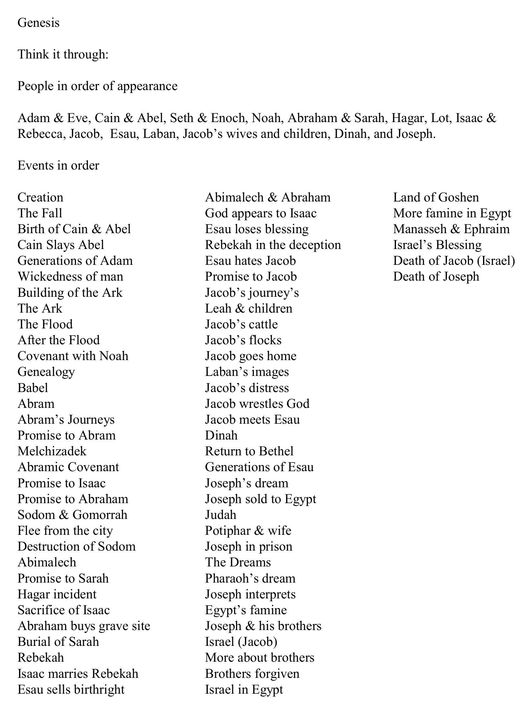
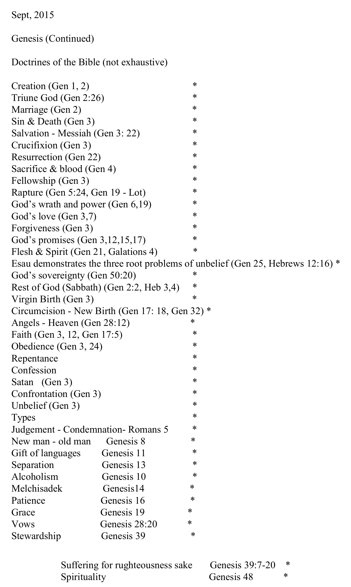

Genesis
Read each chapter first, then work through Jim’s questions for that chapter. His wording is unchanged, including punctuation and typographical quirks.
Outline
I.ENTRANCE OF SIN ON EARTH, CHAPTERS 1–11
A.Creation, Chapters 1–2
1.Heaven and Earth, 1:1
“Create” (bara) occurs only 3 times, vv. 1, 21, 27
2.Earth Became Waste and Void, 1:2
3.Re-creation, 1:3–2:25 a.First Day—Light, 1:3–5 b.Second Day—Air Spaces (Firmament), 1:6–8 c.Third Day—Dry Land Appears and Plant Life, 1:9–13 d.Fourth Day—Sun, Moon, Stars Appear, 1:14–19 e.Fifth Day—Animal Life (Biology), 1:20–23 f.Sixth Day—Fertility of Creation and Creation of Man, 1:24–31 g.Seventh Day—Sabbath, 2:1–3 h.Recapitulation of the Creation of Man, 2:4–25
(Law of recurrence)
B.Fall, Chapters 3–4
1.Root of Sin—Doubting and Disobeying God
2.Fruit of Sin—
“Out of the heart proceed … murders …”
(Matt. 15:19)
C.Flood (Deluge), Chapters 5–9
1.Book of Generations of Adam—Through Seth Beginning of Man’s History—Obituary Notices, Chapter 5
2.Antediluvian Civilization—Cause of Flood and Construction of Ark, Chapter 6 3.Judgment of Flood, Chapter 7
4.Postdiluvian Civilization—After the Flood, Chapter 8
5.Postdiluvian Life—New Beginning, Chapter 9
D.Tower of Babel and Confusion of Tongues, Chapters 10–11
1.Ethnology—Sons of Noah, Chapter 10
2.Tower of Babel, Chapter 11
(Contrast to Day of Pentecost)
II.Preparation for the Coming of the Redeemer of All Mankind, Chapters 12–50
A.Abraham (Faith), Chapters 12–23
(Development of faith by seven appearances of God)
1.God’s Call and Promise to Abram—His Response by Lapse of Faith, Chapter 12 2.Abram Returns to Land from Egypt—Separates from Lot—God Then Appears the Third Time to Abram, Chapter 13
3.The First War—Abram Delivers Lot—The First Priest—Abram Blessed by Melchizedek, Chapter 14
4.God Reveals Himself More Completely to Abram—Reaffirms His Promises,
1 Chapter 15
5.Unbelief of Sarai and Abram—Birth of Ishmael, Chapter 16 6.God Makes Covenant with Abraham (Abram Becomes Abraham)—Confirms Promise to Abraham About a Son, Chapter 17
7.God Reveals Coming Destruction of Sodom to Abraham—Abraham Intercedes on Behalf of Inhabitants, Chapter 18
8.Angels Warn Lot—Lot Leaves Sodom—God Destroys Cities of the Plain, Chapter 19
9.Abraham Repeats Sin at Gerar About Relationship of Sarah, Chapter 20 10.Birth of Isaac—Hagar and Ishmael Cast Out—Abraham at Beer-sheba, Chapter 21 11.God Commands Abraham to Offer Isaac—Restrains Him—Reconfirms Covenant with Abraham, Chapter 22
12.Death of Sarah—Abraham Purchases Machpelah Cave for Burial Place, Chapter 23
B.Isaac (the Beloved Son), Chapters 24–26
Choosing of a bride compares with Christ and the Church.
1.Abraham Sends Servant for Bride for Isaac—Rebekah Returns with Him—Becomes Isaac’s Bride, Chapter 24
2.Death of Abraham—Birth of Esau and Jacob (twins) to Isaac and Rebekah—Esau Sells Birthright to Jacob, Chapter 25
3.God Confirms Covenant to Isaac—Isaac Misrepresents Relationship with Rebekah—Isaac Digs Well in Gerar, Chapter 26
C.Jacob, Chapters 27–36
“Whom the Lord loveth He chasteneth”
1.Jacob and Rebekah Connive to Get Blessing Intended for Esau, Chapter 27 2.Jacob Leaves Home—At Bethel God Appears to Him—Confirms Abrahamic Covenant, Chapter 28
3.Jacob Arrives in Haran—Meets Rachel and Uncle Laban—Serves for Rachel—Deceived into Marrying Leah, Chapter 29
4.Birth of Sons to Jacob—Jacob Prepares to Leave Laban—Jacob’s Bargain Pays Off, Chapter 30
5.Jacob Flees from Haran—Laban Overtakes Him—Jacob and Laban Make Mizpah Covenant, Chapter 31
6.Crisis in Life of Jacob: At Peniel a Man Wrestles with Him—Jacob’s Name Changed to Israel, Chapter 32
7.Jacob Meets Esau—Jacob Journeys to Shalem, Chapter 33
8.Scandal in Jacob’s Family: Dinah Defiled—Brothers Avenge by Slaying Men of Hamor, Chapter 34
9.Jacob Returns to Bethel—Rachel Dies at Bethlehem—Isaac Dies at Hebron, Chapter 35
10.Family of Esau Which Becomes Nation of Edom, Chapter 36 D.Joseph (suffering and glory), Chapters 37–50
1.Jacob Dwells in Canaan—Joseph Sold into Slavery, Chapter 37
2 2.Sin and Shame of Judah, Chapter 38
3.Humiliation in Egypt, Chapters 39–40 a.Overseer in House of Potiphar—Tempted, Then Framed by Wife of Potiphar—Imprisoned, Chapter 39 b.Joseph in Prison—Interprets Dreams of Baker and Butler, Chapter 40 4.Exaltation in Egypt, Chapters 41–48 a.Joseph Interprets Dreams of Pharaoh—Made Overseer of Egypt—Marries Asenath—Birth of Manasseh and Ephraim, Chapter 41 b.Jacob Sends Ten Sons to Egypt for Corn—Audience with Joseph—Leave Simeon as Hostage—Return Home with Corn and Refunded Money, Chapter 42 c.Jacob Sends Sons (Benjamin Included) Again to Egypt—Joseph Entertains Brothers (Does Not Reveal His Identity), Chapter 43 d.Joseph Sends Brothers Home—Arrested by Steward—Cup Found in Benjamin’s Sack—Judah Pleads for Benjamin, Chapter 44 e.Joseph Reveals Identity—Tender Reunion with Brothers—Invites Jacob and All Family to Egypt, Chapter 45 f.Jacob with Family (70) Moves to Egypt—Jacob and Joseph Reunited, Chapter 46 g.Jacob and Brothers Dwell in Goshen—Presented to Pharaoh—Famine Forces Egyptians to Sell Land to Joseph for Pharaoh—Joseph Swears He Will Bury Jacob in Canaan, Chapter 47 h.Jacob on Deathbed Blesses Joseph’s Sons, Chapter 48
5.Death and Burial of Jacob and Joseph, Chapters 49–50 a.Jacob Gives Deathbed Blessing and Prophecy for Twelve Sons, Chapter 49 b.Death of Jacob and Burial in Canaan—Death and Burial of Joseph in Egypt, Chapter 50
3
Introduction to Genesis
Today we are starting a journey through the first book of the Bible. Its name could be “The Book of Beginnings”. As you will see so many things start here. The universe, the earth and heavens, animals and fish, birds and bees, sun and moon, seasons, and man. We see the fall of man and the beginnings of redemption. We see a great flood with only eight survivors. The line of the Messiah starts to come into view. Abraham comes on the scene and we see the beginning of Israel as a family and then a nation. We see the faith and obedience of Abraham. The trials and errors of Jacob. We see man’s start in a garden and end in a coffin.
Genesis begins far beyond any human witness. It is the record of God’s creative power from nothing. It is perfect, inerrant, and eternal. It covers a number of major doctrines which are covered in other books. Jesus quoted from Genesis a number of times (Matt 19:4-6, 24:37-39; Mark 10:4-9; Luke 11:49-51, 17:26-29, 32; John 1:5, 7:21-23; 8:44-56). He verified Moses as the writer (Matt 19:8; Mark 10:3; John 7:21).
The book can be divided into 2 parts. The first eleven chapters deal with major subjects. Things like the Creation, the Fall, the Flood, the Tower of Babel. Personalities are the subject of the second part - Abraham, a man of faith, Isaac, the beloved son, Jacob the chosen and disciplined son, and Joseph, the suffering and glorified son.
Again, we can divide it by another measure, time. At best the first eleven chapters, cover 2000 years, it may be hundreds of thousands years. The second section - chapters 12 - 50 covers only three hundred fifty years. What does this all mean. It means that God places more emphasis on Jesus Christ and His people than He does on the physical creation. You and your salvation are a very big thing to God. Enjoy.
Charts, maps, and diagrams
These are Jim’s study visuals. Hole-punch marks, phantom scan lines, and page-edge artifacts have been cleaned; the drawings themselves are unchanged.


Chapter 1
Packet 1 - Genesis
Genesis 1 (King James Version)
1In the beginning God created the heaven and the earth. 2And the earth was without form, and void; and darkness was upon the face of the deep. And the Spirit of God moved upon the face of the waters. 3And God said, Let there be light: and there was light. 4And God saw the light, that it was good: and God divided the light from the darkness. 5And God called the light Day, and the darkness he called Night. And the evening and the morning were the first day. 6And God said, Let there be a firmament in the midst of the waters, and let it divide the waters from the waters. 7And God made the firmament, and divided the waters which were under the firmament from the waters which were above the firmament: and it was so. 8And God called the firmament Heaven. And the evening and the morning were the second day. 9And God said, Let the waters under the heaven be gathered together unto one place, and let the dry land appear: and it was so. 10And God called the dry land Earth; and the gathering together of the waters called he Seas: and God saw that it was good. 11And God said, Let the earth bring forth grass, the herb yielding seed, and the fruit tree yielding fruit after his kind, whose seed is in itself, upon the earth: and it was so. 12And the earth brought forth grass, and herb yielding seed after his kind, and the tree yielding fruit, whose seed was in itself, after his kind: and God saw that it was good. 13And the evening and the morning were the third day. 14And God said, Let there be lights in the firmament of the heaven to divide the day from the night; and let them be for signs, and for seasons, and for days, and years: 15And let them be for lights in the firmament of the heaven to give light upon the earth: and it was so. 16And God made two great lights; the greater light to rule the day, and the lesser light to rule the night: he made the stars also. 17And God set them in the firmament of the heaven to give light upon the earth, 18And to rule over the day and over the night, and to divide the light from the darkness: and God saw that it was good. 19And the evening and the morning were the fourth day. 20And God said, Let the waters bring forth abundantly the moving creature that hath life, and fowl that may fly above the earth in the open firmament of heaven. 21And God created great whales, and every living creature that moveth, which the waters brought forth abundantly, after their kind, and every winged fowl after his kind: and God saw that it was good. 22And God blessed them, saying, Be fruitful, and multiply, and fill the waters in the seas, and let fowl multiply in the earth. 23And the evening and the morning were the fifth day. 24And God said, Let the earth bring forth the living creature after his kind, cattle, and creeping thing, and beast of the earth after his kind: and it was so. 25And God made the beast of the earth after his kind, and cattle after their kind, and every thing that creepeth upon the earth after his kind: and God saw that it was good. 26And God said, Let us make man in our image, after our likeness: and let them have dominion over the fish of the sea, and over the fowl of the air, and over the cattle, and over all the earth, and over every creeping thing that creepeth upon the earth. 27So God created man in his own image, in the image of God created he him; male and female created he them. 28And God blessed them, and God said unto them, Be fruitful, and multiply, and replenish the earth, and subdue it: and have dominion over the fish of the sea, and over the fowl of the air, and over every living thing that moveth upon the earth. 29And God said, Behold, I have given you every herb bearing seed, which is upon the face of all the earth, and every tree, in the which is the fruit of a tree yielding seed; to you it shall be for meat. 30And to every beast of the earth, and to every fowl of the air, and to every thing that creepeth upon the earth, wherein there is life, I have given every green herb for meat: and it was so. 31And God saw every thing that he had made, and, behold, it was very good. And the evening and the morning were the sixth day.Jim’s questions
-
1)Who created the world?
Genesis 1:1 (KJV) 1 In the beginning God created the heaven and the earth.Answer:
-
2)What did he use for basic material?
Verse needed — no verse number on the packet, and no word in the question points to one verse in this chapter.
Answer:
-
3)How then did he do it? .
Verse needed — no verse number on the packet, and no word in the question points to one verse in this chapter.
Answer:
-
4)What is the order of creation? There is a little phrase in verses 11,12,21,24,25 that contradicts te theory of evolution. What is it?
Genesis 1:11-12 (KJV) 11 And God said, Let the earth bring forth grass, the herb yielding seed, and the fruit tree yielding fruit after his kind, whose seed is in itself, upon the earth: and it was so. 12 And the earth brought forth grass, and herb yielding seed after his kind, and the tree yielding fruit, whose seed was in itself, after his kind: and God saw that it was good.Genesis 1:21 (KJV) 21 And God created great whales, and every living creature that moveth, which the waters brought forth abundantly, after their kind, and every winged fowl after his kind: and God saw that it was good.Genesis 1:24-25 (KJV) 24 And God said, Let the earth bring forth the living creature after his kind, cattle, and creeping thing, and beast of the earth after his kind: and it was so. 25 And God made the beast of the earth after his kind, and cattle after their kind, and every thing that creepeth upon the earth after his kind: and God saw that it was good.Answer:
-
5)What is God’s command to the Human race? V 28
Genesis 1:28 (KJV) 28 And God blessed them, and God said unto them, Be fruitful, and multiply, and replenish the earth, and subdue it: and have dominion over the fish of the sea, and over the fowl of the air, and over every living thing that moveth upon the earth.Answer:
-
6)What would we call people today who followed the dietary rules of V 29.30
Genesis 1:29 (KJV) 29 And God said, Behold, I have given you every herb bearing seed, which is upon the face of all the earth, and every tree, in the which is the fruit of a tree yielding seed; to you it shall be for meat.Answer:
-
7)What did God think of His creation? V 31
Genesis 1:31 (KJV) 31 And God saw every thing that he had made, and, behold, it was very good. And the evening and the morning were the sixth day.Answer:
-
8)What was the world like before God said ‘let there be light’?
Genesis 1:3 (KJV) 3 And God said, Let there be light: and there was light.Answer:
-
9)In verse 14 he creates the sun and the moon. He gives them further purpose. What was that?
Genesis 1:14 (KJV) 14 And God said, Let there be lights in the firmament of the heaven to divide the day from the night; and let them be for signs, and for seasons, and for days, and years:Answer:
-
10)How was man made and what was his purpose?
Genesis 1:26-28 (KJV) 26 And God said, Let us make man in our image, after our likeness: and let them have dominion over the fish of the sea, and over the fowl of the air, and over the cattle, and over all the earth, and over every creeping thing that creepeth upon the earth. 27 So God created man in his own image, in the image of God created he him; male and female created he them. 28 And God blessed them, and God said unto them, Be fruitful, and multiply, and replenish the earth, and subdue it: and have dominion over the fish of the sea, and over the fowl of the air, and over every living thing that moveth upon the earth.Answer:
Chapter 2
Packet 2 - Genesis
Genesis 2 (King James Version)
1Thus the heavens and the earth were finished, and all the host of them. 2And on the seventh day God ended his work which he had made; and he rested on the seventh day from all his work which he had made. 3And God blessed the seventh day, and sanctified it: because that in it he had rested from all his work which God created and made. 4These are the generations of the heavens and of the earth when they were created, in the day that the LORD God made the earth and the heavens, 5And every plant of the field before it was in the earth, and every herb of the field before it grew: for the LORD God had not caused it to rain upon the earth, and there was not a man to till the ground. 6But there went up a mist from the earth, and watered the whole face of the ground. 7And the LORD God formed man of the dust of the ground, and breathed into his nostrils the breath of life; and man became a living soul. 8And the LORD God planted a garden eastward in Eden; and there he put the man whom he had formed. 9And out of the ground made the LORD God to grow every tree that is pleasant to the sight, and good for food; the tree of life also in the midst of the garden, and the tree of knowledge of good and evil. 10And a river went out of Eden to water the garden; and from thence it was parted, and became into four heads. 11The name of the first is Pison: that is it which compasseth the whole land of Havilah, where there is gold; 12And the gold of that land is good: there is bdellium and the onyx stone. 13And the name of the second river is Gihon: the same is it that compasseth the whole land of Ethiopia. 14And the name of the third river is Hiddekel: that is it which goeth toward the east of Assyria. And the fourth river is Euphrates. 15And the LORD God took the man, and put him into the garden of Eden to dress it and to keep it. 16And the LORD God commanded the man, saying, Of every tree of the garden thou mayest freely eat: 17But of the tree of the knowledge of good and evil, thou shalt not eat of it: for in the day that thou eatest thereof thou shalt surely die. 18And the LORD God said, It is not good that the man should be alone; I will make him an help meet for him. 19And out of the ground the LORD God formed every beast of the field, and every fowl of the air; and brought them unto Adam to see what he would call them: and whatsoever Adam called every living creature, that was the name thereof. 20And Adam gave names to all cattle, and to the fowl of the air, and to every beast of the field; but for Adam there was not found an help meet for him. 21And the LORD God caused a deep sleep to fall upon Adam, and he slept: and he took one of his ribs, and closed up the flesh instead thereof; 22And the rib, which the LORD God had taken from man, made he a woman, and brought her unto the man. 23And Adam said, This is now bone of my bones, and flesh of my flesh: she shall be called Woman, because she was taken out of Man. 24Therefore shall a man leave his father and his mother, and shall cleave unto his wife: and they shall be one flesh. 25And they were both naked, the man and his wife, and were not ashamed.Jim’s questions
-
1)When God rested on the Seventh days was he tired?
Genesis 2:2-3 (KJV) 2 And on the seventh day God ended his work which he had made; and he rested on the seventh day from all his work which he had made. 3 And God blessed the seventh day, and sanctified it: because that in it he had rested from all his work which God created and made.Answer:
-
2)In what way does Chapter 2 compliment Chapter 1?
Verse needed — no verse number on the packet, and no word in the question points to one verse in this chapter.
Answer:
-
3)The shrubs and plants were not yet planted. Why not? V5
Genesis 2:5 (KJV) 5 And every plant of the field before it was in the earth, and every herb of the field before it grew: for the Lord God had not caused it to rain upon the earth, and there was not a man to till the ground.Answer:
-
4)What did it take to turn the man into a living being? 7
Genesis 2:7 (KJV) 7 And the Lord God formed man of the dust of the ground, and breathed into his nostrils the breath of life; and man became a living soul.Answer:
-
5)Name the four rivers formed by the river from the Garden of Eden?
Genesis 2:10-14 (KJV) 10 And a river went out of Eden to water the garden; and from thence it was parted, and became into four heads. 11 The name of the first is Pison: that is it which compasseth the whole land of Havilah, where there is gold; 12 And the gold of that land is good: there is bdellium and the onyx stone. 13 And the name of the second river is Gihon: the same is it that compasseth the whole land of Ethiopia. 14 And the name of the third river is Hiddekel: that is it which goeth toward the east of Assyria. And the fourth river is Euphrates.Answer:
-
6)Are any of these rivers familiar to you and what are their names ?
Genesis 2:11-14 (KJV) 11 The name of the first is Pison: that is it which compasseth the whole land of Havilah, where there is gold; 12 And the gold of that land is good: there is bdellium and the onyx stone. 13 And the name of the second river is Gihon: the same is it that compasseth the whole land of Ethiopia. 14 And the name of the third river is Hiddekel: that is it which goeth toward the east of Assyria. And the fourth river is Euphrates.Answer:
-
7)What were the two trees in the middle of the garden? V 9
Genesis 2:9 (KJV) 9 And out of the ground made the Lord God to grow every tree that is pleasant to the sight and good for food; the tree of life also in the midst of the garden, and the tree of knowledge of good and evil.Answer:
-
8)What was the man’s job? V15
Genesis 2:15 (KJV) 15 And the Lord God took the man, and put him into the garden of Eden to dress it and to keep it.Answer:
-
9)What was God’s instruction to the man? V17
Genesis 2:17 (KJV) 17 But of the tree of the knowledge of good and evil, thou shalt not eat of it: for in the day that thou eatest thereof thou shalt surely die.Answer:
-
10)What was “not good”? V 18
Genesis 2:18 (KJV) 18 And the Lord God said, It is not good that the man should be alone; I will make him an help meet for him.Answer:
-
11)Where did Woman come from? V 22
Genesis 2:22 (KJV) 22 And the rib, which the Lord God had taken from man, made he a woman, and brought her unto the man.Answer:
-
12)What was her purpose? V 20
Genesis 2:20 (KJV) 20 And Adam gave names to all cattle, and to the fowl of the air, and to every beast of the field; but for Adam there was not found an help meet for him.Answer:
-
Thought question - Why were they not ashamed of their nakedness?
Genesis 2:25 (KJV) 25 And they were both naked, the man and his wife, and were not ashamed. Question 14 Thought question - Who named the woman and what did he call her? Why did not God name her. V 23Genesis 2:23 (KJV) 23 And Adam said, This is now bone of my bones, and flesh of my flesh: she shall be called Woman, because she was taken out of Man. Note: number printed without “)” on the packet.Answer:
-
Thought question - Who named the woman and what did he call her? Why did not God name her. V 23
Chapter 3
Packet 3 - Genesis
Genesis 3 (King James Version)
1Now the serpent was more subtil than any beast of the field which the LORD God had made. And he said unto the woman, Yea, hath God said, Ye shall not eat of every tree of the garden? 2And the woman said unto the serpent, We may eat of the fruit of the trees of the garden: 3But of the fruit of the tree which is in the midst of the garden, God hath said, Ye shall not eat of it, neither shall ye touch it, lest ye die. 4And the serpent said unto the woman, Ye shall not surely die: 5For God doth know that in the day ye eat thereof, then your eyes shall be opened, and ye shall be as gods, knowing good and evil. 6And when the woman saw that the tree was good for food, and that it was pleasant to the eyes, and a tree to be desired to make one wise, she took of the fruit thereof, and did eat, and gave also unto her husband with her; and he did eat. 7And the eyes of them both were opened, and they knew that they were naked; and they sewed fig leaves together, and made themselves aprons. 8And they heard the voice of the LORD God walking in the garden in the cool of the day: and Adam and his wife hid themselves from the presence of the LORD God amongst the trees of the garden. 9And the LORD God called unto Adam, and said unto him, Where art thou? 10And he said, I heard thy voice in the garden, and I was afraid, because I was naked; and I hid myself. 11And he said, Who told thee that thou wast naked? Hast thou eaten of the tree, whereof I commanded thee that thou shouldest not eat? 12And the man said, The woman whom thou gavest to be with me, she gave me of the tree, and I did eat. 13And the LORD God said unto the woman, What is this that thou hast done? And the woman said, The serpent beguiled me, and I did eat. 14And the LORD God said unto the serpent, Because thou hast done this, thou art cursed above all cattle, and above every beast of the field; upon thy belly shalt thou go, and dust shalt thou eat all the days of thy life: 15And I will put enmity between thee and the woman, and between thy seed and her seed; it shall bruise thy head, and thou shalt bruise his heel. 16Unto the woman he said, I will greatly multiply thy sorrow and thy conception; in sorrow thou shalt bring forth children; and thy desire shall be to thy husband, and he shall rule over thee. 17And unto Adam he said, Because thou hast hearkened unto the voice of thy wife, and hast eaten of the tree, of which I commanded thee, saying, Thou shalt not eat of it: cursed is the ground for thy sake; in sorrow shalt thou eat of it all the days of thy life; 18Thorns also and thistles shall it bring forth to thee; and thou shalt eat the herb of the field; 19In the sweat of thy face shalt thou eat bread, till thou return unto the ground; for out of it wast thou taken: for dust thou art, and unto dust shalt thou return. 20And Adam called his wife’s name Eve; because she was the mother of all living. 21Unto Adam also and to his wife did the LORD God make coats of skins, and clothed them. 22And the LORD God said, Behold, the man is become as one of us, to know good and evil: and now, lest he put forth his hand, and take also of the tree of life, and eat, and live for ever: 23Therefore the LORD God sent him forth from the garden of Eden, to till the ground from whence he was taken. 24So he drove out the man; and he placed at the east of the garden of Eden Cherubims, and a flaming sword which turned every way, to keep the way of the tree of life.Jim’s questions
-
1)Did the woman misquote God when she talked to the serpent? V 3
Genesis 3:3 (KJV) 3 But of the fruit of the tree which is in the midst of the garden, God hath said, Ye shall not eat of it, neither shall ye touch it, lest ye die.Answer:
-
2)Did the serpent contradict God? What did he say? V 4
Genesis 3:4 (KJV) 4 And the serpent said unto the woman, Ye shall not surely die:Answer:
-
3)Why did they cover them selves with fig leaves? V 7,10
Genesis 3:7 (KJV) 7 And the eyes of them both were opened, and they knew that they were naked; and they sewed fig leaves together, and made themselves aprons.Genesis 3:10 (KJV) 10 And he said, I heard thy voice in the garden, and I was afraid, because I was naked; and I hid myself.Answer:
-
4)Who did the man pass the buck to? V 12
Genesis 3:12 (KJV) 12 And the man said, The woman whom thou gavest to be with me, she gave me of the tree, and I did eat.Answer:
-
5)What is the nature of the curse on the serpent? V 14
Genesis 3:14 (KJV) 14 And the Lord God said unto the serpent, Because thou hast done this, thou art cursed above all cattle, and above every beast of the field; upon thy belly shalt thou go, and dust shalt thou eat all the days of thy life:Answer:
-
6)What is this verse about and what is its significance? V 15
Genesis 3:15 (KJV) 15 And I will put enmity between thee and the woman, and between thy seed and her seed; it shall bruise thy head, and thou shalt bruise his heel.Answer:
-
7)What was Adam’s penalty for listening to his wife? V 17
Genesis 3:17 (KJV) 17 And unto Adam he said, Because thou hast hearkened unto the voice of thy wife, and hast eaten of the tree, of which I commanded thee, saying, Thou shalt not eat of it: cursed is the ground for thy sake; in sorrow shalt thou eat of it all the days of thy life;Answer:
-
8)Discuss the meaning of woman’s name Eve? V 20
Genesis 3:20 (KJV) 20 And Adam called his wife’s name Eve; because she was the mother of all living.Answer:
-
9)Why does God send the man out of the garden? V 22,23
Genesis 3:22-23 (KJV) 22 And the Lord God said, Behold, the man is become as one of us, to know good and evil: and now, lest he put forth his hand, and take also of the tree of life, and eat, and live for ever: 23 Therefore the Lord God sent him forth from the garden of Eden, to till the ground from whence he was taken.Answer:
-
10)Does the Cherubim, guarding the tree, prevent us from eternal life? V 24 If your answer is no then what does the Cherubim and the flaming sword mean?
Genesis 3:24 (KJV) 24 So he drove out the man; and he placed at the east of the garden of Eden Cherubims, and a flaming sword which turned every way, to keep the way of the tree of life.Answer:
Chapter 4
Packet 4 - Genesis
Genesis 4 (King James Version)
1And Adam knew Eve his wife; and she conceived, and bare Cain, and said, I have gotten a man from the LORD. 2And she again bare his brother Abel. And Abel was a keeper of sheep, but Cain was a tiller of the ground. 3And in process of time it came to pass, that Cain brought of the fruit of the ground an offering unto the LORD. 4And Abel, he also brought of the firstlings of his flock and of the fat thereof. And the LORD had respect unto Abel and to his offering: 5But unto Cain and to his offering he had not respect. And Cain was very wroth, and his countenance fell. 6And the LORD said unto Cain, Why art thou wroth? and why is thy countenance fallen? 7If thou doest well, shalt thou not be accepted? and if thou doest not well, sin lieth at the door. And unto thee shall be his desire, and thou shalt rule over him. 8And Cain talked with Abel his brother: and it came to pass, when they were in the field, that Cain rose up against Abel his brother, and slew him. 9And the LORD said unto Cain, Where is Abel thy brother? And he said, I know not: Am I my brother’s keeper? 10And he said, What hast thou done? the voice of thy brother’s blood crieth unto me from the ground. 11And now art thou cursed from the earth, which hath opened her mouth to receive thy brother’s blood from thy hand; 12When thou tillest the ground, it shall not henceforth yield unto thee her strength; a fugitive and a vagabond shalt thou be in the earth. 13And Cain said unto the LORD, My punishment is greater than I can bear. 14Behold, thou hast driven me out this day from the face of the earth; and from thy face shall I be hid; and I shall be a fugitive and a vagabond in the earth; and it shall come to pass, that every one that findeth me shall slay me. 15And the LORD said unto him, Therefore whosoever slayeth Cain, vengeance shall be taken on him sevenfold. And the LORD set a mark upon Cain, lest any finding him should kill him. 16And Cain went out from the presence of the LORD, and dwelt in the land of Nod, on the east of Eden. 17And Cain knew his wife; and she conceived, and bare Enoch: and he builded a city, and called the name of the city, after the name of his son, Enoch. 18And unto Enoch was born Irad: and Irad begat Mehujael: and Mehujael begat Methusael: and Methusael begat Lamech. 19And Lamech took unto him two wives: the name of the one was Adah, and the name of the other Zillah. 20And Adah bare Jabal: he was the father of such as dwell in tents, and of such as have cattle. 21And his brother’s name was Jubal: he was the father of all such as handle the harp and organ. 22And Zillah, she also bare Tubalcain, an instructer of every artificer in brass and iron: and the sister of Tubalcain was Naamah. 23And Lamech said unto his wives, Adah and Zillah, Hear my voice; ye wives of Lamech, hearken unto my speech: for I have slain a man to my wounding, and a young man to my hurt. 24If Cain shall be avenged sevenfold, truly Lamech seventy and sevenfold. 25And Adam knew his wife again; and she bare a son, and called his name Seth: For God, said she, hath appointed me another seed instead of Abel, whom Cain slew. 26And to Seth, to him also there was born a son; and he called his name Enos: then began men to call upon the name of the LORD.Jim’s questions
-
1)Eve has two sons. What are their names? V1,2
Genesis 4:1-2 (KJV) 1 And Adam knew Eve his wife; and she conceived, and bare Cain, and said, I have gotten a man from the Lord. 2 And she again bare his brother Abel. And Abel was a keeper of sheep, but Cain was a tiller of the ground.Answer:
-
2)What are their vocations? V 2
Genesis 4:2 (KJV) 2 And she again bare his brother Abel. And Abel was a keeper of sheep, but Cain was a tiller of the ground.Answer:
-
3)What is Cain’s offering? V 3
Genesis 4:3 (KJV) 3 And in process of time it came to pass, that Cain brought of the fruit of the ground an offering unto the Lord.Answer:
-
4)What is Abel’s offering? V 4
Genesis 4:4 (KJV) 4 And Abel, he also brought of the firstlings of his flock and of the fat thereof. And the Lord had respect unto Abel and to his offering:Answer:
-
5)Which was acceptable to God? V4,5
Genesis 4:4-5 (KJV) 4 And Abel, he also brought of the firstlings of his flock and of the fat thereof. And the Lord had respect unto Abel and to his offering: 5 But unto Cain and to his offering he had not respect. And Cain was very wroth, and his countenance fell.Answer:
-
6)Why did God favor Abel’s offering?
Genesis 4:4-5 (KJV) 4 And Abel, he also brought of the firstlings of his flock and of the fat thereof. And the Lord had respect unto Abel and to his offering: 5 But unto Cain and to his offering he had not respect. And Cain was very wroth, and his countenance fell.Answer:
-
7)Does God give Cain a second chance? V 7
Genesis 4:7 (KJV) 7 If thou doest well, shalt thou not be accepted? and if thou doest not well, sin lieth at the door. And unto thee shall be his desire, and thou shalt rule over him.Answer:
-
8)Why did Cain kill Abel? V 8 and 1 John 3:12, 15
1 John 3:12 (KJV) 12 Not as Cain, who was of that wicked one, and slew his brother. And wherefore slew he him? Because his own works were evil, and his brother’s righteous.Genesis 4:8 (KJV) 8 And Cain talked with Abel his brother: and it came to pass, when they were in the field, that Cain rose up against Abel his brother, and slew him.Genesis 4:1 (KJV) 1 And Adam knew Eve his wife; and she conceived, and bare Cain, and said, I have gotten a man from the Lord.Answer:
-
9)What is Cain’s punishment? V 11, 12
Genesis 4:11-12 (KJV) 11 And now art thou cursed from the earth, which hath opened her mouth to receive thy brother’s blood from thy hand; 12 When thou tillest the ground, it shall not henceforth yield unto thee her strength; a fugitive and a vagabond shalt thou be in the earth.Answer:
-
10)Were Can’s relatives good or wicked? V 16-24
Genesis 4:16-24 (KJV) 16 And Cain went out from the presence of the Lord, and dwelt in the land of Nod, on the east of Eden. 17 And Cain knew his wife; and she conceived, and bare Enoch: and he builded a city, and called the name of the city, after the name of his son, Enoch. 18 And unto Enoch was born Irad: and Irad begat Mehujael: and Mehujael begat Methusael: and Methusael begat Lamech. 19 And Lamech took unto him two wives: the name of the one was Adah, and the name of the other Zillah. 20 And Adah bare Jabal: he was the father of such as dwell in tents, and of such as have cattle. 21 And his brother’s name was Jubal: he was the father of all such as handle the harp and organ. 22 And Zillah, she also bare Tubal–cain, an instructer of every artificer in brass and iron: and the sister of Tubal–cain was Naamah. 23 And Lamech said unto his wives, Adah and Zillah, Hear my voice; ye wives of Lamech, hearken unto my speech: for I have slain a man to my wounding, and a young man to my hurt. 24 If Cain shall be avenged sevenfold, truly Lamech seventy and sevenfold.Answer:
-
11)Did Adam have more Children? V 25.26
Genesis 4:25 (KJV) 25 And Adam knew his wife again; and she bare a son, and called his name Seth: For God, said she, hath appointed me another seed instead of Abel, whom Cain slew.Answer:
-
12)Were they Godly men? V 26
Genesis 4:26 (KJV) 26 And to Seth, to him also there was born a son; and he called his name Enos: then began men to call upon the name of the Lord.Answer:
-
Thought question – When we disobey God does the sin just stop with us? If you answered No then try to find in your own lives or a life you know how the disobedience worked itself out.
Verse needed — thought or personal question with no verse number on the packet; no single verse could be determined.
Answer:
Chapter 5
Packet 5 - Genesis
Genesis 5 (King James Version)
1This is the book of the generations of Adam. In the day that God created man, in the likeness of God made he him; 2Male and female created he them; and blessed them, and called their name Adam, in the day when they were created. 3And Adam lived an hundred and thirty years, and begat a son in his own likeness, after his image; and called his name Seth: 4And the days of Adam after he had begotten Seth were eight hundred years: and he begat sons and daughters: 5And all the days that Adam lived were nine hundred and thirty years: and he died. 6And Seth lived an hundred and five years, and begat Enos: 7And Seth lived after he begat Enos eight hundred and seven years, and begat sons and daughters: 8And all the days of Seth were nine hundred and twelve years: and he died. 9And Enos lived ninety years, and begat Cainan: 10And Enos lived after he begat Cainan eight hundred and fifteen years, and begat sons and daughters: 11And all the days of Enos were nine hundred and five years: and he died. 12And Cainan lived seventy years, and begat Mahalaleel: 13And Cainan lived after he begat Mahalaleel eight hundred and forty years, and begat sons and daughters: 14And all the days of Cainan were nine hundred and ten years: and he died. 15And Mahalaleel lived sixty and five years, and begat Jared: 16And Mahalaleel lived after he begat Jared eight hundred and thirty years, and begat sons and daughters: 17And all the days of Mahalaleel were eight hundred ninety and five years: and he died. 18And Jared lived an hundred sixty and two years, and he begat Enoch: 19And Jared lived after he begat Enoch eight hundred years, and begat sons and daughters: 20And all the days of Jared were nine hundred sixty and two years: and he died. 21And Enoch lived sixty and five years, and begat Methuselah: 22And Enoch walked with God after he begat Methuselah three hundred years, and begat sons and daughters: 23And all the days of Enoch were three hundred sixty and five years: 24And Enoch walked with God: and he was not; for God took him. 25And Methuselah lived an hundred eighty and seven years, and begat Lamech: 26And Methuselah lived after he begat Lamech seven hundred eighty and two years, and begat sons and daughters: 27And all the days of Methuselah were nine hundred sixty and nine years: and he died. 28And Lamech lived an hundred eighty and two years, and begat a son: 29And he called his name Noah, saying, This same shall comfort us concerning our work and toil of our hands, because of the ground which the LORD hath cursed. 30And Lamech lived after he begat Noah five hundred ninety and five years, and begat sons and daughters: 31And all the days of Lamech were seven hundred seventy and seven years: and he died. 32And Noah was five hundred years old: and Noah begat Shem, Ham, and Japheth.Jim’s questions
-
1)In whose likeness were men and women made? V 1
Genesis 5:1 (KJV) 1 This is the book of the generations of Adam. In the day that God created man, in the likeness of God made he him;Answer:
-
2)Are we created beings or are we evolved beings? V 2
Genesis 5:2 (KJV) 2 Male and female created he them; and blessed them, and called their name Adam, in the day when they were created.Answer:
-
3)How old was Adam when Seth was born? V 3
Genesis 5:3 (KJV) 3 And Adam lived an hundred and thirty years, and begat a son in his own likeness, after his image; and called his name Seth:Answer:
-
4)How old was Adam when he died? V 5
Genesis 5:5 (KJV) 5 And all the days that Adam lived were nine hundred and thirty years: and he died.Answer:
-
5)Who was Enosh’s father? V 7
Genesis 5:7 (KJV) 7 And Seth lived after he begat Enos eight hundred and seven years, and begat sons and daughters:Answer:
-
6)What is the purpose of this long list of ancestors?
Verse needed — no verse number on the packet, and no word in the question points to one verse in this chapter.
Answer:
-
7)What is the common thread in all these accounts ?
Verse needed — no verse number on the packet, and no word in the question points to one verse in this chapter.
Answer:
-
8)What was unusual about Enoch? V 24
Genesis 5:24 (KJV) 24 And Enoch walked with God: and he was not; for God took him.Answer:
-
9)How old was Methuselah? V 27
Genesis 5:27 (KJV) 27 And all the days of Methuselah were nine hundred sixty and nine years: and he died.Answer:
-
10)Who was Methuselah’s famous grand son? V 29.
Genesis 5:29 (KJV) 29 And he called his name Noah, saying, This same shall comfort us concerning our work and toil of our hands, because of the ground which the Lord hath cursed.Answer:
-
Thought question - The answer is not revealed till later but can you guess what was special about Methuselah?
Verse needed — thought or personal question with no verse number on the packet; no single verse could be determined.
Answer:
Chapter 6
Packet 6 - Genesis
Genesis 6 (King James Version)
1And it came to pass, when men began to multiply on the face of the earth, and daughters were born unto them, 2That the sons of God saw the daughters of men that they were fair; and they took them wives of all which they chose. 3And the LORD said, My spirit shall not always strive with man, for that he also is flesh: yet his days shall be an hundred and twenty years. 4There were giants in the earth in those days; and also after that, when the sons of God came in unto the daughters of men, and they bare children to them, the same became mighty men which were of old, men of renown. 5And God saw that the wickedness of man was great in the earth, and that every imagination of the thoughts of his heart was only evil continually. 6And it repented the LORD that he had made man on the earth, and it grieved him at his heart. 7And the LORD said, I will destroy man whom I have created from the face of the earth; both man, and beast, and the creeping thing, and the fowls of the air; for it repenteth me that I have made them. 8But Noah found grace in the eyes of the LORD. 9These are the generations of Noah: Noah was a just man and perfect in his generations, and Noah walked with God. 10And Noah begat three sons, Shem, Ham, and Japheth. 11The earth also was corrupt before God, and the earth was filled with violence. 12And God looked upon the earth, and, behold, it was corrupt; for all flesh had corrupted his way upon the earth. 13And God said unto Noah, The end of all flesh is come before me; for the earth is filled with violence through them; and, behold, I will destroy them with the earth. 14Make thee an ark of gopher wood; rooms shalt thou make in the ark, and shalt pitch it within and without with pitch. 15And this is the fashion which thou shalt make it of: The length of the ark shall be three hundred cubits, the breadth of it fifty cubits, and the height of it thirty cubits. 16A window shalt thou make to the ark, and in a cubit shalt thou finish it above; and the door of the ark shalt thou set in the side thereof; with lower, second, and third stories shalt thou make it. 17And, behold, I, even I, do bring a flood of waters upon the earth, to destroy all flesh, wherein is the breath of life, from under heaven; and every thing that is in the earth shall die. 18But with thee will I establish my covenant; and thou shalt come into the ark, thou, and thy sons, and thy wife, and thy sons’ wives with thee. 19And of every living thing of all flesh, two of every sort shalt thou bring into the ark, to keep them alive with thee; they shall be male and female. 20Of fowls after their kind, and of cattle after their kind, of every creeping thing of the earth after his kind, two of every sort shall come unto thee, to keep them alive. 21And take thou unto thee of all food that is eaten, and thou shalt gather it to thee; and it shall be for food for thee, and for them. 22Thus did Noah; according to all that God commanded him, so did he.Jim’s questions
-
1)What is the difference between a son of God and the daughters of men? V 2
Genesis 6:2 (KJV) 2 That the sons of God saw the daughters of men that they were fair; and they took them wives of all which they chose.Answer:
-
2)What does God think about this? V 3
Genesis 6:3 (KJV) 3 And the Lord said, My spirit shall not always strive with man, for that he also is flesh: yet his days shall be an hundred and twenty years.Answer:
-
3)Does God only judge our behavior or does He judge our thoughts? V 5
Genesis 6:5 (KJV) 5 And God saw that the wickedness of man was great in the earth, and that every imagination of the thoughts of his heart was only evil continually.Answer:
-
4)How does God feel about sin? V
Genesis 6:6 (KJV) 6 And it repented the Lord that he had made man on the earth, and it grieved him at his heart.Answer:
-
5)How does God plan to fix this problem? V 7
Genesis 6:7 (KJV) 7 And the Lord said, I will destroy man whom I have created from the face of the earth; both man, and beast, and the creeping thing, and the fowls of the air; for it repenteth me that I have made them.Answer:
-
6)What stops Him? V 8
Genesis 6:8 (KJV) 8 But Noah found grace in the eyes of the Lord.Answer:
-
7)What do think there was about Noah that God favored?
Genesis 6:9 (KJV) 9 These are the generations of Noah: Noah was a just man and perfect in his generations, and Noah walked with God.Answer:
-
8)What were the sons of Noah named. V10
Genesis 6:10 (KJV) 10 And Noah begat three sons, Shem, Ham, and Japheth.Answer:
-
9)The Ark points to who?
Verse needed — no verse number on the packet, and no word in the question points to one verse in this chapter.
Answer:
-
10)How do we know that Noah believes in God? V 27
Verse needed — the packet cites Genesis 6:27, which does not exist in the KJV (likely a typo on the packet).
Answer:
Chapter 7
Packet 7 - Genesis
Genesis 7 (King James Version)
1And the LORD said unto Noah, Come thou and all thy house into the ark; for thee have I seen righteous before me in this generation. 2Of every clean beast thou shalt take to thee by sevens, the male and his female: and of beasts that are not clean by two, the male and his female. 3Of fowls also of the air by sevens, the male and the female; to keep seed alive upon the face of all the earth. 4For yet seven days, and I will cause it to rain upon the earth forty days and forty nights; and every living substance that I have made will I destroy from off the face of the earth. 5And Noah did according unto all that the LORD commanded him. 6And Noah was six hundred years old when the flood of waters was upon the earth. 7And Noah went in, and his sons, and his wife, and his sons’ wives with him, into the ark, because of the waters of the flood. 8Of clean beasts, and of beasts that are not clean, and of fowls, and of every thing that creepeth upon the earth, 9There went in two and two unto Noah into the ark, the male and the female, as God had commanded Noah. 10And it came to pass after seven days, that the waters of the flood were upon the earth. 11In the six hundredth year of Noah’s life, in the second month, the seventeenth day of the month, the same day were all the fountains of the great deep broken up, and the windows of heaven were opened. 12And the rain was upon the earth forty days and forty nights. 13In the selfsame day entered Noah, and Shem, and Ham, and Japheth, the sons of Noah, and Noah’s wife, and the three wives of his sons with them, into the ark; 14They, and every beast after his kind, and all the cattle after their kind, and every creeping thing that creepeth upon the earth after his kind, and every fowl after his kind, every bird of every sort. 15And they went in unto Noah into the ark, two and two of all flesh, wherein is the breath of life. 16And they that went in, went in male and female of all flesh, as God had commanded him: and the LORD shut him in. 17And the flood was forty days upon the earth; and the waters increased, and bare up the ark, and it was lift up above the earth. 18And the waters prevailed, and were increased greatly upon the earth; and the ark went upon the face of the waters. 19And the waters prevailed exceedingly upon the earth; and all the high hills, that were under the whole heaven, were covered. 20Fifteen cubits upward did the waters prevail; and the mountains were covered. 21And all flesh died that moved upon the earth, both of fowl, and of cattle, and of beast, and of every creeping thing that creepeth upon the earth, and every man: 22All in whose nostrils was the breath of life, of all that was in the dry land, died. 23And every living substance was destroyed which was upon the face of the ground, both man, and cattle, and the creeping things, and the fowl of the heaven; and they were destroyed from the earth: and Noah only remained alive, and they that were with him in the ark. 24And the waters prevailed upon the earth an hundred and fifty days.Jim’s questions
-
1)How many people were saved by the ark and who are they? V 7
Genesis 7:7 (KJV) 7 And Noah went in, and his sons, and his wife, and his sons’ wives with him, into the ark, because of the waters of the flood.Answer:
-
2)Why does he take seven clean pairs of animals but only one pair the other animals.? V2
Genesis 7:2 (KJV) 2 Of every clean beast thou shalt take to thee by sevens, the male and his female: and of beasts that are not clean by two, the male and his female.Answer:
-
3)How long were they in the Ark before the rain came? V 10.
Genesis 7:10 (KJV) 10 And it came to pass after seven days, that the waters of the flood were upon the earth.Answer:
-
4)Did the flood only come from the sky? V 11
Genesis 7:11 (KJV) 11 In the six hundredth year of Noah’s life, in the second month, the seventeenth day of the month, the same day were all the fountains of the great deep broken up, and the windows of heaven were opened.Answer:
-
5)How long did the flood last? V 17
Genesis 7:17 (KJV) 17 And the flood was forty days upon the earth; and the waters increased, and bare up the ark, and it was lift up above the earth.Answer:
-
6)Was it world wide and how deep was it above the highest mountain? V 20
Genesis 7:20 (KJV) 20 Fifteen cubits upward did the waters prevail; and the mountains were covered.Answer:
-
7)How long did the water remain? V 24
Genesis 7:24 (KJV) 24 And the waters prevailed upon the earth an hundred and fifty days.Answer:
-
Thought question – Why was it necessary for all the animals and birds to die.
Verse needed — thought or personal question with no verse number on the packet; no single verse could be determined.
Answer:
Chapter 8
Packet 8 - Genesis
Genesis 8 (King James Version)
1And God remembered Noah, and every living thing, and all the cattle that was with him in the ark: and God made a wind to pass over the earth, and the waters asswaged; 2The fountains also of the deep and the windows of heaven were stopped, and the rain from heaven was restrained; 3And the waters returned from off the earth continually: and after the end of the hundred and fifty days the waters were abated. 4And the ark rested in the seventh month, on the seventeenth day of the month, upon the mountains of Ararat. 5And the waters decreased continually until the tenth month: in the tenth month, on the first day of the month, were the tops of the mountains seen. 6And it came to pass at the end of forty days, that Noah opened the window of the ark which he had made: 7And he sent forth a raven, which went forth to and fro, until the waters were dried up from off the earth. 8Also he sent forth a dove from him, to see if the waters were abated from off the face of the ground; 9But the dove found no rest for the sole of her foot, and she returned unto him into the ark, for the waters were on the face of the whole earth: then he put forth his hand, and took her, and pulled her in unto him into the ark. 10And he stayed yet other seven days; and again he sent forth the dove out of the ark; 11And the dove came in to him in the evening; and, lo, in her mouth was an olive leaf pluckt off: so Noah knew that the waters were abated from off the earth. 12And he stayed yet other seven days; and sent forth the dove; which returned not again unto him any more. 13And it came to pass in the six hundredth and first year, in the first month, the first day of the month, the waters were dried up from off the earth: and Noah removed the covering of the ark, and looked, and, behold, the face of the ground was dry. 14And in the second month, on the seven and twentieth day of the month, was the earth dried. 15And God spake unto Noah, saying, 16Go forth of the ark, thou, and thy wife, and thy sons, and thy sons’ wives with thee. 17Bring forth with thee every living thing that is with thee, of all flesh, both of fowl, and of cattle, and of every creeping thing that creepeth upon the earth; that they may breed abundantly in the earth, and be fruitful, and multiply upon the earth. 18And Noah went forth, and his sons, and his wife, and his sons’ wives with him: 19Every beast, every creeping thing, and every fowl, and whatsoever creepeth upon the earth, after their kinds, went forth out of the ark. 20And Noah builded an altar unto the LORD; and took of every clean beast, and of every clean fowl, and offered burnt offerings on the altar. 21And the LORD smelled a sweet savour; and the LORD said in his heart, I will not again curse the ground any more for man’s sake; for the imagination of man’s heart is evil from his youth; neither will I again smite any more every thing living, as I have done. 22While the earth remaineth, seedtime and harvest, and cold and heat, and summer and winter, and day and night shall not cease.Jim’s questions
-
1)What is the characteristic of God displayed in verse1
Genesis 8:1 (KJV) 1 And God remembered Noah, and every living thing, and all the cattle that was with him in the ark: and God made a wind to pass over the earth, and the waters asswaged;Answer:
-
2)What was the name of the mountain the Ark came to rest on and can you find this mountain on a modern map? V 4
Genesis 8:4 (KJV) 4 And the ark rested in the seventh month, on the seventeenth day of the month, upon the mountains of Ararat.Answer:
-
3)How long did it take for the water to recede? V 3 - 5
Genesis 8:3-5 (KJV) 3 And the waters returned from off the earth continually: and after the end of the hundred and fifty days the waters were abated. 4 And the ark rested in the seventh month, on the seventeenth day of the month, upon the mountains of Ararat. 5 And the waters decreased continually until the tenth month: in the tenth month, on the first day of the month, were the tops of the mountains seen.Answer:
-
4)What happened to the two birds? V 6 - 11
Genesis 8:6-11 (KJV) 6 And it came to pass at the end of forty days, that Noah opened the window of the ark which he had made: 7 And he sent forth a raven, which went forth to and fro, until the waters were dried up from off the earth. 8 Also he sent forth a dove from him, to see if the waters were abated from off the face of the ground; 9 But the dove found no rest for the sole of her foot, and she returned unto him into the ark, for the waters were on the face of the whole earth: then he put forth his hand, and took her, and pulled her in unto him into the ark. 10 And he stayed yet other seven days; and again he sent forth the dove out of the ark; 11 And the dove came in to him in the evening; and, lo, in her mouth was an olive leaf pluckt off: so Noah knew that the waters were abated from off the earth.Answer:
-
5)What are the animals to do when they are released? V 17.
Genesis 8:17 (KJV) 17 Bring forth with thee every living thing that is with thee, of all flesh, both of fowl, and of cattle, and of every creeping thing that creepeth upon the earth; that they may breed abundantly in the earth, and be fruitful, and multiply upon the earth.Answer:
-
6)How did God respond to the soothing aroma of sacrifice? V 21-22
Genesis 8:21-22 (KJV) 21 And the Lord smelled a sweet savour; and the Lord said in his heart, I will not again curse the ground any more for man’s sake; for the imagination of man’s heart is evil from his youth; neither will I again smite any more every thing living, as I have done. 22 While the earth remaineth, seedtime and harvest, and cold and heat, and summer and winter, and day and night shall not cease. Question 7 Thought question – Discuss the significance of the two birds. Note: number printed without “)” on the packet.Verse needed — thought or personal question with no verse number on the packet; no single verse could be determined.
Answer:
-
Thought question – Discuss the significance of the two birds.
-
Thought question - What does the aroma of the sacrifice represent?
Genesis 8:21 (KJV) 21 And the Lord smelled a sweet savour; and the Lord said in his heart, I will not again curse the ground any more for man’s sake; for the imagination of man’s heart is evil from his youth; neither will I again smite any more every thing living, as I have done.Answer:
Chapter 9
Packet 9 - Genesis
Genesis 9 (King James Version)
1And God blessed Noah and his sons, and said unto them, Be fruitful, and multiply, and replenish the earth. 2And the fear of you and the dread of you shall be upon every beast of the earth, and upon every fowl of the air, upon all that moveth upon the earth, and upon all the fishes of the sea; into your hand are they delivered. 3Every moving thing that liveth shall be meat for you; even as the green herb have I given you all things. 4But flesh with the life thereof, which is the blood thereof, shall ye not eat. 5And surely your blood of your lives will I require; at the hand of every beast will I require it, and at the hand of man; at the hand of every man’s brother will I require the life of man. 6Whoso sheddeth man’s blood, by man shall his blood be shed: for in the image of God made he man. 7And you, be ye fruitful, and multiply; bring forth abundantly in the earth, and multiply therein. 8And God spake unto Noah, and to his sons with him, saying, 9And I, behold, I establish my covenant with you, and with your seed after you; 10And with every living creature that is with you, of the fowl, of the cattle, and of every beast of the earth with you; from all that go out of the ark, to every beast of the earth. 11And I will establish my covenant with you; neither shall all flesh be cut off any more by the waters of a flood; neither shall there any more be a flood to destroy the earth. 12And God said, This is the token of the covenant which I make between me and you and every living creature that is with you, for perpetual generations: 13I do set my bow in the cloud, and it shall be for a token of a covenant between me and the earth. 14And it shall come to pass, when I bring a cloud over the earth, that the bow shall be seen in the cloud: 15And I will remember my covenant, which is between me and you and every living creature of all flesh; and the waters shall no more become a flood to destroy all flesh. 16And the bow shall be in the cloud; and I will look upon it, that I may remember the everlasting covenant between God and every living creature of all flesh that is upon the earth. 17And God said unto Noah, This is the token of the covenant, which I have established between me and all flesh that is upon the earth. 18And the sons of Noah, that went forth of the ark, were Shem, and Ham, and Japheth: and Ham is the father of Canaan. 19These are the three sons of Noah: and of them was the whole earth overspread. 20And Noah began to be an husbandman, and he planted a vineyard: 21And he drank of the wine, and was drunken; and he was uncovered within his tent. 22And Ham, the father of Canaan, saw the nakedness of his father, and told his two brethren without. 23And Shem and Japheth took a garment, and laid it upon both their shoulders, and went backward, and covered the nakedness of their father; and their faces were backward, and they saw not their father’s nakedness. 24And Noah awoke from his wine, and knew what his younger son had done unto him. 25And he said, Cursed be Canaan; a servant of servants shall he be unto his brethren. 26And he said, Blessed be the LORD God of Shem; and Canaan shall be his servant. 27God shall enlarge Japheth, and he shall dwell in the tents of Shem; and Canaan shall be his servant. 28And Noah lived after the flood three hundred and fifty years. 29And all the days of Noah were nine hundred and fifty years: and he died.Jim’s questions
-
1)What was God’s commandment to Noah and his sons? Have you heard this before V 1
Genesis 9:1 (KJV) 1 And God blessed Noah and his sons, and said unto them, Be fruitful, and multiply, and replenish the earth.Answer:
-
2)Should you be afraid of animals? V 2
Genesis 9:2 (KJV) 2 And the fear of you and the dread of you shall be upon every beast of the earth, and upon every fowl of the air, upon all that moveth upon the earth, and upon all the fishes of the sea; into your hand are they delivered.Answer:
-
3)What happened to the vegans of Adam’s time. V 3
Genesis 9:3 (KJV) 3 Every moving thing that liveth shall be meat for you; even as the green herb have I given you all things.Answer:
-
4)There is a condition about eating meat and fish. What is it? V 4
Genesis 9:4 (KJV) 4 But flesh with the life thereof, which is the blood thereof, shall ye not eat.Answer:
-
5)What is God’s attitude toward capital punishment and why? V6
Genesis 9:6 (KJV) 6 Whoso sheddeth man’s blood, by man shall his blood be shed: for in the image of God made he man.Answer:
-
6)What is God’s covenant? It is called the Noahic covenant. V 9-11
Genesis 9:9-11 (KJV) 9 And I, behold, I establish my covenant with you, and with your seed after you; 10 And with every living creature that is with you, of the fowl, of the cattle, and of every beast of the earth with you; from all that go out of the ark, to every beast of the earth. 11 And I will establish my covenant with you; neither shall all flesh be cut off any more by the waters of a flood; neither shall there any more be a flood to destroy the earth.Answer:
-
7)What is the sign of the covenant? V 13
Genesis 9:13 (KJV) 13 I do set my bow in the cloud, and it shall be for a token of a covenant between me and the earth.Answer:
-
8)What were the names of Noah’s sons who were on the Ark with him? V 18
Genesis 9:18 (KJV) 18 And the sons of Noah, that went forth of the ark, were Shem, and Ham, and Japheth: and Ham is the father of Canaan.Answer:
-
9)What contributed to the sin of Noah? V 21
Genesis 9:21 (KJV) 21 And he drank of the wine, and was drunken; and he was uncovered within his tent.Answer:
-
10)Who is Canaan and what was his sin? V 22 and 24
Genesis 9:22 (KJV) 22 And Ham, the father of Canaan, saw the nakedness of his father, and told his two brethren without.Genesis 9:24 (KJV) 24 And Noah awoke from his wine, and knew what his younger son had done unto him.Answer:
-
11)What is God’s punishment on Canaan? V 25-26
Genesis 9:25-26 (KJV) 25 And he said, Cursed be Canaan; a servant of servants shall he be unto his brethren. 26 And he said, Blessed be the Lord God of Shem; and Canaan shall be his servant. Question (unnumbered) Thought Question – After a great ministry for God Noah falls into sin in his old age. What are we to learn from this.Verse needed — thought or personal question with no verse number on the packet; no single verse could be determined.
Answer:
-
Thought Question – After a great ministry for God Noah falls into sin in his old age. What are we to learn from this.
Chapter 10
Packet 10 - Genesis
Genesis 10 (King James Version)
1Now these are the generations of the sons of Noah, Shem, Ham, and Japheth: and unto them were sons born after the flood. 2The sons of Japheth; Gomer, and Magog, and Madai, and Javan, and Tubal, and Meshech, and Tiras. 3And the sons of Gomer; Ashkenaz, and Riphath, and Togarmah. 4And the sons of Javan; Elishah, and Tarshish, Kittim, and Dodanim. 5By these were the isles of the Gentiles divided in their lands; every one after his tongue, after their families, in their nations. 6And the sons of Ham; Cush, and Mizraim, and Phut, and Canaan. 7And the sons of Cush; Seba, and Havilah, and Sabtah, and Raamah, and Sabtechah: and the sons of Raamah; Sheba, and Dedan. 8And Cush begat Nimrod: he began to be a mighty one in the earth. 9He was a mighty hunter before the LORD: wherefore it is said, Even as Nimrod the mighty hunter before the LORD. 10And the beginning of his kingdom was Babel, and Erech, and Accad, and Calneh, in the land of Shinar. 11Out of that land went forth Asshur, and builded Nineveh, and the city Rehoboth, and Calah, 12And Resen between Nineveh and Calah: the same is a great city. 13And Mizraim begat Ludim, and Anamim, and Lehabim, and Naphtuhim, 14And Pathrusim, and Casluhim, (out of whom came Philistim,) and Caphtorim. 15And Canaan begat Sidon his first born, and Heth, 16And the Jebusite, and the Amorite, and the Girgasite, 17And the Hivite, and the Arkite, and the Sinite, 18And the Arvadite, and the Zemarite, and the Hamathite: and afterward were the families of the Canaanites spread abroad. 19And the border of the Canaanites was from Sidon, as thou comest to Gerar, unto Gaza; as thou goest, unto Sodom, and Gomorrah, and Admah, and Zeboim, even unto Lasha. 20These are the sons of Ham, after their families, after their tongues, in their countries, and in their nations. 21Unto Shem also, the father of all the children of Eber, the brother of Japheth the elder, even to him were children born. 22The children of Shem; Elam, and Asshur, and Arphaxad, and Lud, and Aram. 23And the children of Aram; Uz, and Hul, and Gether, and Mash. 24And Arphaxad begat Salah; and Salah begat Eber. 25And unto Eber were born two sons: the name of one was Peleg; for in his days was the earth divided; and his brother’s name was Joktan. 26And Joktan begat Almodad, and Sheleph, and Hazarmaveth, and Jerah, 27And Hadoram, and Uzal, and Diklah, 28And Obal, and Abimael, and Sheba, 29And Ophir, and Havilah, and Jobab: all these were the sons of Joktan. 30And their dwelling was from Mesha, as thou goest unto Sephar a mount of the east. 31These are the sons of Shem, after their families, after their tongues, in their lands, after their nations. 32These are the families of the sons of Noah, after their generations, in their nations: and by these were the nations divided in the earth after the flood.Jim’s questions
-
1)Count the descendants of Japheth. How many are there? V 2-5
Genesis 10:2-5 (KJV) 2 The sons of Japheth; Gomer, and Magog, and Madai, and Javan, and Tubal, and Meshech, and Tiras. 3 And the sons of Gomer; Ashkenaz, and Riphath, and Togarmah. 4 And the sons of Javan; Elishah, and Tarshish, Kittim, and Dodanim. 5 By these were the isles of the Gentiles divided in their lands; every one after his tongue, after their families, in their nations.Answer:
-
2)Count the descendants of Ham. How many are there? V 2-20
Genesis 10:2-20 (KJV) 2 The sons of Japheth; Gomer, and Magog, and Madai, and Javan, and Tubal, and Meshech, and Tiras. 3 And the sons of Gomer; Ashkenaz, and Riphath, and Togarmah. 4 And the sons of Javan; Elishah, and Tarshish, Kittim, and Dodanim. 5 By these were the isles of the Gentiles divided in their lands; every one after his tongue, after their families, in their nations. 6 And the sons of Ham; Cush, and Mizraim, and Phut, and Canaan. 7 And the sons of Cush; Seba, and Havilah, and Sabtah, and Raamah, and Sabtecha: and the sons of Raamah; Sheba, and Dedan. 8 And Cush begat Nimrod: he began to be a mighty one in the earth. 9 He was a mighty hunter before the Lord: wherefore it is said, Even as Nimrod the mighty hunter before the Lord. 10 And the beginning of his kingdom was Babel, and Erech, and Accad, and Calneh, in the land of Shinar. 11 Out of that land went forth Asshur, and builded Nineveh, and the city Rehoboth, and Calah, 12 And Resen between Nineveh and Calah: the same is a great city. 13 And Mizraim begat Ludim, and Anamim, and Lehabim, and Naphtuhim, 14 And Pathrusim, and Casluhim, (out of whom came Philistim,) and Caphtorim. 15 And Canaan begat Sidon his firstborn, and Heth, 16 And the Jebusite, and the Amorite, and the Girgasite, 17 And the Hivite, and the Arkite, and the Sinite, 18 And the Arvadite, and the Zemarite, and the Hamathite: and afterward were the families of the Canaanites spread abroad. 19 And the border of the Canaanites was from Sidon, as thou comest to Gerar, unto Gaza; as thou goest, unto Sodom, and Gomorrah, and Admah, and Zeboim, even unto Lasha. 20 These are the sons of Ham, after their families, after their tongues, in their countries, and in their nations.Answer:
-
3)Count the descendants of Shem. How many are there? V 21-31
Genesis 10:21-31 (KJV) 21 Unto Shem also, the father of all the children of Eber, the brother of Japheth the elder, even to him were children born. 22 The children of Shem; Elam, and Asshur, and Arphaxad, and Lud, and Aram. 23 And the children of Aram; Uz, and Hul, and Gether, and Mash. 24 And Arphaxad begat Salah; and Salah begat Eber. 25 And unto Eber were born two sons: the name of one was Peleg; for in his days was the earth divided; and his brother’s name was Joktan. 26 And Joktan begat Almodad, and Sheleph, and Hazarmaveth, and Jerah, 27 And Hadoram, and Uzal, and Diklah, 28 And Obal, and Abimael, and Sheba, 29 And Ophir, and Havilah, and Jobab: all these were the sons of Joktan. 30 And their dwelling was from Mesha, as thou goest unto Sephar a mount of the east. 31 These are the sons of Shem, after their families, after their tongues, in their lands, after their nations.Answer:
-
4)In V 2 and 3 we have the sons of Gomer and Javan. How are they related to Japheth?
Genesis 10:2-3 (KJV) 2 The sons of Japheth; Gomer, and Magog, and Madai, and Javan, and Tubal, and Meshech, and Tiras. 3 And the sons of Gomer; Ashkenaz, and Riphath, and Togarmah.Answer:
-
5)V 7 How were Sheba and Dedan related to Ham? V 7
Genesis 10:7 (KJV) 7 And the sons of Cush; Seba, and Havilah, and Sabtah, and Raamah, and Sabtecha: and the sons of Raamah; Sheba, and Dedan.Genesis 10:7 (KJV) 7 And the sons of Cush; Seba, and Havilah, and Sabtah, and Raamah, and Sabtecha: and the sons of Raamah; Sheba, and Dedan.Answer:
-
7)How is Nimrod related to Ham and what was he famous for? V 8-10
Genesis 10:8-10 (KJV) 8 And Cush begat Nimrod: he began to be a mighty one in the earth. 9 He was a mighty hunter before the Lord: wherefore it is said, Even as Nimrod the mighty hunter before the Lord. 10 And the beginning of his kingdom was Babel, and Erech, and Accad, and Calneh, in the land of Shinar.Answer:
-
8)In verse 25 we have Peleg. How is he related to Shem and what is he famous for? V 2 and Ch 11:1-9.
Genesis 11:1-9 (KJV) 1 And the whole earth was of one language, and of one speech. 2 And it came to pass, as they journeyed from the east, that they found a plain in the land of Shinar; and they dwelt there. 3 And they said one to another, Go to, let us make brick, and burn them throughly. And they had brick for stone, and slime had they for morter. 4 And they said, Go to, let us build us a city and a tower, whose top may reach unto heaven; and let us make us a name, lest we be scattered abroad upon the face of the whole earth. 5 And the Lord came down to see the city and the tower, which the children of men builded. 6 And the Lord said, Behold, the people is one, and they have all one language; and this they begin to do: and now nothing will be restrained from them, which they have imagined to do. 7 Go to, let us go down, and there confound their language, that they may not understand one another’s speech. 8 So the Lord scattered them abroad from thence upon the face of all the earth: and they left off to build the city. 9 Therefore is the name of it called Babel; because the Lord did there confound the language of all the earth: and from thence did the Lord scatter them abroad upon the face of all the earth.Genesis 10:25 (KJV) 25 And unto Eber were born two sons: the name of one was Peleg; for in his days was the earth divided; and his brother’s name was Joktan.Genesis 10:2 (KJV) 2 The sons of Japheth; Gomer, and Magog, and Madai, and Javan, and Tubal, and Meshech, and Tiras.Answer:
-
9)Observe verse 19. What are these boundaries? Take your best guess.
Genesis 10:19 (KJV) 19 And the border of the Canaanites was from Sidon, as thou comest to Gerar, unto Gaza; as thou goest, unto Sodom, and Gomorrah, and Admah, and Zeboim, even unto Lasha.Answer:
-
10)One of these men is the father of the Jews. Can you guess who he is?
Genesis 10:21 (KJV) 21 Unto Shem also, the father of all the children of Eber, the brother of Japheth the elder, even to him were children born.Answer:
-
11)You are a descendant of one of these men. Can you guess who he is?
Verse needed — no verse number on the packet, and no word in the question points to one verse in this chapter.
Answer:
-
12)This leaves one man. Who are his modern descendants?
Verse needed — no verse number on the packet, and no word in the question points to one verse in this chapter.
Answer:
Chapter 11
Packet 11 - Genesis
Genesis 11 (King James Version)
1And the whole earth was of one language, and of one speech. 2And it came to pass, as they journeyed from the east, that they found a plain in the land of Shinar; and they dwelt there. 3And they said one to another, Go to, let us make brick, and burn them thoroughly. And they had brick for stone, and slime had they for morter. 4And they said, Go to, let us build us a city and a tower, whose top may reach unto heaven; and let us make us a name, lest we be scattered abroad upon the face of the whole earth. 5And the LORD came down to see the city and the tower, which the children of men builded. 6And the LORD said, Behold, the people is one, and they have all one language; and this they begin to do: and now nothing will be restrained from them, which they have imagined to do. 7Go to, let us go down, and there confound their language, that they may not understand one another’s speech. 8So the LORD scattered them abroad from thence upon the face of all the earth: and they left off to build the city. 9Therefore is the name of it called Babel; because the LORD did there confound the language of all the earth: and from thence did the LORD scatter them abroad upon the face of all the earth. 10These are the generations of Shem: Shem was an hundred years old, and begat Arphaxad two years after the flood: 11And Shem lived after he begat Arphaxad five hundred years, and begat sons and daughters. 12And Arphaxad lived five and thirty years, and begat Salah: 13And Arphaxad lived after he begat Salah four hundred and three years, and begat sons and daughters. 14And Salah lived thirty years, and begat Eber: 15And Salah lived after he begat Eber four hundred and three years, and begat sons and daughters. 16And Eber lived four and thirty years, and begat Peleg: 17And Eber lived after he begat Peleg four hundred and thirty years, and begat sons and daughters. 18And Peleg lived thirty years, and begat Reu: 19And Peleg lived after he begat Reu two hundred and nine years, and begat sons and daughters. 20And Reu lived two and thirty years, and begat Serug: 21And Reu lived after he begat Serug two hundred and seven years, and begat sons and daughters. 22And Serug lived thirty years, and begat Nahor: 23And Serug lived after he begat Nahor two hundred years, and begat sons and daughters. 24And Nahor lived nine and twenty years, and begat Terah: 25And Nahor lived after he begat Terah an hundred and nineteen years, and begat sons and daughters. 26And Terah lived seventy years, and begat Abram, Nahor, and Haran. 27Now these are the generations of Terah: Terah begat Abram, Nahor, and Haran; and Haran begat Lot. 28And Haran died before his father Terah in the land of his nativity, in Ur of the Chaldees. 29And Abram and Nahor took them wives: the name of Abram’s wife was Sarai; and the name of Nahor’s wife, Milcah, the daughter of Haran, the father of Milcah, and the father of Iscah. 30But Sarai was barren; she had no child. 31And Terah took Abram his son, and Lot the son of Haran his son’s son, and Sarai his daughter in law, his son Abram’s wife; and they went forth with them from Ur of the Chaldees, to go into the land of Canaan; and they came unto Haran, and dwelt there. 32And the days of Terah were two hundred and five years: and Terah died in Haran.Jim’s questions
-
1)What is the characterisitic of the people in verse 1?
Genesis 11:1 (KJV) 1 And the whole earth was of one language, and of one speech.Answer:
-
2)Why is this?
Genesis 11:1 (KJV) 1 And the whole earth was of one language, and of one speech.Answer:
-
3)Where did they settle and where is it today ? V 2
Genesis 11:2 (KJV) 2 And it came to pass, as they journeyed from the east, that they found a plain in the land of Shinar; and they dwelt there.Answer:
-
4)They said 4 things. What are they? V 4
Genesis 11:4 (KJV) 4 And they said, Go to, let us build us a city and a tower, whose top may reach unto heaven; and let us make us a name, lest we be scattered abroad upon the face of the whole earth.Answer:
-
5)The Lord takes a look. What does He say?. V 6,7
Genesis 11:6-7 (KJV) 6 And the Lord said, Behold, the people is one, and they have all one language; and this they begin to do: and now nothing will be restrained from them, which they have imagined to do. 7 Go to, let us go down, and there confound their language, that they may not understand one another’s speech.Answer:
-
6)What does the Lord do? V7,8
Genesis 11:7-8 (KJV) 7 Go to, let us go down, and there confound their language, that they may not understand one another’s speech. 8 So the Lord scattered them abroad from thence upon the face of all the earth: and they left off to build the city.Answer:
-
7)What commandment of the Lord did they directly violate?
Verse needed — no verse number on the packet, and no word in the question points to one verse in this chapter.
Answer:
-
8)What is the modern definition of babble?
Verse needed — no verse number on the packet, and no word in the question points to one verse in this chapter.
Answer:
-
9)Why is the line of Shem repeated?
Verse needed — no verse number on the packet, and no word in the question points to one verse in this chapter.
Answer:
-
10)Trace the line from Shem to Abram. Do you have 10 generations?
Genesis 11:10-26 (KJV) 10 These are the generations of Shem: Shem was an hundred years old, and begat Arphaxad two years after the flood: 11 And Shem lived after he begat Arphaxad five hundred years, and begat sons and daughters. 12 And Arphaxad lived five and thirty years, and begat Salah: 13 And Arphaxad lived after he begat Salah four hundred and three years, and begat sons and daughters. 14 And Salah lived thirty years, and begat Eber: 15 And Salah lived after he begat Eber four hundred and three years, and begat sons and daughters. 16 And Eber lived four and thirty years, and begat Peleg: 17 And Eber lived after he begat Peleg four hundred and thirty years, and begat sons and daughters. 18 And Peleg lived thirty years, and begat Reu: 19 And Peleg lived after he begat Reu two hundred and nine years, and begat sons and daughters. 20 And Reu lived two and thirty years, and begat Serug: 21 And Reu lived after he begat Serug two hundred and seven years, and begat sons and daughters. 22 And Serug lived thirty years, and begat Nahor: 23 And Serug lived after he begat Nahor two hundred years, and begat sons and daughters. 24 And Nahor lived nine and twenty years, and begat Terah: 25 And Nahor lived after he begat Terah an hundred and nineteen years, and begat sons and daughters. 26 And Terah lived seventy years, and begat Abram, Nahor, and Haran.Answer:
-
11)Who did Terah take with him to Haran? V 31
Genesis 11:31 (KJV) 31 And Terah took Abram his son, and Lot the son of Haran his son’s son, and Sarai his daughter in law, his son Abram’s wife; and they went forth with them from Ur of the Chaldees, to go into the land of Canaan; and they came unto Haran, and dwelt there.Answer:
-
12)How was Lot related to Abram? V 31
Genesis 11:31 (KJV) 31 And Terah took Abram his son, and Lot the son of Haran his son’s son, and Sarai his daughter in law, his son Abram’s wife; and they went forth with them from Ur of the Chaldees, to go into the land of Canaan; and they came unto Haran, and dwelt there.Answer:
-
Thought question – In the light the answer to question seven why would God hate homosexuality?
Verse needed — thought or personal question with no verse number on the packet; no single verse could be determined.
Answer:
Chapter 12
Packet 12 - Genesis
Genesis 12 (King James Version)
1Now the LORD had said unto Abram, Get thee out of thy country, and from thy kindred, and from thy father’s house, unto a land that I will shew thee: 2And I will make of thee a great nation, and I will bless thee, and make thy name great; and thou shalt be a blessing: 3And I will bless them that bless thee, and curse him that curseth thee: and in thee shall all families of the earth be blessed. 4So Abram departed, as the LORD had spoken unto him; and Lot went with him: and Abram was seventy and five years old when he departed out of Haran. 5And Abram took Sarai his wife, and Lot his brother’s son, and all their substance that they had gathered, and the souls that they had gotten in Haran; and they went forth to go into the land of Canaan; and into the land of Canaan they came. 6And Abram passed through the land unto the place of Sichem, unto the plain of Moreh. And the Canaanite was then in the land. 7And the LORD appeared unto Abram, and said, Unto thy seed will I give this land: and there builded he an altar unto the LORD, who appeared unto him. 8And he removed from thence unto a mountain on the east of Bethel, and pitched his tent, having Bethel on the west, and Hai on the east: and there he builded an altar unto the LORD, and called upon the name of the LORD. 9And Abram journeyed, going on still toward the south. 10And there was a famine in the land: and Abram went down into Egypt to sojourn there; for the famine was grievous in the land. 11And it came to pass, when he was come near to enter into Egypt, that he said unto Sarai his wife, Behold now, I know that thou art a fair woman to look upon: 12Therefore it shall come to pass, when the Egyptians shall see thee, that they shall say, This is his wife: and they will kill me, but they will save thee alive. 13Say, I pray thee, thou art my sister: that it may be well with me for thy sake; and my soul shall live because of thee. 14And it came to pass, that, when Abram was come into Egypt, the Egyptians beheld the woman that she was very fair. 15The princes also of Pharaoh saw her, and commended her before Pharaoh: and the woman was taken into Pharaoh’s house. 16And he entreated Abram well for her sake: and he had sheep, and oxen, and he asses, and menservants, and maidservants, and she asses, and camels. 17And the LORD plagued Pharaoh and his house with great plagues because of Sarai Abram’s wife. 18And Pharaoh called Abram, and said, What is this that thou hast done unto me? why didst thou not tell me that she was thy wife? 19Why saidst thou, She is my sister? so I might have taken her to me to wife: now therefore behold thy wife, take her, and go thy way. 20And Pharaoh commanded his men concerning him: and they sent him away, and his wife, and all that he had.Jim’s questions
-
1)What was the Lord’s command to Abram? V 12
Genesis 12:12 (KJV) 12 Therefore it shall come to pass, when the Egyptians shall see thee, that they shall say, This is his wife: and they will kill me, but they will save thee alive.Answer:
-
2)And what was the Lord’s promise? V 2-3
Genesis 12:2-3 (KJV) 2 And I will make of thee a great nation, and I will bless thee, and make thy name great; and thou shalt be a blessing: 3 And I will bless them that bless thee, and curse him that curseth thee: and in thee shall all families of the earth be blessed.Answer:
-
3)Does Abram get the command exactly right? V4
Genesis 12:4 (KJV) 4 So Abram departed, as the Lord had spoken unto him; and Lot went with him: and Abram was seventy and five years old when he departed out of Haran.Answer:
-
4)What do we know about the Canaanites. ? V 9:22
Genesis 9:22 (KJV) 22 And Ham, the father of Canaan, saw the nakedness of his father, and told his two brethren without.Answer:
-
5)Did Abram know where he was going when he left Haran? V 4
Genesis 12:4 (KJV) 4 So Abram departed, as the Lord had spoken unto him; and Lot went with him: and Abram was seventy and five years old when he departed out of Haran.Answer:
-
6)Where did Abram go when the famine came?
Genesis 12:10 (KJV) 10 And there was a famine in the land: and Abram went down into Egypt to sojourn there; for the famine was grievous in the land.Answer:
-
7)What was Abram’s lie in Egypt? V 13
Genesis 12:13 (KJV) 13 Say, I pray thee, thou art my sister: that it may be well with me for thy sake; and my soul shall live because of thee.Answer:
-
8)What did the Lord do to protect her from adultery? V 17
Genesis 12:17 (KJV) 17 And the Lord plagued Pharaoh and his house with great plagues because of Sarai Abram’s wife.Answer:
-
9)What was Pharaoh’s reaction when he learned that Sarai was Abram’s wife? V 18,19
Genesis 12:18-19 (KJV) 18 And Pharaoh called Abram, and said, What is this that thou hast done unto me? why didst thou not tell me that she was thy wife? 19 Why saidst thou, She is my sister? so I might have taken her to me to wife: now therefore behold thy wife, take her, and go thy way.Answer:
-
Thought question — Was Abram out of God’s will when he went to Egypt? If your answer is yes why do you say that?
Verse needed — thought or personal question with no verse number on the packet; no single verse could be determined.
Answer:
-
Thought question — Was Sarai really Abram’s sister?
Verse needed — thought or personal question with no verse number on the packet; no single verse could be determined.
Answer:
Chapter 13
Packet 13 - Genesis
Genesis 13 (King James Version)
1And Abram went up out of Egypt, he, and his wife, and all that he had, and Lot with him, into the south. 2And Abram was very rich in cattle, in silver, and in gold. 3And he went on his journeys from the south even to Bethel, unto the place where his tent had been at the beginning, between Bethel and Hai; 4Unto the place of the altar, which he had made there at the first: and there Abram called on the name of the LORD. 5And Lot also, which went with Abram, had flocks, and herds, and tents. 6And the land was not able to bear them, that they might dwell together: for their substance was great, so that they could not dwell together. 7And there was a strife between the herdmen of Abram’s cattle and the herdmen of Lot’s cattle: and the Canaanite and the Perizzite dwelled then in the land. 8And Abram said unto Lot, Let there be no strife, I pray thee, between me and thee, and between my herdmen and thy herdmen; for we be brethren. 9Is not the whole land before thee? separate thyself, I pray thee, from me: if thou wilt take the left hand, then I will go to the right; or if thou depart to the right hand, then I will go to the left. 10And Lot lifted up his eyes, and beheld all the plain of Jordan, that it was well watered every where, before the LORD destroyed Sodom and Gomorrah, even as the garden of the LORD, like the land of Egypt, as thou comest unto Zoar. 11Then Lot chose him all the plain of Jordan; and Lot journeyed east: and they separated themselves the one from the other. 12Abram dwelled in the land of Canaan, and Lot dwelled in the cities of the plain, and pitched his tent toward Sodom. 13But the men of Sodom were wicked and sinners before the LORD exceedingly. 14And the LORD said unto Abram, after that Lot was separated from him, Lift up now thine eyes, and look from the place where thou art northward, and southward, and eastward, and westward: 15For all the land which thou seest, to thee will I give it, and to thy seed for ever. 16And I will make thy seed as the dust of the earth: so that if a man can number the dust of the earth, then shall thy seed also be numbered. 17Arise, walk through the land in the length of it and in the breadth of it; for I will give it unto thee. 18Then Abram removed his tent, and came and dwelt in the plain of Mamre, which is in Hebron, and built there an altar unto the LORD.Jim’s questions
-
1)Abram returns Bethel. There is something very special there and he does something special?
Genesis 13:3-4 (KJV) 3 And he went on his journeys from the south even to Beth–el, unto the place where his tent had been at the beginning, between Beth–el and Hai; 4 Unto the place of the altar, which he had made there at the first: and there Abram called on the name of the Lord.Answer:
-
2)Both Lot and Abram have something that creates a problem. It is ? V 6
Genesis 13:6 (KJV) 6 And the land was not able to bear them, that they might dwell together: for their substance was great, so that they could not dwell together.Answer:
-
3)What was the problem? V 6,7
Genesis 13:6-7 (KJV) 6 And the land was not able to bear them, that they might dwell together: for their substance was great, so that they could not dwell together. 7 And there was a strife between the herdmen of Abram’s cattle and the herdmen of Lot’s cattle: and the Canaanite and the Perizzite dwelled then in the land.Answer:
-
4)What is Abram’s solution? V 8,9
Genesis 13:8-9 (KJV) 8 And Abram said unto Lot, Let there be no strife, I pray thee, between me and thee, and between my herdmen and thy herdmen; for we be brethren. 9 Is not the whole land before thee? separate thyself, I pray thee, from me: if thou wilt take the left hand, then I will go to the right; or if thou depart to the right hand, then I will go to the left.Answer:
-
5)Why did Lot choose as he did? V 10- 11
Genesis 13:10-11 (KJV) 10 And Lot lifted up his eyes, and beheld all the plain of Jordan, that it was well watered every where, before the Lord destroyed Sodom and Gomorrah, even as the garden of the Lord, like the land of Egypt, as thou comest unto Zoar. 11 Then Lot chose him all the plain of Jordan; and Lot journeyed east: and they separated themselves the one from the other.Answer:
-
6)In what country did Abram settle? V 12
Genesis 13:12 (KJV) 12 Abram dwelled in the land of Canaan, and Lot dwelled in the cities of the plain, and pitched his tent toward Sodom.Answer:
-
7)In what country did Lot settle and what were the people like? V 13
Genesis 13:13 (KJV) 13 But the men of Sodom were wicked and sinners before the Lord exceedingly.Answer:
-
8)Now that Lot was gone what did the Lord promise Abram? V 14-17
Genesis 13:14-17 (KJV) 14 And the Lord said unto Abram, after that Lot was separated from him, Lift up now thine eyes, and look from the place where thou art northward, and southward, and eastward, and westward: 15 For all the land which thou seest, to thee will I give it, and to thy seed for ever. 16 And I will make thy seed as the dust of the earth: so that if a man can number the dust of the earth, then shall thy seed also be numbered. 17 Arise, walk through the land in the length of it and in the breadth of it; for I will give it unto thee.Answer:
-
9)When he settled in Hebron what did he do? V 18
Genesis 13:18 (KJV) 18 Then Abram removed his tent, and came and dwelt in the plain of Mamre, which is in Hebron, and built there an altar unto the Lord. Question !0) Thought question – Why did the Lord wait to give Abram His promises until Lot was gone.Genesis 13:14 (KJV) 14 And the Lord said unto Abram, after that Lot was separated from him, Lift up now thine eyes, and look from the place where thou art northward, and southward, and eastward, and westward:Answer:
-
Thought question – Why did the Lord wait to give Abram His promises until Lot was gone.
Chapter 14
Packet 14 - Genesis
Genesis 14 (King James Version)
1And it came to pass in the days of Amraphel king of Shinar, Arioch king of Ellasar, Chedorlaomer king of Elam, and Tidal king of nations; 2That these made war with Bera king of Sodom, and with Birsha king of Gomorrah, Shinab king of Admah, and Shemeber king of Zeboiim, and the king of Bela, which is Zoar. 3All these were joined together in the vale of Siddim, which is the salt sea. 4Twelve years they served Chedorlaomer, and in the thirteenth year they rebelled. 5And in the fourteenth year came Chedorlaomer, and the kings that were with him, and smote the Rephaims in Ashteroth Karnaim, and the Zuzims in Ham, and the Emims in Shaveh Kiriathaim, 6And the Horites in their mount Seir, unto Elparan, which is by the wilderness. 7And they returned, and came to Enmishpat, which is Kadesh, and smote all the country of the Amalekites, and also the Amorites, that dwelt in Hazezontamar. 8And there went out the king of Sodom, and the king of Gomorrah, and the king of Admah, and the king of Zeboiim, and the king of Bela (the same is Zoar;) and they joined battle with them in the vale of Siddim; 9With Chedorlaomer the king of Elam, and with Tidal king of nations, and Amraphel king of Shinar, and Arioch king of Ellasar; four kings with five. 10And the vale of Siddim was full of slimepits; and the kings of Sodom and Gomorrah fled, and fell there; and they that remained fled to the mountain. 11And they took all the goods of Sodom and Gomorrah, and all their victuals, and went their way. 12And they took Lot, Abram’s brother’s son, who dwelt in Sodom, and his goods, and departed. 13And there came one that had escaped, and told Abram the Hebrew; for he dwelt in the plain of Mamre the Amorite, brother of Eshcol, and brother of Aner: and these were confederate with Abram. 14And when Abram heard that his brother was taken captive, he armed his trained servants, born in his own house, three hundred and eighteen, and pursued them unto Dan. 15And he divided himself against them, he and his servants, by night, and smote them, and pursued them unto Hobah, which is on the left hand of Damascus. 16And he brought back all the goods, and also brought again his brother Lot, and his goods, and the women also, and the people. 17And the king of Sodom went out to meet him after his return from the slaughter of Chedorlaomer, and of the kings that were with him, at the valley of Shaveh, which is the king’s dale. 18And Melchizedek king of Salem brought forth bread and wine: and he was the priest of the most high God. 19And he blessed him, and said, Blessed be Abram of the most high God, possessor of heaven and earth: 20And blessed be the most high God, which hath delivered thine enemies into thy hand. And he gave him tithes of all. 21And the king of Sodom said unto Abram, Give me the persons, and take the goods to thyself. 22And Abram said to the king of Sodom, I have lift up mine hand unto the LORD, the most high God, the possessor of heaven and earth, 23That I will not take from a thread even to a shoelatchet, and that I will not take any thing that is thine, lest thou shouldest say, I have made Abram rich: 24Save only that which the young men have eaten, and the portion of the men which went with me, Aner, Eshcol, and Mamre; let them take their portion.Jim’s questions
-
1)There are a lot of kings to sort out here. We have two teams here. Team 1 and Team 2. First make a list of the kings with Chederlaomer. Leave out the countries. This we will call team 2. V
Genesis 14:1 (KJV) 1 And it came to pass in the days of Amraphel king of Shinar, Arioch king of Ellasar, Chedorlaomer king of Elam, and Tidal king of nations;Answer:
-
2)Now make a list of the team 2. V 2
Genesis 14:2 (KJV) 2 That these made war with Bera king of Sodom, and with Birsha king of Gomorrah, Shinab king of Admah, and Shemeber king of Zeboiim, and the king of Bela, which is Zoar.Answer:
-
3)Which team has rebelled in v 4?
Genesis 14:4 (KJV) 4 Twelve years they served Chedorlaomer, and in the thirteenth year they rebelled.Answer:
-
4)Chedorlaomer defeats a number of tribes in the area V 5- 9. Do you recognize any names?
Genesis 14:5-9 (KJV) 5 And in the fourteenth year came Chedorlaomer, and the kings that were with him, and smote the Rephaims in Ashteroth Karnaim, and the Zuzims in Ham, and the Emims in Shaveh Kiriathaim, 6 And the Horites in their mount Seir, unto El–paran, which is by the wilderness. 7 And they returned, and came to En–mishpat, which is Kadesh, and smote all the country of the Amalekites, and also the Amorites, that dwelt in Hazezon–tamar. 8 And there went out the king of Sodom, and the king of Gomorrah, and the king of Admah, and the king of Zeboiim, and the king of Bela (the same is Zoar;) and they joined battle with them in the vale of Siddim; 9 With Chedorlaomer the king of Elam, and with Tidal king of nations, and Amraphel king of Shinar, and Arioch king of Ellasar; four kings with five.Answer:
-
5)What defeated the kings of Sodom and Gomorrah? V 10
Genesis 14:10 (KJV) 10 And the vale of Siddim was full of slimepits; and the kings of Sodom and Gomorrah fled, and fell there; and they that remained fled to the mountain.Answer:
-
6)Who else was taken captive? V 12
Genesis 14:12 (KJV) 12 And they took Lot, Abram’s brother’s son, who dwelt in Sodom, and his goods, and departed.Answer:
-
7)Who rescued Lot and brought home the prisoners? V 14-16
Genesis 14:14-16 (KJV) 14 And when Abram heard that his brother was taken captive, he armed his trained servants, born in his own house, three hundred and eighteen, and pursued them unto Dan. 15 And he divided himself against them, he and his servants, by night, and smote them, and pursued them unto Hobah, which is on the left hand of Damascus. 16 And he brought back all the goods, and also brought again his brother Lot, and his goods, and the women also, and the people.Answer:
-
8)Who met Abram on hs return from the defeat of Chederlaomer and what was his position? V 18
Genesis 14:18 (KJV) 18 And Melchizedek king of Salem brought forth bread and wine: and he was the priest of the most high God.Answer:
-
9)What did the King of Sodom want? V 21.
Genesis 14:21 (KJV) 21 And the king of Sodom said unto Abram, Give me the persons, and take the goods to thyself.Answer:
-
10)What did Abram take and why? V 23
Genesis 14:23 (KJV) 23 That I will not take from a thread even to a shoelatchet, and that I will not take any thing that is thine, lest thou shouldest say, I have made Abram rich:Answer:
Chapter 15
Packet 15 - Genesis
Genesis 15 (King James Version)
1After these things the word of the LORD came unto Abram in a vision, saying, Fear not, Abram: I am thy shield, and thy exceeding great reward. 2And Abram said, LORD God, what wilt thou give me, seeing I go childless, and the steward of my house is this Eliezer of Damascus? 3And Abram said, Behold, to me thou hast given no seed: and, lo, one born in my house is mine heir. 4And, behold, the word of the LORD came unto him, saying, This shall not be thine heir; but he that shall come forth out of thine own bowels shall be thine heir. 5And he brought him forth abroad, and said, Look now toward heaven, and tell the stars, if thou be able to number them: and he said unto him, So shall thy seed be. 6And he believed in the LORD; and he counted it to him for righteousness. 7And he said unto him, I am the LORD that brought thee out of Ur of the Chaldees, to give thee this land to inherit it. 8And he said, LORD God, whereby shall I know that I shall inherit it? 9And he said unto him, Take me an heifer of three years old, and a she goat of three years old, and a ram of three years old, and a turtledove, and a young pigeon. 10And he took unto him all these, and divided them in the midst, and laid each piece one against another: but the birds divided he not. 11And when the fowls came down upon the carcases, Abram drove them away. 12And when the sun was going down, a deep sleep fell upon Abram; and, lo, an horror of great darkness fell upon him. 13And he said unto Abram, Know of a surety that thy seed shall be a stranger in a land that is not theirs, and shall serve them; and they shall afflict them four hundred years; 14And also that nation, whom they shall serve, will I judge: and afterward shall they come out with great substance. 15And thou shalt go to thy fathers in peace; thou shalt be buried in a good old age. 16But in the fourth generation they shall come hither again: for the iniquity of the Amorites is not yet full. 17And it came to pass, that, when the sun went down, and it was dark, behold a smoking furnace, and a burning lamp that passed between those pieces. 18In the same day the LORD made a covenant with Abram, saying, Unto thy seed have I given this land, from the river of Egypt unto the great river, the river Euphrates: 19The Kenites, and the Kenizzites, and the Kadmonites, 20And the Hittites, and the Perizzites, and the Rephaims, 21And the Amorites, and the Canaanites, and the Girgashites, and the Jebusites.Jim’s questions
-
1)How did the word of the Lord come to Abram? V 1
Genesis 15:1 (KJV) 1 After these things the word of the Lord came unto Abram in a vision, saying, Fear not, Abram: I am thy shield, and thy exceeding great reward.Answer:
-
2)Name the quality which will take away Abram’s fear? V 1
Genesis 15:1 (KJV) 1 After these things the word of the Lord came unto Abram in a vision, saying, Fear not, Abram: I am thy shield, and thy exceeding great reward.Answer:
-
3)Who has Abram chosen to be his heir? V 2
Genesis 15:2 (KJV) 2 And Abram said, Lord God, what wilt thou give me, seeing I go childless, and the steward of my house is this Eliezer of Damascus?Answer:
-
4)Who does Abram hold responsible for the lack of fertility in Sarai? V 3
Genesis 15:3 (KJV) 3 And Abram said, Behold, to me thou hast given no seed: and, lo, one born in my house is mine heir.Answer:
-
5)What is the Lord’s response to this idea? V 4
Genesis 15:4 (KJV) 4 And, behold, the word of the Lord came unto him, saying, This shall not be thine heir; but he that shall come forth out of thine own bowels shall be thine heir.Answer:
-
6)How many descendants did God promise Abram? V 5
Genesis 15:5 (KJV) 5 And he brought him forth abroad, and said, Look now toward heaven, and tell the stars, if thou be able to number them: and he said unto him, So shall thy seed be.Answer:
-
7)What does Abram ask from the Lord? V 8
Genesis 15:8 (KJV) 8 And he said, Lord God, whereby shall I know that I shall inherit it?Answer:
-
8)What is this business with the animals and the birds? V 9 - 11
Genesis 15:9-11 (KJV) 9 And he said unto him, Take me an heifer of three years old, and a she goat of three years old, and a ram of three years old, and a turtledove, and a young pigeon. 10 And he took unto him all these, and divided them in the midst, and laid each piece one against another: but the birds divided he not. 11 And when the fowls came down upon the carcases, Abram drove them away.Answer:
-
9)God now makes three predictions of the future. What are they? V 13 - 16
Genesis 15:13-16 (KJV) 13 And he said unto Abram, Know of a surety that thy seed shall be a stranger in a land that is not theirs, and shall serve them; and they shall afflict them four hundred years; 14 And also that nation, whom they shall serve, will I judge: and afterward shall they come out with great substance. 15 And thou shalt go to thy fathers in peace; thou shalt be buried in a good old age. 16 But in the fourth generation they shall come hither again: for the iniquity of the Amorites is not yet full.Answer:
-
Thought question - Abram is asleep and a flaming torch is passing between the pieces of the slain animals and birds? What is the meaning of this?
Genesis 15:17 (KJV) 17 And it came to pass, that, when the sun went down, and it was dark, behold a smoking furnace, and a burning lamp that passed between those pieces.Answer:
Chapter 16
Packet 16 - Genesis
Genesis 16 (King James Version)
1Now Sarai Abram’s wife bare him no children: and she had an handmaid, an Egyptian, whose name was Hagar. 2And Sarai said unto Abram, Behold now, the LORD hath restrained me from bearing: I pray thee, go in unto my maid; it may be that I may obtain children by her. And Abram hearkened to the voice of Sarai. 3And Sarai Abram’s wife took Hagar her maid the Egyptian, after Abram had dwelt ten years in the land of Canaan, and gave her to her husband Abram to be his wife. 4And he went in unto Hagar, and she conceived: and when she saw that she had conceived, her mistress was despised in her eyes. 5And Sarai said unto Abram, My wrong be upon thee: I have given my maid into thy bosom; and when she saw that she had conceived, I was despised in her eyes: the LORD judge between me and thee. 6But Abram said unto Sarai, Behold, thy maid is in thy hand; do to her as it pleaseth thee. And when Sarai dealt hardly with her, she fled from her face. 7And the angel of the LORD found her by a fountain of water in the wilderness, by the fountain in the way to Shur. 8And he said, Hagar, Sarai’s maid, whence camest thou? and whither wilt thou go? And she said, I flee from the face of my mistress Sarai. 9And the angel of the LORD said unto her, Return to thy mistress, and submit thyself under her hands. 10And the angel of the LORD said unto her, I will multiply thy seed exceedingly, that it shall not be numbered for multitude. 11And the angel of the LORD said unto her, Behold, thou art with child, and shalt bear a son, and shalt call his name Ishmael; because the LORD hath heard thy affliction. 12And he will be a wild man; his hand will be against every man, and every man’s hand against him; and he shall dwell in the presence of all his brethren. 13And she called the name of the LORD that spake unto her, Thou God seest me: for she said, Have I also here looked after him that seeth me? 14Wherefore the well was called Beerlahairoi; behold, it is between Kadesh and Bered. 15And Hagar bare Abram a son: and Abram called his son’s name, which Hagar bare, Ishmael. 16And Abram was fourscore and six years old, when Hagar bare Ishmael to Abram.Jim’s questions
-
1)Who was Hagar ? V
Genesis 16:1 (KJV) 1 Now Sarai Abram’s wife bare him no children: and she had an handmaid, an Egyptian, whose name was Hagar.Answer:
-
2)What does Sarai offer to do for Abram? V 2
Genesis 16:2 (KJV) 2 And Sarai said unto Abram, Behold now, the Lord hath restrained me from bearing: I pray thee, go in unto my maid; it may be that I may obtain children by her. And Abram hearkened to the voice of Sarai.Answer:
-
3)How many years were elapsed in Canaan? V 3
Genesis 16:3 (KJV) 3 And Sarai Abram’s wife took Hagar her maid the Egyptian, after Abram had dwelt ten years in the land of Canaan, and gave her to her husband Abram to be his wife.Answer:
-
4)What happened to Sarai’s relationship when Hagar conceived? V 4.
Genesis 16:4 (KJV) 4 And he went in unto Hagar, and she conceived: and when she saw that she had conceived, her mistress was despised in her eyes.Answer:
-
5)In what way does Sarai see this attitude? V 5
Genesis 16:5 (KJV) 5 And Sarai said unto Abram, My wrong be upon thee: I have given my maid into thy bosom; and when she saw that she had conceived, I was despised in her eyes: the Lord judge between me and thee.Answer:
-
6)What is Abram’s response? V 6
Genesis 16:6 (KJV) 6 But Abram said unto Sarai, Behold, thy maid is in thy hand; do to her as it pleaseth thee. And when Sarai dealt hardly with her, she fled from her face.Answer:
-
7)Who found Hagar after she fled Abram’s house? V 7.
Genesis 16:7 (KJV) 7 And the angel of the Lord found her by a fountain of water in the wilderness, by the fountain in the way to Shur.Answer:
-
8)What did He tell her to do? V 9 .
Genesis 16:9 (KJV) 9 And the angel of the Lord said unto her, Return to thy mistress, and submit thyself under her hands.Answer:
-
9)How did He describe Ishmael’s future ? V 12
Genesis 16:12 (KJV) 12 And he will be a wild man; his hand will be against every man, and every man’s hand against him; and he shall dwell in the presence of all his brethren.Answer:
-
10)What does she call the Lord? V 13
Genesis 16:13 (KJV) 13 And she called the name of the Lord that spake unto her, Thou God seest me: for she said, Have I also here looked after him that seeth me?Answer:
-
11)What does she call the well between Kadesh and Bered ? V 14
Genesis 16:14 (KJV) 14 Wherefore the well was called Beer–lahai–roi; behold, it is between Kadesh and Bered.Answer:
-
Thought question - Why did the incident leading to Ishmael’s birth not work out well?
Verse needed — thought or personal question with no verse number on the packet; no single verse could be determined.
Answer:
-
13)Have you ever made the same mistake?
Verse needed — thought or personal question with no verse number on the packet; no single verse could be determined.
Answer:
Chapter 17
Packet 17 - Genesis
Genesis 17 (King James Version)
1And when Abram was ninety years old and nine, the LORD appeared to Abram, and said unto him, I am the Almighty God; walk before me, and be thou perfect. 2And I will make my covenant between me and thee, and will multiply thee exceedingly. 3And Abram fell on his face: and God talked with him, saying, 4As for me, behold, my covenant is with thee, and thou shalt be a father of many nations. 5Neither shall thy name any more be called Abram, but thy name shall be Abraham; for a father of many nations have I made thee. 6And I will make thee exceeding fruitful, and I will make nations of thee, and kings shall come out of thee. 7And I will establish my covenant between me and thee and thy seed after thee in their generations for an everlasting covenant, to be a God unto thee, and to thy seed after thee. 8And I will give unto thee, and to thy seed after thee, the land wherein thou art a stranger, all the land of Canaan, for an everlasting possession; and I will be their God. 9And God said unto Abraham, Thou shalt keep my covenant therefore, thou, and thy seed after thee in their generations. 10This is my covenant, which ye shall keep, between me and you and thy seed after thee; Every man child among you shall be circumcised. 11And ye shall circumcise the flesh of your foreskin; and it shall be a token of the covenant betwixt me and you. 12And he that is eight days old shall be circumcised among you, every man child in your generations, he that is born in the house, or bought with money of any stranger, which is not of thy seed. 13He that is born in thy house, and he that is bought with thy money, must needs be circumcised: and my covenant shall be in your flesh for an everlasting covenant. 14And the uncircumcised man child whose flesh of his foreskin is not circumcised, that soul shall be cut off from his people; he hath broken my covenant. 15And God said unto Abraham, As for Sarai thy wife, thou shalt not call her name Sarai, but Sarah shall her name be. 16And I will bless her, and give thee a son also of her: yea, I will bless her, and she shall be a mother of nations; kings of people shall be of her. 17Then Abraham fell upon his face, and laughed, and said in his heart, Shall a child be born unto him that is an hundred years old? and shall Sarah, that is ninety years old, bear? 18And Abraham said unto God, O that Ishmael might live before thee! 19And God said, Sarah thy wife shall bear thee a son indeed; and thou shalt call his name Isaac: and I will establish my covenant with him for an everlasting covenant, and with his seed after him. 20And as for Ishmael, I have heard thee: Behold, I have blessed him, and will make him fruitful, and will multiply him exceedingly; twelve princes shall he beget, and I will make him a great nation. 21But my covenant will I establish with Isaac, which Sarah shall bear unto thee at this set time in the next year. 22And he left off talking with him, and God went up from Abraham. 23And Abraham took Ishmael his son, and all that were born in his house, and all that were bought with his money, every male among the men of Abraham’s house; and circumcised the flesh of their foreskin in the selfsame day, as God had said unto him. 24And Abraham was ninety years old and nine, when he was circumcised in the flesh of his foreskin. 25And Ishmael his son was thirteen years old, when he was circumcised in the flesh of his foreskin. 26In the selfsame day was Abraham circumcised, and Ishmael his son. 27And all the men of his house, born in the house, and bought with money of the stranger, were circumcised with him.Jim’s questions
-
1)How old was Abram when the Lord appeared to him? V 1
Genesis 17:1 (KJV) 1 And when Abram was ninety years old and nine, the Lord appeared to Abram, and said unto him, I am the Almighty God; walk before me, and be thou perfect.Answer:
-
2)How did the Lord address Abram when he came to him? V 1
Genesis 17:1 (KJV) 1 And when Abram was ninety years old and nine, the Lord appeared to Abram, and said unto him, I am the Almighty God; walk before me, and be thou perfect.Answer:
-
3)He speaks of a covenant? Was not this an earlier promise? V 2
Genesis 17:2 (KJV) 2 And I will make my covenant between me and thee, and will multiply thee exceedingly.Answer:
-
4)What is Abram’s response? V 3
Genesis 17:3 (KJV) 3 And Abram fell on his face: and God talked with him, saying,Answer:
-
5)Briefly describe the promise of God to Abram. V 2 - 6
Genesis 17:2-6 (KJV) 2 And I will make my covenant between me and thee, and will multiply thee exceedingly. 3 And Abram fell on his face: and God talked with him, saying, 4 As for me, behold, my covenant is with thee, and thou shalt be a father of many nations. 5 Neither shall thy name any more be called Abram, but thy name shall be Abraham; for a father of many nations have I made thee. 6 And I will make thee exceeding fruitful, and I will make nations of thee, and kings shall come out of thee.Answer:
-
6)What does God call circumcision? V 11
Genesis 17:11 (KJV) 11 And ye shall circumcise the flesh of your foreskin; and it shall be a token of the covenant betwixt me and you.Answer:
-
7)Can others than Abraham’s descendants have circumcision? V 12 - 13
Genesis 17:12-13 (KJV) 12 And he that is eight days old shall be circumcised among you, every man child in your generations, he that is born in the house, or bought with money of any stranger, which is not of thy seed. 13 He that is born in thy house, and he that is bought with thy money, must needs be circumcised: and my covenant shall be in your flesh for an everlasting covenant.Answer:
-
8)What happens to the un circumcised man? V 14
Genesis 17:14 (KJV) 14 And the uncircumcised man child whose flesh of his foreskin is not circumcised, that soul shall be cut off from his people; he hath broken my covenant.Answer:
-
9)What is Sarai’s new name and what is her age? V 15
Genesis 17:15 (KJV) 15 And God said unto Abraham, As for Sarai thy wife, thou shalt not call her name Sarai, but Sarah shall her name be.Answer:
-
10)How does Abraham react to this news? How does God react? V 17 - 18
Genesis 17:17-18 (KJV) 17 Then Abraham fell upon his face, and laughed, and said in his heart, Shall a child be born unto him that is an hundred years old? and shall Sarah, that is ninety years old, bear? 18 And Abraham said unto God, O that Ishmael might live before thee!Answer:
-
11)What is Abraham’s next move? V 24 - 27
Genesis 17:24-27 (KJV) 24 And Abraham was ninety years old and nine, when he was circumcised in the flesh of his foreskin. 25 And Ishmael his son was thirteen years old, when he was circumcised in the flesh of his foreskin. 26 In the selfsame day was Abraham circumcised, and Ishmael his son. 27 And all the men of his house, born in the house, and bought with money of the stranger, were circumcised with him.Answer:
Chapter 18
Packet 18 - Genesis
Genesis 18 (King James Version)
1And the LORD appeared unto him in the plains of Mamre: and he sat in the tent door in the heat of the day; 2And he lift up his eyes and looked, and, lo, three men stood by him: and when he saw them, he ran to meet them from the tent door, and bowed himself toward the ground, 3And said, My LORD, if now I have found favour in thy sight, pass not away, I pray thee, from thy servant: 4Let a little water, I pray you, be fetched, and wash your feet, and rest yourselves under the tree: 5And I will fetch a morsel of bread, and comfort ye your hearts; after that ye shall pass on: for therefore are ye come to your servant. And they said, So do, as thou hast said. 6And Abraham hastened into the tent unto Sarah, and said, Make ready quickly three measures of fine meal, knead it, and make cakes upon the hearth. 7And Abraham ran unto the herd, and fetcht a calf tender and good, and gave it unto a young man; and he hasted to dress it. 8And he took butter, and milk, and the calf which he had dressed, and set it before them; and he stood by them under the tree, and they did eat. 9And they said unto him, Where is Sarah thy wife? And he said, Behold, in the tent. 10And he said, I will certainly return unto thee according to the time of life; and, lo, Sarah thy wife shall have a son. And Sarah heard it in the tent door, which was behind him. 11Now Abraham and Sarah were old and well stricken in age; and it ceased to be with Sarah after the manner of women. 12Therefore Sarah laughed within herself, saying, After I am waxed old shall I have pleasure, my lord being old also? 13And the LORD said unto Abraham, Wherefore did Sarah laugh, saying, Shall I of a surety bear a child, which am old? 14Is any thing too hard for the LORD? At the time appointed I will return unto thee, according to the time of life, and Sarah shall have a son. 15Then Sarah denied, saying, I laughed not; for she was afraid. And he said, Nay; but thou didst laugh. 16And the men rose up from thence, and looked toward Sodom: and Abraham went with them to bring them on the way. 17And the LORD said, Shall I hide from Abraham that thing which I do; 18Seeing that Abraham shall surely become a great and mighty nation, and all the nations of the earth shall be blessed in him? 19For I know him, that he will command his children and his household after him, and they shall keep the way of the LORD, to do justice and judgment; that the LORD may bring upon Abraham that which he hath spoken of him. 20And the LORD said, Because the cry of Sodom and Gomorrah is great, and because their sin is very grievous; 21I will go down now, and see whether they have done altogether according to the cry of it, which is come unto me; and if not, I will know. 22And the men turned their faces from thence, and went toward Sodom: but Abraham stood yet before the LORD. 23And Abraham drew near, and said, Wilt thou also destroy the righteous with the wicked? 24Peradventure there be fifty righteous within the city: wilt thou also destroy and not spare the place for the fifty righteous that are therein? 25That be far from thee to do after this manner, to slay the righteous with the wicked: and that the righteous should be as the wicked, that be far from thee: Shall not the Judge of all the earth do right? 26And the LORD said, If I find in Sodom fifty righteous within the city, then I will spare all the place for their sakes. 27And Abraham answered and said, Behold now, I have taken upon me to speak unto the LORD, which am but dust and ashes: 28Peradventure there shall lack five of the fifty righteous: wilt thou destroy all the city for lack of five? And he said, If I find there forty and five, I will not destroy it. 29And he spake unto him yet again, and said, Peradventure there shall be forty found there. And he said, I will not do it for forty’s sake. 30And he said unto him, Oh let not the LORD be angry, and I will speak: Peradventure there shall thirty be found there. And he said, I will not do it, if I find thirty there. 31And he said, Behold now, I have taken upon me to speak unto the LORD: Peradventure there shall be twenty found there. And he said, I will not destroy it for twenty’s sake. 32And he said, Oh let not the LORD be angry, and I will speak yet but this once: Peradventure ten shall be found there. And he said, I will not destroy it for ten’s sake. 33And the LORD went his way, as soon as he had left communing with Abraham: and Abraham returned unto his place.Jim’s questions
-
1)Where are the oaks of Mamre today? V Gen 13:18
Genesis 13:18 (KJV) 18 Then Abram removed his tent, and came and dwelt in the plain of Mamre, which is in Hebron, and built there an altar unto the Lord.Answer:
-
2)He looked up and what did he see? V 2
Genesis 18:2 (KJV) 2 And he lift up his eyes and looked, and, lo, three men stood by him: and when he saw them, he ran to meet them from the tent door, and bowed himself toward the ground,Answer:
-
3)What was his response? V 2
Genesis 18:2 (KJV) 2 And he lift up his eyes and looked, and, lo, three men stood by him: and when he saw them, he ran to meet them from the tent door, and bowed himself toward the ground,Answer:
-
4)Then what did he do? V 3 - 8
Genesis 18:3-8 (KJV) 3 And said, My Lord, if now I have found favour in thy sight, pass not away, I pray thee, from thy servant: 4 Let a little water, I pray you, be fetched, and wash your feet, and rest yourselves under the tree: 5 And I will fetch a morsel of bread, and comfort ye your hearts; after that ye shall pass on: for therefore are ye come to your servant. And they said, So do, as thou hast said. 6 And Abraham hastened into the tent unto Sarah, and said, Make ready quickly three measures of fine meal, knead it, and make cakes upon the hearth. 7 And Abraham ran unto the herd, and fetcht a calf tender and good, and gave it unto a young man; and he hasted to dress it. 8 And he took butter, and milk, and the calf which he had dressed, and set it before them; and he stood by them under the tree, and they did eat.Answer:
-
5)What did they ask and promise to do? V 9 – 10
Genesis 18:9-10 (KJV) 9 And they said unto him, Where is Sarah thy wife? And he said, Behold, in the tent. 10 And he said, I will certainly return unto thee according to the time of life; and, lo, Sarah thy wife shall have a son. And Sarah heard it in the tent door, which was behind him.Answer:
-
6)What was Sarah’s response? V 11 – 12
Genesis 18:11-12 (KJV) 11 Now Abraham and Sarah were old and well stricken in age; and it ceased to be with Sarah after the manner of women. 12 Therefore Sarah laughed within herself, saying, After I am waxed old shall I have pleasure, my lord being old also?Answer:
-
7)What was the man’s response? V 14
Genesis 18:14 (KJV) 14 Is any thing too hard for the Lord? At the time appointed I will return unto thee, according to the time of life, and Sarah shall have a son.Answer:
-
8)When they walked away what did Lord tell Abraham? V 20 - 21
Genesis 18:20-21 (KJV) 20 And the Lord said, Because the cry of Sodom and Gomorrah is great, and because their sin is very grievous; 21 I will go down now, and see whether they have done altogether according to the cry of it, which is come unto me; and if not, I will know.Answer:
-
9)What did Abraham learn about God as he bargains for the righteous? V 25
Genesis 18:25 (KJV) 25 That be far from thee to do after this manner, to slay the righteous with the wicked: and that the righteous should be as the wicked, that be far from thee: Shall not the Judge of all the earth do right?Answer:
-
10)What was the final number that they settled on? V 32
Genesis 18:32 (KJV) 32 And he said, Oh let not the Lord be angry, and I will speak yet but this once: Peradventure ten shall be found there. And he said, I will not destroy it for ten’s sake.Answer:
-
Thought question – What is Abraham’s role as he bargains for the righteous in Sodom? Have you ever been in the same role?
Verse needed — thought or personal question with no verse number on the packet; no single verse could be determined.
Answer:
Chapter 19
Packet 19 - Genesis
Genesis 19 (King James Version)
1And there came two angels to Sodom at even; and Lot sat in the gate of Sodom: and Lot seeing them rose up to meet them; and he bowed himself with his face toward the ground; 2And he said, Behold now, my lords, turn in, I pray you, into your servant’s house, and tarry all night, and wash your feet, and ye shall rise up early, and go on your ways. And they said, Nay; but we will abide in the street all night. 3And he pressed upon them greatly; and they turned in unto him, and entered into his house; and he made them a feast, and did bake unleavened bread, and they did eat. 4But before they lay down, the men of the city, even the men of Sodom, compassed the house round, both old and young, all the people from every quarter: 5And they called unto Lot, and said unto him, Where are the men which came in to thee this night? bring them out unto us, that we may know them. 6And Lot went out at the door unto them, and shut the door after him, 7And said, I pray you, brethren, do not so wickedly. 8Behold now, I have two daughters which have not known man; let me, I pray you, bring them out unto you, and do ye to them as is good in your eyes: only unto these men do nothing; for therefore came they under the shadow of my roof. 9And they said, Stand back. And they said again, This one fellow came in to sojourn, and he will needs be a judge: now will we deal worse with thee, than with them. And they pressed sore upon the man, even Lot, and came near to break the door. 10But the men put forth their hand, and pulled Lot into the house to them, and shut to the door. 11And they smote the men that were at the door of the house with blindness, both small and great: so that they wearied themselves to find the door. 12And the men said unto Lot, Hast thou here any besides? son in law, and thy sons, and thy daughters, and whatsoever thou hast in the city, bring them out of this place: 13For we will destroy this place, because the cry of them is waxen great before the face of the LORD; and the LORD hath sent us to destroy it. 14And Lot went out, and spake unto his sons in law, which married his daughters, and said, Up, get you out of this place; for the LORD will destroy this city. But he seemed as one that mocked unto his sons in law. 15And when the morning arose, then the angels hastened Lot, saying, Arise, take thy wife, and thy two daughters, which are here; lest thou be consumed in the iniquity of the city. 16And while he lingered, the men laid hold upon his hand, and upon the hand of his wife, and upon the hand of his two daughters; the LORD being merciful unto him: and they brought him forth, and set him without the city. 17And it came to pass, when they had brought them forth abroad, that he said, Escape for thy life; look not behind thee, neither stay thou in all the plain; escape to the mountain, lest thou be consumed. 18And Lot said unto them, Oh, not so, my LORD: 19Behold now, thy servant hath found grace in thy sight, and thou hast magnified thy mercy, which thou hast shewed unto me in saving my life; and I cannot escape to the mountain, lest some evil take me, and I die: 20Behold now, this city is near to flee unto, and it is a little one: Oh, let me escape thither, (is it not a little one?) and my soul shall live. 21And he said unto him, See, I have accepted thee concerning this thing also, that I will not overthrow this city, for the which thou hast spoken. 22Haste thee, escape thither; for I cannot do anything till thou be come thither. Therefore the name of the city was called Zoar. 23The sun was risen upon the earth when Lot entered into Zoar. 24Then the LORD rained upon Sodom and upon Gomorrah brimstone and fire from the LORD out of heaven; 25And he overthrew those cities, and all the plain, and all the inhabitants of the cities, and that which grew upon the ground. 26But his wife looked back from behind him, and she became a pillar of salt. 27And Abraham gat up early in the morning to the place where he stood before the LORD: 28And he looked toward Sodom and Gomorrah, and toward all the land of the plain, and beheld, and, lo, the smoke of the country went up as the smoke of a furnace. 29And it came to pass, when God destroyed the cities of the plain, that God remembered Abraham, and sent Lot out of the midst of the overthrow, when he overthrew the cities in the which Lot dwelt. 30And Lot went up out of Zoar, and dwelt in the mountain, and his two daughters with him; for he feared to dwell in Zoar: and he dwelt in a cave, he and his two daughters. 31And the firstborn said unto the younger, Our father is old, and there is not a man in the earth to come in unto us after the manner of all the earth: 32Come, let us make our father drink wine, and we will lie with him, that we may preserve seed of our father. 33And they made their father drink wine that night: and the firstborn went in, and lay with her father; and he perceived not when she lay down, nor when she arose. 34And it came to pass on the morrow, that the firstborn said unto the younger, Behold, I lay yesternight with my father: let us make him drink wine this night also; and go thou in, and lie with him, that we may preserve seed of our father. 35And they made their father drink wine that night also: and the younger arose, and lay with him; and he perceived not when she lay down, nor when she arose. 36Thus were both the daughters of Lot with child by their father. 37And the first born bare a son, and called his name Moab: the same is the father of the Moabites unto this day. 38And the younger, she also bare a son, and called his name Benammi: the same is the father of the children of Ammon unto this day.Jim’s questions
-
1)Are these the two men who were with the Lord at Mamre? V 1
Genesis 19:1 (KJV) 1 And there came two angels to Sodom at even; and Lot sat in the gate of Sodom: and Lot seeing them rose up to meet them; and he bowed himself with his face toward the ground;Answer:
-
2)Who is Lot? V 1
Genesis 19:1 (KJV) 1 And there came two angels to Sodom at even; and Lot sat in the gate of Sodom: and Lot seeing them rose up to meet them; and he bowed himself with his face toward the ground;Answer:
-
3)What do we learn about the men of Sodom in V 5
Genesis 19:5 (KJV) 5 And they called unto Lot, and said unto him, Where are the men which came in to thee this night? bring them out unto us, that we may know them.Answer:
-
4)Is this the reason for the judgment?
Genesis 19:5 (KJV) 5 And they called unto Lot, and said unto him, Where are the men which came in to thee this night? bring them out unto us, that we may know them.Answer:
-
5)What do you learn about Lot’s witness in V 9
Genesis 19:9 (KJV) 9 And they said, Stand back. And they said again, This one fellow came in to sojourn, and he will needs be a judge: now will we deal worse with thee, than with them. And they pressed sore upon the man, even Lot, and came near to break the door.Answer:
-
6)How did the two men take care of their aggression? V 11
Genesis 19:11 (KJV) 11 And they smote the men that were at the door of the house with blindness, both small and great: so that they wearied themselves to find the door.Answer:
-
7)Why does Lot refuse sanctuary in the mountains? V 19
Genesis 19:19 (KJV) 19 Behold now, thy servant hath found grace in thy sight, and thou hast magnified thy mercy, which thou hast shewed unto me in saving my life; and I cannot escape to the mountain, lest some evil take me, and I die:Answer:
-
8)What happened when Lot’s wife looked back? V 26
Genesis 19:26 (KJV) 26 But his wife looked back from behind him, and she became a pillar of salt.Answer:
-
9)What caused Lot’s downfall? V 32
Genesis 19:32 (KJV) 32 Come, let us make our father drink wine, and we will lie with him, that we may preserve seed of our father.Answer:
-
10)Did the Moabites and Ammonites become friends of the Israelites?
Genesis 19:37 (KJV) 37 And the firstborn bare a son, and called his name Moab: the same is the father of the Moabites unto this day.Answer:
Chapter 20
Packet 20 - Genesis
Genesis 20 (King James Version)
1And Abraham journeyed from thence toward the south country, and dwelled between Kadesh and Shur, and sojourned in Gerar. 2And Abraham said of Sarah his wife, She is my sister: and Abimelech king of Gerar sent, and took Sarah. 3But God came to Abimelech in a dream by night, and said to him, Behold, thou art but a dead man, for the woman which thou hast taken; for she is a man’s wife. 4But Abimelech had not come near her: and he said, LORD, wilt thou slay also a righteous nation? 5Said he not unto me, She is my sister? and she, even she herself said, He is my brother: in the integrity of my heart and innocency of my hands have I done this. 6And God said unto him in a dream, Yea, I know that thou didst this in the integrity of thy heart; for I also withheld thee from sinning against me: therefore suffered I thee not to touch her. 7Now therefore restore the man his wife; for he is a prophet, and he shall pray for thee, and thou shalt live: and if thou restore her not, know thou that thou shalt surely die, thou, and all that are thine. 8Therefore Abimelech rose early in the morning, and called all his servants, and told all these things in their ears: and the men were sore afraid. 9Then Abimelech called Abraham, and said unto him, What hast thou done unto us? and what have I offended thee, that thou hast brought on me and on my kingdom a great sin? thou hast done deeds unto me that ought not to be done. 10And Abimelech said unto Abraham, What sawest thou, that thou hast done this thing? 11And Abraham said, Because I thought, Surely the fear of God is not in this place; and they will slay me for my wife’s sake. 12And yet indeed she is my sister; she is the daughter of my father, but not the daughter of my mother; and she became my wife. 13And it came to pass, when God caused me to wander from my father’s house, that I said unto her, This is thy kindness which thou shalt shew unto me; at every place whither we shall come, say of me, He is my brother. 14And Abimelech took sheep, and oxen, and menservants, and womenservants, and gave them unto Abraham, and restored him Sarah his wife. 15And Abimelech said, Behold, my land is before thee: dwell where it pleaseth thee. 16And unto Sarah he said, Behold, I have given thy brother a thousand pieces of silver: behold, he is to thee a covering of the eyes, unto all that are with thee, and with all other: thus she was reproved. 17So Abraham prayed unto God: and God healed Abimelech, and his wife, and his maidservants; and they bare children. 18For the LORD had fast closed up all the wombs of the house of Abimelech, because of Sarah Abraham’s wife.Jim’s questions
-
1)In what direction is Abraham traveling? V1
Genesis 20:1 (KJV) 1 And Abraham journeyed from thence toward the south country, and dwelled between Kadesh and Shur, and sojourned in Gerar.Answer:
-
2)Who is the king of Gerar? V 2
Genesis 20:2 (KJV) 2 And Abraham said of Sarah his wife, She is my sister: and Abimelech king of Gerar sent, and took Sarah.Answer:
-
3)How did Abraham introduce Sarah? Was this a lie? V 5 As my sister.
Genesis 20:5 (KJV) 5 Said he not unto me, She is my sister? and she, even she herself said, He is my brother: in the integrity of my heart and innocency of my hands have I done this.Answer:
-
4)Why did Abram lie about her? V 11
Genesis 20:11 (KJV) 11 And Abraham said, Because I thought, Surely the fear of God is not in this place; and they will slay me for my wife’s sake.Answer:
-
5)Has Abraham tried ths trick before?
Verse needed — no verse number on the packet, and no word in the question points to one verse in this chapter.
Answer:
-
6)What did God say in the dream? V3
Genesis 20:3 (KJV) 3 But God came to Abimelech in a dream by night, and said to him, Behold, thou art but a dead man, for the woman which thou hast taken; for she is a man’s wife.Answer:
-
7)Why did God not kill Abimalech? V 5
Genesis 20:5 (KJV) 5 Said he not unto me, She is my sister? and she, even she herself said, He is my brother: in the integrity of my heart and innocency of my hands have I done this.Answer:
-
8)Who prevented Abimalech from sinning? V 6 .
Genesis 20:6 (KJV) 6 And God said unto him in a dream, Yea, I know that thou didst this in the integrity of thy heart; for I also withheld thee from sinning against me: therefore suffered I thee not to touch her.Answer:
-
9)In verse 11 Abraham admits a bad mistake about God. What was it?
Genesis 20:11 (KJV) 11 And Abraham said, Because I thought, Surely the fear of God is not in this place; and they will slay me for my wife’s sake.Answer:
-
Thought question - What do you think is the major them in this chapter?
Verse needed — thought or personal question with no verse number on the packet; no single verse could be determined.
Answer:
Chapter 21
Ans - Packet 21 - Genesis
Genesis 21 (King James Version)
1And the LORD visited Sarah as he had said, and the LORD did unto Sarah as he had spoken. 2For Sarah conceived, and bare Abraham a son in his old age, at the set time of which God had spoken to him. 3And Abraham called the name of his son that was born unto him, whom Sarah bare to him, Isaac. 4And Abraham circumcised his son Isaac being eight days old, as God had commanded him. 5And Abraham was an hundred years old, when his son Isaac was born unto him. 6And Sarah said, God hath made me to laugh, so that all that hear will laugh with me. 7And she said, Who would have said unto Abraham, that Sarah should have given children suck? for I have born him a son in his old age. 8And the child grew, and was weaned: and Abraham made a great feast the same day that Isaac was weaned. 9And Sarah saw the son of Hagar the Egyptian, which she had born unto Abraham, mocking. 10Wherefore she said unto Abraham, Cast out this bondwoman and her son: for the son of this bondwoman shall not be heir with my son, even with Isaac. 11And the thing was very grievous in Abraham’s sight because of his son. 12And God said unto Abraham, Let it not be grievous in thy sight because of the lad, and because of thy bondwoman; in all that Sarah hath said unto thee, hearken unto her voice; for in Isaac shall thy seed be called. 13And also of the son of the bondwoman will I make a nation, because he is thy seed. 14And Abraham rose up early in the morning, and took bread, and a bottle of water, and gave it unto Hagar, putting it on her shoulder, and the child, and sent her away: and she departed, and wandered in the wilderness of Beersheba. 15And the water was spent in the bottle, and she cast the child under one of the shrubs. 16And she went, and sat her down over against him a good way off, as it were a bow shot: for she said, Let me not see the death of the child. And she sat over against him, and lift up her voice, and wept. 17And God heard the voice of the lad; and the angel of God called to Hagar out of heaven, and said unto her, What aileth thee, Hagar? fear not; for God hath heard the voice of the lad where he is. 18Arise, lift up the lad, and hold him in thine hand; for I will make him a great nation. 19And God opened her eyes, and she saw a well of water; and she went, and filled the bottle with water, and gave the lad drink. 20And God was with the lad; and he grew, and dwelt in the wilderness, and became an archer. 21And he dwelt in the wilderness of Paran: and his mother took him a wife out of the land of Egypt. 22And it came to pass at that time, that Abimelech and Phichol the chief captain of his host spake unto Abraham, saying, God is with thee in all that thou doest: 23Now therefore swear unto me here by God that thou wilt not deal falsely with me, nor with my son, nor with my son’s son: but according to the kindness that I have done unto thee, thou shalt do unto me, and to the land wherein thou hast sojourned. 24And Abraham said, I will swear. 25And Abraham reproved Abimelech because of a well of water, which Abimelech’s servants had violently taken away. 26And Abimelech said, I wot not who hath done this thing: neither didst thou tell me, neither yet heard I of it, but to day. 27And Abraham took sheep and oxen, and gave them unto Abimelech; and both of them made a covenant. 28And Abraham set seven ewe lambs of the flock by themselves. 29And Abimelech said unto Abraham, What mean these seven ewe lambs which thou hast set by themselves? 30And he said, For these seven ewe lambs shalt thou take of my hand, that they may be a witness unto me, that I have digged this well. 31Wherefore he called that place Beersheba; because there they sware both of them. 32Thus they made a covenant at Beersheba: then Abimelech rose up, and Phichol the chief captain of his host, and they returned into the land of the Philistines. 33And Abraham planted a grove in Beersheba, and called there on the name of the LORD, the everlasting God. 34And Abraham sojourned in the Philistines’ land many days.Jim’s questions
-
1)How old were Sarah and Abraham when Isaac was born? What do you make of this?
Genesis 21:5 (KJV) 5 And Abraham was an hundred years old, when his son Isaac was born unto him.Answer:
-
2)What verses have God’s promise about this Baby?
Verse needed — no verse number on the packet, and no word in the question points to one verse in this chapter.
Answer:
-
3)What does the name Isaac mean? V 6
Genesis 21:6 (KJV) 6 And Sarah said, God hath made me to laugh, so that all that hear will laugh with me.Answer:
-
4)What does it mean about the ‘appointed time’? V 2
Genesis 21:2 (KJV) 2 For Sarah conceived, and bare Abraham a son in his old age, at the set time of which God had spoken to him.Answer:
-
5)Do you remember where the Lord changed Sarai to Sarah and what does it mean?
Verse needed — thought or personal question with no verse number on the packet; no single verse could be determined.
Answer:
-
6)What did Hagar do that turned Sarah against her? V 9
Genesis 21:9 (KJV) 9 And Sarah saw the son of Hagar the Egyptian, which she had born unto Abraham, mocking.Answer:
-
7)What did God do for Hagar and Ishmael? V 11 - 21
Genesis 21:11-21 (KJV) 11 And the thing was very grievous in Abraham’s sight because of his son. 12 And God said unto Abraham, Let it not be grievous in thy sight because of the lad, and because of thy bondwoman; in all that Sarah hath said unto thee, hearken unto her voice; for in Isaac shall thy seed be called. 13 And also of the son of the bondwoman will I make a nation, because he is thy seed. 14 And Abraham rose up early in the morning, and took bread, and a bottle of water, and gave it unto Hagar, putting it on her shoulder, and the child, and sent her away: and she departed, and wandered in the wilderness of Beer–sheba. 15 And the water was spent in the bottle, and she cast the child under one of the shrubs. 16 And she went, and sat her down over against him a good way off, as it were a bowshot: for she said, Let me not see the death of the child. And she sat over against him, and lift up her voice, and wept. 17 And God heard the voice of the lad; and the angel of God called to Hagar out of heaven, and said unto her, What aileth thee, Hagar? fear not; for God hath heard the voice of the lad where he is. 18 Arise, lift up the lad, and hold him in thine hand; for I will make him a great nation. 19 And God opened her eyes, and she saw a well of water; and she went, and filled the bottle with water, and gave the lad drink. 20 And God was with the lad; and he grew, and dwelt in the wilderness, and became an archer. 21 And he dwelt in the wilderness of Paran: and his mother took him a wife out of the land of Egypt.Answer:
-
8)What was the nature of Abraham’s promise to Abimalech? V 22 - 23
Genesis 21:22-23 (KJV) 22 And it came to pass at that time, that Abimelech and Phichol the chief captain of his host spake unto Abraham, saying, God is with thee in all that thou doest: 23 Now therefore swear unto me here by God that thou wilt not deal falsely with me, nor with my son, nor with my son’s son: but according to the kindness that I have done unto thee, thou shalt do unto me, and to the land wherein thou hast sojourned.Answer:
-
9)What happened at Beersheba? V 32 .
Genesis 21:32 (KJV) 32 Thus they made a covenant at Beer–sheba: then Abimelech rose up, and Phichol the chief captain of his host, and they returned into the land of the Philistines.Answer:
-
10)What did Abraham do at Beersheba? After you answer tell me who else may have enjoyed this spot? V 33
Genesis 21:33 (KJV) 33 And Abraham planted a grove in Beer–sheba, and called there on the name of the Lord, the everlasting God.Answer:
-
Thought question – In what way might you be like Sarah? .
Verse needed — thought or personal question with no verse number on the packet; no single verse could be determined.
Answer:
Chapter 22
Packet 22 - Genesis
Genesis 22 (King James Version)
1And it came to pass after these things, that God did tempt Abraham, and said unto him, Abraham: and he said, Behold, here I am. 2And he said, Take now thy son, thine only son Isaac, whom thou lovest, and get thee into the land of Moriah; and offer him there for a burnt offering upon one of the mountains which I will tell thee of. 3And Abraham rose up early in the morning, and saddled his ass, and took two of his young men with him, and Isaac his son, and clave the wood for the burnt offering, and rose up, and went unto the place of which God had told him. 4Then on the third day Abraham lifted up his eyes, and saw the place afar off. 5And Abraham said unto his young men, Abide ye here with the ass; and I and the lad will go yonder and worship, and come again to you. 6And Abraham took the wood of the burnt offering, and laid it upon Isaac his son; and he took the fire in his hand, and a knife; and they went both of them together. 7And Isaac spake unto Abraham his father, and said, My father: and he said, Here am I, my son. And he said, Behold the fire and the wood: but where is the lamb for a burnt offering? 8And Abraham said, My son, God will provide himself a lamb for a burnt offering: so they went both of them together. 9And they came to the place which God had told him of; and Abraham built an altar there, and laid the wood in order, and bound Isaac his son, and laid him on the altar upon the wood. 10And Abraham stretched forth his hand, and took the knife to slay his son. 11And the angel of the LORD called unto him out of heaven, and said, Abraham, Abraham: and he said, Here am I. 12And he said, Lay not thine hand upon the lad, neither do thou any thing unto him: for now I know that thou fearest God, seeing thou hast not withheld thy son, thine only son from me. 13And Abraham lifted up his eyes, and looked, and behold behind him a ram caught in a thicket by his horns: and Abraham went and took the ram, and offered him up for a burnt offering in the stead of his son. 14And Abraham called the name of that place Jehovahjireh: as it is said to this day, In the mount of the LORD it shall be seen. 15And the angel of the LORD called unto Abraham out of heaven the second time, 16And said, By myself have I sworn, saith the LORD, for because thou hast done this thing, and hast not withheld thy son, thine only son: 17That in blessing I will bless thee, and in multiplying I will multiply thy seed as the stars of the heaven, and as the sand which is upon the sea shore; and thy seed shall possess the gate of his enemies; 18And in thy seed shall all the nations of the earth be blessed; because thou hast obeyed my voice. 19So Abraham returned unto his young men, and they rose up and went together to Beersheba; and Abraham dwelt at Beersheba. 20And it came to pass after these things, that it was told Abraham, saying, Behold, Milcah, she hath also born children unto thy brother Nahor; 21Huz his firstborn, and Buz his brother, and Kemuel the father of Aram, 22And Chesed, and Hazo, and Pildash, and Jidlaph, and Bethuel. 23And Bethuel begat Rebekah: these eight Milcah did bear to Nahor, Abraham’s brother. 24And his concubine, whose name was Reumah, she bare also Tebah, and Gaham, and Thahash, and Maachah.Jim’s questions
-
1)What did God tell Abraham to do with Ishmael? Ch 21
Genesis 21:12-13 (KJV) 12 And God said unto Abraham, Let it not be grievous in thy sight because of the lad, and because of thy bondwoman; in all that Sarah hath said unto thee, hearken unto her voice; for in Isaac shall thy seed be called. 13 And also of the son of the bondwoman will I make a nation, because he is thy seed.Answer:
-
2)Now what does He tell Abraham to do with Isaac, his only son? V 2
Genesis 22:2 (KJV) 2 And he said, Take now thy son, thine only son Isaac, whom thou lovest, and get thee into the land of Moriah; and offer him there for a burnt offering upon one of the mountains which I will tell thee of.Answer:
-
3)Where is Mount Moriah? 2 Chron 3:1
2 Chronicles 3:1 (KJV) 1 Then Solomon began to build the house of the Lord at Jerusalem in mount Moriah, where the Lord appeared unto David his father, in the place that David had prepared in the threshingfloor of Ornan the Jebusite.Answer:
-
4)How long was the journey? V 4
Genesis 22:4 (KJV) 4 Then on the third day Abraham lifted up his eyes, and saw the place afar off.Answer:
-
5)What does the wood on Isaac’s point to?
Genesis 22:6 (KJV) 6 And Abraham took the wood of the burnt offering, and laid it upon Isaac his son; and he took the fire in his hand, and a knife; and they went both of them together.Answer:
-
6)What is Isaac’s question? V 7
Genesis 22:7 (KJV) 7 And Isaac spake unto Abraham his father, and said, My father: and he said, Here am I, my son. And he said, Behold the fire and the wood: but where is the lamb for a burnt offering?Answer:
-
7)What did God learn about Abraham in this incident? V 12
Genesis 22:12 (KJV) 12 And he said, Lay not thine hand upon the lad, neither do thou any thing unto him: for now I know that thou fearest God, seeing thou hast not withheld thy son, thine only son from me.Answer:
-
8)In verse 14 Abraham calls the Lord the ‘Lord will provide’. What is the Hebrew name? .
Genesis 22:14 (KJV) 14 And Abraham called the name of that place Jehovah–jireh: as it is said to this day, In the mount of the Lord it shall be seen.Answer:
-
9)What is the meat of the promise to Abraham? V 17
Genesis 22:17 (KJV) 17 That in blessing I will bless thee, and in multiplying I will multiply thy seed as the stars of the heaven, and as the sand which is upon the sea shore; and thy seed shall possess the gate of his enemies;Answer:
-
10)Thought and research question – How did Abraham find the strength to offer Isaac?
Verse needed — no verse number on the packet, and no word in the question points to one verse in this chapter.
Answer:
Chapter 23
Packet 23 - Genesis
Genesis 23 (King James Version)
1And Sarah was an hundred and seven and twenty years old: these were the years of the life of Sarah. 2And Sarah died in Kirjatharba; the same is Hebron in the land of Canaan: and Abraham came to mourn for Sarah, and to weep for her. 3And Abraham stood up from before his dead, and spake unto the sons of Heth, saying, 4I am a stranger and a sojourner with you: give me a possession of a buryingplace with you, that I may bury my dead out of my sight. 5And the children of Heth answered Abraham, saying unto him, 6Hear us, my lord: thou art a mighty prince among us: in the choice of our sepulchres bury thy dead; none of us shall withhold from thee his sepulchre, but that thou mayest bury thy dead. 7And Abraham stood up, and bowed himself to the people of the land, even to the children of Heth. 8And he communed with them, saying, If it be your mind that I should bury my dead out of my sight; hear me, and intreat for me to Ephron the son of Zohar, 9That he may give me the cave of Machpelah, which he hath, which is in the end of his field; for as much money as it is worth he shall give it me for a possession of a buryingplace amongst you. 10And Ephron dwelt among the children of Heth: and Ephron the Hittite answered Abraham in the audience of the children of Heth, even of all that went in at the gate of his city, saying, 11Nay, my lord, hear me: the field give I thee, and the cave that is therein, I give it thee; in the presence of the sons of my people give I it thee: bury thy dead. 12And Abraham bowed down himself before the people of the land. 13And he spake unto Ephron in the audience of the people of the land, saying, But if thou wilt give it, I pray thee, hear me: I will give thee money for the field; take it of me, and I will bury my dead there. 14And Ephron answered Abraham, saying unto him, 15My lord, hearken unto me: the land is worth four hundred shekels of silver; what is that betwixt me and thee? bury therefore thy dead. 16And Abraham hearkened unto Ephron; and Abraham weighed to Ephron the silver, which he had named in the audience of the sons of Heth, four hundred shekels of silver, current money with the merchant. 17And the field of Ephron, which was in Machpelah, which was before Mamre, the field, and the cave which was therein, and all the trees that were in the field, that were in all the borders round about, were made sure 18Unto Abraham for a possession in the presence of the children of Heth, before all that went in at the gate of his city. 19And after this, Abraham buried Sarah his wife in the cave of the field of Machpelah before Mamre: the same is Hebron in the land of Canaan. 20And the field, and the cave that is therein, were made sure unto Abraham for a possession of a buryingplace by the sons of Heth.Jim’s questions
-
1)How old was Isaac when Sarah died? V 1
Genesis 23:1 (KJV) 1 And Sarah was an hundred and seven and twenty years old: these were the years of the life of Sarah.Answer:
-
2)Where did she die? V 2 .
Genesis 23:2 (KJV) 2 And Sarah died in Kirjath–arba; the same is Hebron in the land of Canaan: and Abraham came to mourn for Sarah, and to weep for her.Answer:
-
3)Who did Abraham approach for a burial site? V 3
Genesis 23:3 (KJV) 3 And Abraham stood up from before his dead, and spake unto the sons of Heth, saying,Answer:
-
4)Where did we meet Heth earlier? Gen 10:15
Genesis 10:15 (KJV) 15 And Canaan begat Sidon his firstborn, and Heth,Answer:
-
5)How did they respond? V 5 - 6
Genesis 23:5-6 (KJV) 5 And the children of Heth answered Abraham, saying unto him, 6 Hear us, my lord: thou art a mighty prince among us: in the choice of our sepulchres bury thy dead; none of us shall withhold from thee his sepulchre, but that thou mayest bury thy dead.Answer:
-
6)How did the people of Heth regard Abraham? V 6
Genesis 23:6 (KJV) 6 Hear us, my lord: thou art a mighty prince among us: in the choice of our sepulchres bury thy dead; none of us shall withhold from thee his sepulchre, but that thou mayest bury thy dead.Answer:
-
7)What was Abraham’s choice? V 8 - 9
Genesis 23:8-9 (KJV) 8 And he communed with them, saying, If it be your mind that I should bury my dead out of my sight; hear me, and intreat for me to Ephron the son of Zohar, 9 That he may give me the cave of Machpelah, which he hath, which is in the end of his field; for as much money as it is worth he shall give it me for a possession of a buryingplace amongst you.Answer:
-
8)How did Ephron respond? V 11
Genesis 23:11 (KJV) 11 Nay, my lord, hear me: the field give I thee, and the cave that is therein, I give it thee; in the presence of the sons of my people give I it thee: bury thy dead.Answer:
-
9)Did Abraham take it as a gift ? V 16
Genesis 23:16 (KJV) 16 And Abraham hearkened unto Ephron; and Abraham weighed to Ephron the silver, which he had named in the audience of the sons of Heth, four hundred shekels of silver, current money with the merchant.Answer:
-
10)Can you detect anything strange about this situation?
Verse needed — no verse number on the packet, and no word in the question points to one verse in this chapter.
Answer:
Chapter 24
Packet 24 - Genesis
Genesis 24 (King James Version)
1And Abraham was old, and well stricken in age: and the LORD had blessed Abraham in all things. 2And Abraham said unto his eldest servant of his house, that ruled over all that he had, Put, I pray thee, thy hand under my thigh: 3And I will make thee swear by the LORD, the God of heaven, and the God of the earth, that thou shalt not take a wife unto my son of the daughters of the Canaanites, among whom I dwell: 4But thou shalt go unto my country, and to my kindred, and take a wife unto my son Isaac. 5And the servant said unto him, Peradventure the woman will not be willing to follow me unto this land: must I needs bring thy son again unto the land from whence thou camest? 6And Abraham said unto him, Beware thou that thou bring not my son thither again. 7The LORD God of heaven, which took me from my father’s house, and from the land of my kindred, and which spake unto me, and that sware unto me, saying, Unto thy seed will I give this land; he shall send his angel before thee, and thou shalt take a wife unto my son from thence. 8And if the woman will not be willing to follow thee, then thou shalt be clear from this my oath: only bring not my son thither again. 9And the servant put his hand under the thigh of Abraham his master, and sware to him concerning that matter. 10And the servant took ten camels of the camels of his master, and departed; for all the goods of his master were in his hand: and he arose, and went to Mesopotamia, unto the city of Nahor. 11And he made his camels to kneel down without the city by a well of water at the time of the evening, even the time that women go out to draw water. 12And he said, O LORD God of my master Abraham, I pray thee, send me good speed this day, and shew kindness unto my master Abraham. 13Behold, I stand here by the well of water; and the daughters of the men of the city come out to draw water: 14And let it come to pass, that the damsel to whom I shall say, Let down thy pitcher, I pray thee, that I may drink; and she shall say, Drink, and I will give thy camels drink also: let the same be she that thou hast appointed for thy servant Isaac; and thereby shall I know that thou hast shewed kindness unto my master. 15And it came to pass, before he had done speaking, that, behold, Rebekah came out, who was born to Bethuel, son of Milcah, the wife of Nahor, Abraham’s brother, with her pitcher upon her shoulder. 16And the damsel was very fair to look upon, a virgin, neither had any man known her: and she went down to the well, and filled her pitcher, and came up. 17And the servant ran to meet her, and said, Let me, I pray thee, drink a little water of thy pitcher. 18And she said, Drink, my lord: and she hasted, and let down her pitcher upon her hand, and gave him drink. 19And when she had done giving him drink, she said, I will draw water for thy camels also, until they have done drinking. 20And she hasted, and emptied her pitcher into the trough, and ran again unto the well to draw water, and drew for all his camels. 21And the man wondering at her held his peace, to wit whether the LORD had made his journey prosperous or not. 22And it came to pass, as the camels had done drinking, that the man took a golden earring of half a shekel weight, and two bracelets for her hands of ten shekels weight of gold; 23And said, Whose daughter art thou? tell me, I pray thee: is there room in thy father’s house for us to lodge in? 24And she said unto him, I am the daughter of Bethuel the son of Milcah, which she bare unto Nahor. 25She said moreover unto him, We have both straw and provender enough, and room to lodge in. 26And the man bowed down his head, and worshipped the LORD. 27And he said, Blessed be the LORD God of my master Abraham, who hath not left destitute my master of his mercy and his truth: I being in the way, the LORD led me to the house of my master’s brethren. 28And the damsel ran, and told them of her mother’s house these things. 29And Rebekah had a brother, and his name was Laban: and Laban ran out unto the man, unto the well. 30And it came to pass, when he saw the earring and bracelets upon his sister’s hands, and when he heard the words of Rebekah his sister, saying, Thus spake the man unto me; that he came unto the man; and, behold, he stood by the camels at the well. 31And he said, Come in, thou blessed of the LORD; wherefore standest thou without? for I have prepared the house, and room for the camels. 32And the man came into the house: and he ungirded his camels, and gave straw and provender for the camels, and water to wash his feet, and the men’s feet that were with him. 33And there was set meat before him to eat: but he said, I will not eat, until I have told mine errand. And he said, Speak on. 34And he said, I am Abraham’s servant. 35And the LORD hath blessed my master greatly; and he is become great: and he hath given him flocks, and herds, and silver, and gold, and menservants, and maidservants, and camels, and asses. 36And Sarah my master’s wife bare a son to my master when she was old: and unto him hath he given all that he hath. 37And my master made me swear, saying, Thou shalt not take a wife to my son of the daughters of the Canaanites, in whose land I dwell: 38But thou shalt go unto my father’s house, and to my kindred, and take a wife unto my son. 39And I said unto my master, Peradventure the woman will not follow me. 40And he said unto me, The LORD, before whom I walk, will send his angel with thee, and prosper thy way; and thou shalt take a wife for my son of my kindred, and of my father’s house: 41Then shalt thou be clear from this my oath, when thou comest to my kindred; and if they give not thee one, thou shalt be clear from my oath. 42And I came this day unto the well, and said, O LORD God of my master Abraham, if now thou do prosper my way which I go: 43Behold, I stand by the well of water; and it shall come to pass, that when the virgin cometh forth to draw water, and I say to her, Give me, I pray thee, a little water of thy pitcher to drink; 44And she say to me, Both drink thou, and I will also draw for thy camels: let the same be the woman whom the LORD hath appointed out for my master’s son. 45And before I had done speaking in mine heart, behold, Rebekah came forth with her pitcher on her shoulder; and she went down unto the well, and drew water: and I said unto her, Let me drink, I pray thee. 46And she made haste, and let down her pitcher from her shoulder, and said, Drink, and I will give thy camels drink also: so I drank, and she made the camels drink also. 47And I asked her, and said, Whose daughter art thou? And she said, The daughter of Bethuel, Nahor’s son, whom Milcah bare unto him: and I put the earring upon her face, and the bracelets upon her hands. 48And I bowed down my head, and worshipped the LORD, and blessed the LORD God of my master Abraham, which had led me in the right way to take my master’s brother’s daughter unto his son. 49And now if ye will deal kindly and truly with my master, tell me: and if not, tell me; that I may turn to the right hand, or to the left. 50Then Laban and Bethuel answered and said, The thing proceedeth from the LORD: we cannot speak unto thee bad or good. 51Behold, Rebekah is before thee, take her, and go, and let her be thy master’s son’s wife, as the LORD hath spoken. 52And it came to pass, that, when Abraham’s servant heard their words, he worshipped the LORD, bowing himself to the earth. 53And the servant brought forth jewels of silver, and jewels of gold, and raiment, and gave them to Rebekah: he gave also to her brother and to her mother precious things. 54And they did eat and drink, he and the men that were with him, and tarried all night; and they rose up in the morning, and he said, Send me away unto my master. 55And her brother and her mother said, Let the damsel abide with us a few days, at the least ten; after that she shall go. 56And he said unto them, Hinder me not, seeing the LORD hath prospered my way; send me away that I may go to my master. 57And they said, We will call the damsel, and enquire at her mouth. 58And they called Rebekah, and said unto her, Wilt thou go with this man? And she said, I will go. 59And they sent away Rebekah their sister, and her nurse, and Abraham’s servant, and his men. 60And they blessed Rebekah, and said unto her, Thou art our sister, be thou the mother of thousands of millions, and let thy seed possess the gate of those which hate them. 61And Rebekah arose, and her damsels, and they rode upon the camels, and followed the man: and the servant took Rebekah, and went his way. 62And Isaac came from the way of the well Lahairoi; for he dwelt in the south country. 63And Isaac went out to meditate in the field at the eventide: and he lifted up his eyes, and saw, and, behold, the camels were coming. 64And Rebekah lifted up her eyes, and when she saw Isaac, she lighted off the camel. 65For she had said unto the servant, What man is this that walketh in the field to meet us? And the servant had said, It is my master: therefore she took a vail, and covered herself. 66And the servant told Isaac all things that he had done. 67And Isaac brought her into his mother Sarah’s tent, and took Rebekah, and she became his wife; and he loved her: and Isaac was comforted after his mother’s death.Jim’s questions
-
1)What would be a good title for this chapter?
Verse needed — no verse number on the packet, and no word in the question points to one verse in this chapter.
Answer:
-
2)Why is it so important for Isaac’s wife to come from the family? V 4
Genesis 24:4 (KJV) 4 But thou shalt go unto my country, and to my kindred, and take a wife unto my son Isaac.Answer:
-
3)What is the gist of Abraham’s comandment to his servant? V 2-6
Genesis 24:2-6 (KJV) 2 And Abraham said unto his eldest servant of his house, that ruled over all that he had, Put, I pray thee, thy hand under my thigh: 3 And I will make thee swear by the Lord, the God of heaven, and the God of the earth, that thou shalt not take a wife unto my son of the daughters of the Canaanites, among whom I dwell: 4 But thou shalt go unto my country, and to my kindred, and take a wife unto my son Isaac. 5 And the servant said unto him, Peradventure the woman will not be willing to follow me unto this land: must I needs bring thy son again unto the land from whence thou camest? 6 And Abraham said unto him, Beware thou that thou bring not my son thither again.Answer:
-
4)What is the meaning of the hand under the thigh? V 9
Genesis 24:9 (KJV) 9 And the servant put his hand under the thigh of Abraham his master, and sware to him concerning that matter.Answer:
-
5)What did the servant do to discern God’s will in choosing the bride? V 10 - 14
Genesis 24:10-14 (KJV) 10 And the servant took ten camels of the camels of his master, and departed; for all the goods of his master were in his hand: and he arose, and went to Mesopotamia, unto the city of Nahor. 11 And he made his camels to kneel down without the city by a well of water at the time of the evening, even the time that women go out to draw water. 12 And he said, O Lord God of my master Abraham, I pray thee, send me good speed this day, and shew kindness unto my master Abraham. 13 Behold, I stand here by the well of water; and the daughters of the men of the city come out to draw water: 14 And let it come to pass, that the damsel to whom I shall say, Let down thy pitcher, I pray thee, that I may drink; and she shall say, Drink, and I will give thy camels drink also: let the same be she that thou hast appointed for thy servant Isaac; and thereby shall I know that thou hast shewed kindness unto my master.Answer:
-
6)Who answered his prayer ? V 15
Genesis 24:15 (KJV) 15 And it came to pass, before he had done speaking, that, behold, Rebekah came out, who was born to Bethuel, son of Milcah, the wife of Nahor, Abraham’s brother, with her pitcher upon her shoulder.Answer:
-
7)Briefly, what does the servant tell Laban ? V 27 - 50
Genesis 24:27-50 (KJV) 27 And he said, Blessed be the Lord God of my master Abraham, who hath not left destitute my master of his mercy and his truth: I being in the way, the Lord led me to the house of my master’s brethren. 28 And the damsel ran, and told them of her mother’s house these things. 29 And Rebekah had a brother, and his name was Laban: and Laban ran out unto the man, unto the well. 30 And it came to pass, when he saw the earring and bracelets upon his sister’s hands, and when he heard the words of Rebekah his sister, saying, Thus spake the man unto me; that he came unto the man; and, behold, he stood by the camels at the well. 31 And he said, Come in, thou blessed of the Lord; wherefore standest thou without? for I have prepared the house, and room for the camels. 32 And the man came into the house: and he ungirded his camels, and gave straw and provender for the camels, and water to wash his feet, and the men’s feet that were with him. 33 And there was set meat before him to eat: but he said, I will not eat, until I have told mine errand. And he said, Speak on. 34 And he said, I am Abraham’s servant. 35 And the Lord hath blessed my master greatly; and he is become great: and he hath given him flocks, and herds, and silver, and gold, and menservants, and maidservants, and camels, and asses. 36 And Sarah my master’s wife bare a son to my master when she was old: and unto him hath he given all that he hath. 37 And my master made me swear, saying, Thou shalt not take a wife to my son of the daughters of the Canaanites, in whose land I dwell: 38 But thou shalt go unto my father’s house, and to my kindred, and take a wife unto my son. 39 And I said unto my master, Peradventure the woman will not follow me. 40 And he said unto me, The Lord, before whom I walk, will send his angel with thee, and prosper thy way; and thou shalt take a wife for my son of my kindred, and of my father’s house: 41 Then shalt thou be clear from this my oath, when thou comest to my kindred; and if they give not thee one, thou shalt be clear from my oath. 42 And I came this day unto the well, and said, O Lord God of my master Abraham, if now thou do prosper my way which I go: 43 Behold, I stand by the well of water; and it shall come to pass, that when the virgin cometh forth to draw water, and I say to her, Give me, I pray thee, a little water of thy pitcher to drink; 44 And she say to me, Both drink thou, and I will also draw for thy camels: let the same be the woman whom the Lord hath appointed out for my master’s son. 45 And before I had done speaking in mine heart, behold, Rebekah came forth with her pitcher on her shoulder; and she went down unto the well, and drew water: and I said unto her, Let me drink, I pray thee. 46 And she made haste, and let down her pitcher from her shoulder, and said, Drink, and I will give thy camels drink also: so I drank, and she made the camels drink also. 47 And I asked her, and said, Whose daughter art thou? And she said, The daughter of Bethuel, Nahor’s son, whom Milcah bare unto him: and I put the earring upon her face, and the bracelets upon her hands. 48 And I bowed down my head, and worshipped the Lord, and blessed the Lord God of my master Abraham, which had led me in the right way to take my master’s brother’s daughter unto his son. 49 And now if ye will deal kindly and truly with my master, tell me: and if not, tell me; that I may turn to the right hand, or to the left. 50 Then Laban and Bethuel answered and said, The thing proceedeth from the Lord: we cannot speak unto thee bad or good.Answer:
-
8)How does Laban respond? V 51
Genesis 24:51 (KJV) 51 Behold, Rebekah is before thee, take her, and go, and let her be thy master’s son’s wife, as the Lord hath spoken.Answer:
-
9)Does Rachel have any input? V 57
Genesis 24:57 (KJV) 57 And they said, We will call the damsel, and enquire at her mouth. Question 10 Describe the meeting between Isaac and Rebekah? V 63 - 67Genesis 24:63-67 (KJV) 63 And Isaac went out to meditate in the field at the eventide: and he lifted up his eyes, and saw, and, behold, the camels were coming. 64 And Rebekah lifted up her eyes, and when she saw Isaac, she lighted off the camel. 65 For she had said unto the servant, What man is this that walketh in the field to meet us? And the servant had said, It is my master: therefore she took a vail, and covered herself. 66 And the servant told Isaac all things that he had done. 67 And Isaac brought her into his mother Sarah’s tent, and took Rebekah, and she became his wife; and he loved her: and Isaac was comforted after his mother’s death. Note: number printed without “)” on the packet.Answer:
-
10)Describe the meeting between Isaac and Rebekah? V 63 - 67
-
Thought question – How does this point to Christ. .
Verse needed — thought or personal question with no verse number on the packet; no single verse could be determined.
Answer:
Chapter 25
Packet 25 - Genesis
Genesis 25 (King James Version)
1Then again Abraham took a wife, and her name was Keturah. 2And she bare him Zimran, and Jokshan, and Medan, and Midian, and Ishbak, and Shuah. 3And Jokshan begat Sheba, and Dedan. And the sons of Dedan were Asshurim, and Letushim, and Leummim. 4And the sons of Midian; Ephah, and Epher, and Hanoch, and Abidah, and Eldaah. All these were the children of Keturah. 5And Abraham gave all that he had unto Isaac. 6But unto the sons of the concubines, which Abraham had, Abraham gave gifts, and sent them away from Isaac his son, while he yet lived, eastward, unto the east country. 7And these are the days of the years of Abraham’s life which he lived, an hundred threescore and fifteen years. 8Then Abraham gave up the ghost, and died in a good old age, an old man, and full of years; and was gathered to his people. 9And his sons Isaac and Ishmael buried him in the cave of Machpelah, in the field of Ephron the son of Zohar the Hittite, which is before Mamre; 10The field which Abraham purchased of the sons of Heth: there was Abraham buried, and Sarah his wife. 11And it came to pass after the death of Abraham, that God blessed his son Isaac; and Isaac dwelt by the well Lahairoi. 12Now these are the generations of Ishmael, Abraham’s son, whom Hagar the Egyptian, Sarah’s handmaid, bare unto Abraham: 13And these are the names of the sons of Ishmael, by their names, according to their generations: the firstborn of Ishmael, Nebajoth; and Kedar, and Adbeel, and Mibsam, 14And Mishma, and Dumah, and Massa, 15Hadar, and Tema, Jetur, Naphish, and Kedemah: 16These are the sons of Ishmael, and these are their names, by their towns, and by their castles; twelve princes according to their nations. 17And these are the years of the life of Ishmael, an hundred and thirty and seven years: and he gave up the ghost and died; and was gathered unto his people. 18And they dwelt from Havilah unto Shur, that is before Egypt, as thou goest toward Assyria: and he died in the presence of all his brethren. 19And these are the generations of Isaac, Abraham’s son: Abraham begat Isaac: 20And Isaac was forty years old when he took Rebekah to wife, the daughter of Bethuel the Syrian of Padanaram, the sister to Laban the Syrian. 21And Isaac intreated the LORD for his wife, because she was barren: and the LORD was intreated of him, and Rebekah his wife conceived. 22And the children struggled together within her; and she said, If it be so, why am I thus? And she went to enquire of the LORD. 23And the LORD said unto her, Two nations are in thy womb, and two manner of people shall be separated from thy bowels; and the one people shall be stronger than the other people; and the elder shall serve the younger. 24And when her days to be delivered were fulfilled, behold, there were twins in her womb. 25And the first came out red, all over like an hairy garment; and they called his name Esau. 26And after that came his brother out, and his hand took hold on Esau’s heel; and his name was called Jacob: and Isaac was threescore years old when she bare them. 27And the boys grew: and Esau was a cunning hunter, a man of the field; and Jacob was a plain man, dwelling in tents. 28And Isaac loved Esau, because he did eat of his venison: but Rebekah loved Jacob. 29And Jacob sod pottage: and Esau came from the field, and he was faint: 30And Esau said to Jacob, Feed me, I pray thee, with that same red pottage; for I am faint: therefore was his name called Edom. 31And Jacob said, Sell me this day thy birthright. 32And Esau said, Behold, I am at the point to die: and what profit shall this birthright do to me? 33And Jacob said, Swear to me this day; and he sware unto him: and he sold his birthright unto Jacob. 34Then Jacob gave Esau bread and pottage of lentiles; and he did eat and drink, and rose up, and went his way: thus Esau despised his birthright.Jim’s questions
-
1)What is Abraham’s new wife’s name? Was she really his wife? See 1 Chron 1:32
1 Chronicles 1:32 (KJV) 32 Now the sons of Keturah, Abraham’s concubine: she bare Zimran, and Jokshan, and Medan, and Midian, and Ishbak, and Shuah. And the sons of Jokshan; Sheba, and Dedan.Answer:
-
2)What was Abraham’s strategy of sharing his wealth with the new family? V 5
Genesis 25:5 (KJV) 5 And Abraham gave all that he had unto Isaac.Answer:
-
3)What Biblical principle as he demonstrating by this strategy?
Verse needed — no verse number on the packet, and no word in the question points to one verse in this chapter.
Answer:
-
4)Comment on Abraham’s state of mind when he died. V 8
Genesis 25:8 (KJV) 8 Then Abraham gave up the ghost, and died in a good old age, an old man, and full of years; and was gathered to his people.Answer:
-
5)Where was Abraham buried? V 9 - 10
Genesis 25:9-10 (KJV) 9 And his sons Isaac and Ishmael buried him in the cave of Machpelah, in the field of Ephron the son of Zohar the Hittite, which is before Mamre; 10 The field which Abraham purchased of the sons of Heth: there was Abraham buried, and Sarah his wife.Answer:
-
6)How did God relate to Isaac after Abraham’s death? V 11
Genesis 25:11 (KJV) 11 And it came to pass after the death of Abraham, that God blessed his son Isaac; and Isaac dwelt by the well Lahai–roi.Answer:
-
7)What as special about the place Isaac lives - Beer-lahai-roi. V 11
Genesis 25:11 (KJV) 11 And it came to pass after the death of Abraham, that God blessed his son Isaac; and Isaac dwelt by the well Lahai–roi.Answer:
-
8)Rebekah carries twins. What did God say was the reason for the struggling in the womb between the twins? V 23
Genesis 25:23 (KJV) 23 And the Lord said unto her, Two nations are in thy womb, and two manner of people shall be separated from thy bowels; and the one people shall be stronger than the other people; and the elder shall serve the younger.Answer:
-
9)What does the name Esau mean? What does Jacob mean? V 25 - 26
Genesis 25:25-26 (KJV) 25 And the first came out red, all over like an hairy garment; and they called his name Esau. 26 And after that came his brother out, and his hand took hold on Esau’s heel; and his name was called Jacob: and Isaac was threescore years old when she bare them.Answer:
-
10)Verse 28 describes a family condition. What is it? V 28
Genesis 25:28 (KJV) 28 And Isaac loved Esau, because he did eat of his venison: but Rebekah loved Jacob.Genesis 25:28 (KJV) 28 And Isaac loved Esau, because he did eat of his venison: but Rebekah loved Jacob.Answer:
-
11)Describe Esau’s problem when he sells the birthright? V 29 - 34
Genesis 25:29-34 (KJV) 29 And Jacob sod pottage: and Esau came from the field, and he was faint: 30 And Esau said to Jacob, Feed me, I pray thee, with that same red pottage; for I am faint: therefore was his name called Edom. 31 And Jacob said, Sell me this day thy birthright. 32 And Esau said, Behold, I am at the point to die: and what profit shall this birthright do to me? 33 And Jacob said, Swear to me this day; and he sware unto him: and he sold his birthright unto Jacob. 34 Then Jacob gave Esau bread and pottage of lentiles; and he did eat and drink, and rose up, and went his way: thus Esau despised his birthright.Answer:
-
Thought question - If you became aware of favoritism on your part in your family how would you correct it?
Verse needed — thought or personal question with no verse number on the packet; no single verse could be determined.
Answer:
Chapter 26
Packet 26 - Genesis
Genesis 26 (King James Version)
1And there was a famine in the land, beside the first famine that was in the days of Abraham. And Isaac went unto Abimelech king of the Philistines unto Gerar. 2And the LORD appeared unto him, and said, Go not down into Egypt; dwell in the land which I shall tell thee of: 3Sojourn in this land, and I will be with thee, and will bless thee; for unto thee, and unto thy seed, I will give all these countries, and I will perform the oath which I sware unto Abraham thy father; 4And I will make thy seed to multiply as the stars of heaven, and will give unto thy seed all these countries; and in thy seed shall all the nations of the earth be blessed; 5Because that Abraham obeyed my voice, and kept my charge, my commandments, my statutes, and my laws. 6And Isaac dwelt in Gerar: 7And the men of the place asked him of his wife; and he said, She is my sister: for he feared to say, She is my wife; lest, said he, the men of the place should kill me for Rebekah; because she was fair to look upon. 8And it came to pass, when he had been there a long time, that Abimelech king of the Philistines looked out at a window, and saw, and, behold, Isaac was sporting with Rebekah his wife. 9And Abimelech called Isaac, and said, Behold, of a surety she is thy wife: and how saidst thou, She is my sister? And Isaac said unto him, Because I said, Lest I die for her. 10And Abimelech said, What is this thou hast done unto us? one of the people might lightly have lien with thy wife, and thou shouldest have brought guiltiness upon us. 11And Abimelech charged all his people, saying, He that toucheth this man or his wife shall surely be put to death. 12Then Isaac sowed in that land, and received in the same year an hundredfold: and the LORD blessed him. 13And the man waxed great, and went forward, and grew until he became very great: 14For he had possession of flocks, and possession of herds, and great store of servants: and the Philistines envied him. 15For all the wells which his father’s servants had digged in the days of Abraham his father, the Philistines had stopped them, and filled them with earth. 16And Abimelech said unto Isaac, Go from us; for thou art much mightier than we. 17And Isaac departed thence, and pitched his tent in the valley of Gerar, and dwelt there. 18And Isaac digged again the wells of water, which they had digged in the days of Abraham his father; for the Philistines had stopped them after the death of Abraham: and he called their names after the names by which his father had called them. 19And Isaac’s servants digged in the valley, and found there a well of springing water. 20And the herdmen of Gerar did strive with Isaac’s herdmen, saying, The water is ours: and he called the name of the well Esek; because they strove with him. 21And they digged another well, and strove for that also: and he called the name of it Sitnah. 22And he removed from thence, and digged another well; and for that they strove not: and he called the name of it Rehoboth; and he said, For now the LORD hath made room for us, and we shall be fruitful in the land. 23And he went up from thence to Beersheba. 24And the LORD appeared unto him the same night, and said, I am the God of Abraham thy father: fear not, for I am with thee, and will bless thee, and multiply thy seed for my servant Abraham’s sake. 25And he builded an altar there, and called upon the name of the LORD, and pitched his tent there: and there Isaac’s servants digged a well. 26Then Abimelech went to him from Gerar, and Ahuzzath one of his friends, and Phichol the chief captain of his army. 27And Isaac said unto them, Wherefore come ye to me, seeing ye hate me, and have sent me away from you? 28And they said, We saw certainly that the LORD was with thee: and we said, Let there be now an oath betwixt us, even betwixt us and thee, and let us make a covenant with thee; 29That thou wilt do us no hurt, as we have not touched thee, and as we have done unto thee nothing but good, and have sent thee away in peace: thou art now the blessed of the LORD. 30And he made them a feast, and they did eat and drink. 31And they rose up betimes in the morning, and sware one to another: and Isaac sent them away, and they departed from him in peace. 32And it came to pass the same day, that Isaac’s servants came, and told him concerning the well which they had digged, and said unto him, We have found water. 33And he called it Shebah: therefore the name of the city is Beersheba unto this day. 34And Esau was forty years old when he took to wife Judith the daughter of Beeri the Hittite, and Bashemath the daughter of Elon the Hittite: 35Which were a grief of mind unto Isaac and to Rebekah.Jim’s questions
-
1)What did God say to Isaac at the time of the famine? V 1 - 5
Genesis 26:1-5 (KJV) 1 And there was a famine in the land, beside the first famine that was in the days of Abraham. And Isaac went unto Abimelech king of the Philistines unto Gerar. 2 And the Lord appeared unto him, and said, Go not down into Egypt; dwell in the land which I shall tell thee of: 3 Sojourn in this land, and I will be with thee, and will bless thee; for unto thee, and unto thy seed, I will give all these countries, and I will perform the oath which I sware unto Abraham thy father; 4 And I will make thy seed to multiply as the stars of heaven, and will give unto thy seed all these countries; and in thy seed shall all the nations of the earth be blessed; 5 Because that Abraham obeyed my voice, and kept my charge, my commandments, my statutes, and my laws.Answer:
-
2)Briefly describe the contents of the blessing. V 3 - 4
Genesis 26:3-4 (KJV) 3 Sojourn in this land, and I will be with thee, and will bless thee; for unto thee, and unto thy seed, I will give all these countries, and I will perform the oath which I sware unto Abraham thy father; 4 And I will make thy seed to multiply as the stars of heaven, and will give unto thy seed all these countries; and in thy seed shall all the nations of the earth be blessed;Answer:
-
4)Why was God’s reward granted to Abraham? V 5
Genesis 26:5 (KJV) 5 Because that Abraham obeyed my voice, and kept my charge, my commandments, my statutes, and my laws.Answer:
-
5)In verse 7 we see an old trick that Abraham had used.
Genesis 26:7 (KJV) 7 And the men of the place asked him of his wife; and he said, She is my sister: for he feared to say, She is my wife; lest, said he, the men of the place should kill me for Rebekah; because she was fair to look upon.Answer:
-
6)Was Abimalech angered by Isaac’s lie? V 10
Genesis 26:10 (KJV) 10 And Abimelech said, What is this thou hast done unto us? one of the people might lightly have lien with thy wife, and thou shouldest have brought guiltiness upon us.Answer:
-
7)How did Isaac become so rich? V 12
Genesis 26:12 (KJV) 12 Then Isaac sowed in that land, and received in the same year an hundredfold: and the Lord blessed him.Answer:
-
8)What happened to first wells that Isaac repaired and dug? V 18 - 21
Genesis 26:18-21 (KJV) 18 And Isaac digged again the wells of water, which they had digged in the days of Abraham his father; for the Philistines had stopped them after the death of Abraham: and he called their names after the names by which his father had called them. 19 And Isaac’s servants digged in the valley, and found there a well of springing water. 20 And the herdmen of Gerar did strive with Isaac’s herdmen, saying, The water is ours: and he called the name of the well Esek; because they strove with him. 21 And they digged another well, and strove for that also: and he called the name of it Sitnah.Answer:
-
9)What did the Lord do for Isaac at Rehoboth? V 22
Genesis 26:22 (KJV) 22 And he removed from thence, and digged another well; and for that they strove not: and he called the name of it Rehoboth; and he said, For now the Lord hath made room for us, and we shall be fruitful in the land.Answer:
-
10)Name the words of comfort from God to Isaac. V 24
Genesis 26:24 (KJV) 24 And the Lord appeared unto him the same night, and said, I am the God of Abraham thy father: fear not, for I am with thee, and will bless thee, and multiply thy seed for my servant Abraham’s sake.Answer:
-
11)What changed Abimalech’s attitude toward Isaac? V 28
Genesis 26:28 (KJV) 28 And they said, We saw certainly that the Lord was with thee: and we said, Let there be now an oath betwixt us, even betwixt us and thee, and let us make a covenant with thee; Question !2) Why did Esau’s choice of wives bring grief to Isaac and Rebekah. V 35Genesis 26:35 (KJV) 35 Which were a grief of mind unto Isaac and to Rebekah.Answer:
-
12)Why did Esau’s choice of wives bring grief to Isaac and Rebekah. V 35
-
Thought question – What do think the wells pointed to.
Verse needed — thought or personal question with no verse number on the packet; no single verse could be determined.
Answer:
Chapter 27
Packet 27 - Genesis
Genesis 27 (King James Version)
1And it came to pass, that when Isaac was old, and his eyes were dim, so that he could not see, he called Esau his eldest son, and said unto him, My son: and he said unto him, Behold, here am I. 2And he said, Behold now, I am old, I know not the day of my death: 3Now therefore take, I pray thee, thy weapons, thy quiver and thy bow, and go out to the field, and take me some venison; 4And make me savoury meat, such as I love, and bring it to me, that I may eat; that my soul may bless thee before I die. 5And Rebekah heard when Isaac spake to Esau his son. And Esau went to the field to hunt for venison, and to bring it. 6And Rebekah spake unto Jacob her son, saying, Behold, I heard thy father speak unto Esau thy brother, saying, 7Bring me venison, and make me savoury meat, that I may eat, and bless thee before the LORD before my death. 8Now therefore, my son, obey my voice according to that which I command thee. 9Go now to the flock, and fetch me from thence two good kids of the goats; and I will make them savoury meat for thy father, such as he loveth: 10And thou shalt bring it to thy father, that he may eat, and that he may bless thee before his death. 11And Jacob said to Rebekah his mother, Behold, Esau my brother is a hairy man, and I am a smooth man: 12My father peradventure will feel me, and I shall seem to him as a deceiver; and I shall bring a curse upon me, and not a blessing. 13And his mother said unto him, Upon me be thy curse, my son: only obey my voice, and go fetch me them. 14And he went, and fetched, and brought them to his mother: and his mother made savoury meat, such as his father loved. 15And Rebekah took goodly raiment of her eldest son Esau, which were with her in the house, and put them upon Jacob her younger son: 16And she put the skins of the kids of the goats upon his hands, and upon the smooth of his neck: 17And she gave the savoury meat and the bread, which she had prepared, into the hand of her son Jacob. 18And he came unto his father, and said, My father: and he said, Here am I; who art thou, my son? 19And Jacob said unto his father, I am Esau thy first born; I have done according as thou badest me: arise, I pray thee, sit and eat of my venison, that thy soul may bless me. 20And Isaac said unto his son, How is it that thou hast found it so quickly, my son? And he said, Because the LORD thy God brought it to me. 21And Isaac said unto Jacob, Come near, I pray thee, that I may feel thee, my son, whether thou be my very son Esau or not. 22And Jacob went near unto Isaac his father; and he felt him, and said, The voice is Jacob’s voice, but the hands are the hands of Esau. 23And he discerned him not, because his hands were hairy, as his brother Esau’s hands: so he blessed him. 24And he said, Art thou my very son Esau? And he said, I am. 25And he said, Bring it near to me, and I will eat of my son’s venison, that my soul may bless thee. And he brought it near to him, and he did eat: and he brought him wine, and he drank. 26And his father Isaac said unto him, Come near now, and kiss me, my son. 27And he came near, and kissed him: and he smelled the smell of his raiment, and blessed him, and said, See, the smell of my son is as the smell of a field which the LORD hath blessed: 28Therefore God give thee of the dew of heaven, and the fatness of the earth, and plenty of corn and wine: 29Let people serve thee, and nations bow down to thee: be lord over thy brethren, and let thy mother’s sons bow down to thee: cursed be every one that curseth thee, and blessed be he that blesseth thee. 30And it came to pass, as soon as Isaac had made an end of blessing Jacob, and Jacob was yet scarce gone out from the presence of Isaac his father, that Esau his brother came in from his hunting. 31And he also had made savoury meat, and brought it unto his father, and said unto his father, Let my father arise, and eat of his son’s venison, that thy soul may bless me. 32And Isaac his father said unto him, Who art thou? And he said, I am thy son, thy firstborn Esau. 33And Isaac trembled very exceedingly, and said, Who? where is he that hath taken venison, and brought it me, and I have eaten of all before thou camest, and have blessed him? yea, and he shall be blessed. 34And when Esau heard the words of his father, he cried with a great and exceeding bitter cry, and said unto his father, Bless me, even me also, O my father. 35And he said, Thy brother came with subtilty, and hath taken away thy blessing. 36And he said, Is not he rightly named Jacob? for he hath supplanted me these two times: he took away my birthright; and, behold, now he hath taken away my blessing. And he said, Hast thou not reserved a blessing for me? 37And Isaac answered and said unto Esau, Behold, I have made him thy lord, and all his brethren have I given to him for servants; and with corn and wine have I sustained him: and what shall I do now unto thee, my son? 38And Esau said unto his father, Hast thou but one blessing, my father? bless me, even me also, O my father. And Esau lifted up his voice, and wept. 39And Isaac his father answered and said unto him, Behold, thy dwelling shall be the fatness of the earth, and of the dew of heaven from above; 40And by thy sword shalt thou live, and shalt serve thy brother; and it shall come to pass when thou shalt have the dominion, that thou shalt break his yoke from off thy neck. 41And Esau hated Jacob because of the blessing wherewith his father blessed him: and Esau said in his heart, The days of mourning for my father are at hand; then will I slay my brother Jacob. 42And these words of Esau her elder son were told to Rebekah: and she sent and called Jacob her younger son, and said unto him, Behold, thy brother Esau, as touching thee, doth comfort himself, purposing to kill thee. 43Now therefore, my son, obey my voice; and arise, flee thou to Laban my brother to Haran; 44And tarry with him a few days, until thy brother’s fury turn away; 45Until thy brother’s anger turn away from thee, and he forget that which thou hast done to him: then I will send, and fetch thee from thence: why should I be deprived also of you both in one day? 46And Rebekah said to Isaac, I am weary of my life because of the daughters of Heth: if Jacob take a wife of the daughters of Heth, such as these which are of the daughters of the land, what good shall my life do me?Jim’s questions
-
1)What is Isaac’s physical problem? V 1
Genesis 27:1 (KJV) 1 And it came to pass, that when Isaac was old, and his eyes were dim, so that he could not see, he called Esau his eldest son, and said unto him, My son: and he said unto him, Behold, here am I.Answer:
-
2)What did he want from Esau? V 3 - 4
Genesis 27:3-4 (KJV) 3 Now therefore take, I pray thee, thy weapons, thy quiver and thy bow, and go out to the field, and take me some venison; 4 And make me savoury meat, such as I love, and bring it to me, that I may eat; that my soul may bless thee before I die.Answer:
-
3)What is Rebekah planning to do? V 5 - 10
Genesis 27:5-10 (KJV) 5 And Rebekah heard when Isaac spake to Esau his son. And Esau went to the field to hunt for venison, and to bring it. 6 And Rebekah spake unto Jacob her son, saying, Behold, I heard thy father speak unto Esau thy brother, saying, 7 Bring me venison, and make me savoury meat, that I may eat, and bless thee before the Lord before my death. 8 Now therefore, my son, obey my voice according to that which I command thee. 9 Go now to the flock, and fetch me from thence two good kids of the goats; and I will make them savoury meat for thy father, such as he loveth: 10 And thou shalt bring it to thy father, that he may eat, and that he may bless thee before his death.Answer:
-
4)What did Jacob say that was such a wicked lie? V 20
Genesis 27:20 (KJV) 20 And Isaac said unto his son, How is it that thou hast found it so quickly, my son? And he said, Because the Lord thy God brought it to me.Answer:
-
5)Name the props involved in the trickery? V 14 - 17
Genesis 27:14-17 (KJV) 14 And he went, and fetched, and brought them to his mother: and his mother made savoury meat, such as his father loved. 15 And Rebekah took goodly raiment of her eldest son Esau, which were with her in the house, and put them upon Jacob her younger son: 16 And she put the skins of the kids of the goats upon his hands, and upon the smooth of his neck: 17 And she gave the savoury meat and the bread, which she had prepared, into the hand of her son Jacob.Answer:
-
6)What does Rebekah agree will fall on her? V 13
Genesis 27:13 (KJV) 13 And his mother said unto him, Upon me be thy curse, my son: only obey my voice, and go fetch me them.Answer:
-
7)Can you guess how was this fulfilled in the years ahead of her? .
Genesis 27:13 (KJV) 13 And his mother said unto him, Upon me be thy curse, my son: only obey my voice, and go fetch me them.Answer:
-
8)How does all this deceit turn out? V 23
Genesis 27:23 (KJV) 23 And he discerned him not, because his hands were hairy, as his brother Esau’s hands: so he blessed him.Answer:
-
9)This is the fulfillment of prophesy. Where do we find this prophesy? Give Chapter and Verse.
Genesis 25:23 (KJV) 23 And the Lord said unto her, Two nations are in thy womb, and two manner of people shall be separated from thy bowels; and the one people shall be stronger than the other people; and the elder shall serve the younger.Answer:
-
10)What was Esau’s reaction to all this when he learned that Jacob had the blessing? V 36 -38,41
Genesis 27:36-38 (KJV) 36 And he said, Is not he rightly named Jacob? for he hath supplanted me these two times: he took away my birthright; and, behold, now he hath taken away my blessing. And he said, Hast thou not reserved a blessing for me? 37 And Isaac answered and said unto Esau, Behold, I have made him thy lord, and all his brethren have I given to him for servants; and with corn and wine have I sustained him: and what shall I do now unto thee, my son? 38 And Esau said unto his father, Hast thou but one blessing, my father? bless me, even me also, O my father. And Esau lifted up his voice, and wept.Genesis 27:41 (KJV) 41 And Esau hated Jacob because of the blessing wherewith his father blessed him: and Esau said in his heart, The days of mourning for my father are at hand; then will I slay my brother Jacob.Answer:
-
11)Where does Rebekah send Jacob for safety? V 44 - 45
Genesis 27:44-45 (KJV) 44 And tarry with him a few days, until thy brother’s fury turn away; 45 Until thy brother’s anger turn away from thee, and he forget that which thou hast done to him: then I will send, and fetch thee from thence: why should I be deprived also of you both in one day?Answer:
-
12)What do we learn about Rebekah’s life from verse 46?
Genesis 27:46 (KJV) 46 And Rebekah said to Isaac, I am weary of my life because of the daughters of Heth: if Jacob take a wife of the daughters of Heth, such as these which are of the daughters of the land, what good shall my life do me?Answer:
-
Thought question – Recall a time when you were impatient and jumped ahead of God’s promises. Did it work out well?
Verse needed — thought or personal question with no verse number on the packet; no single verse could be determined.
Answer:
Chapter 28
Packet 28 - Genesis
Genesis 28 (King James Version)
1And Isaac called Jacob, and blessed him, and charged him, and said unto him, Thou shalt not take a wife of the daughters of Canaan. 2Arise, go to Padanaram, to the house of Bethuel thy mother’s father; and take thee a wife from thence of the daughters of Laban thy mother’s brother. 3And God Almighty bless thee, and make thee fruitful, and multiply thee, that thou mayest be a multitude of people; 4And give thee the blessing of Abraham, to thee, and to thy seed with thee; that thou mayest inherit the land wherein thou art a stranger, which God gave unto Abraham. 5And Isaac sent away Jacob: and he went to Padanaram unto Laban, son of Bethuel the Syrian, the brother of Rebekah, Jacob’s and Esau’s mother. 6When Esau saw that Isaac had blessed Jacob, and sent him away to Padanaram, to take him a wife from thence; and that as he blessed him he gave him a charge, saying, Thou shalt not take a wife of the daughters of Canaan; 7And that Jacob obeyed his father and his mother, and was gone to Padanaram; 8And Esau seeing that the daughters of Canaan pleased not Isaac his father; 9Then went Esau unto Ishmael, and took unto the wives which he had Mahalath the daughter of Ishmael Abraham’s son, the sister of Nebajoth, to be his wife. 10And Jacob went out from Beersheba, and went toward Haran. 11And he lighted upon a certain place, and tarried there all night, because the sun was set; and he took of the stones of that place, and put them for his pillows, and lay down in that place to sleep. 12And he dreamed, and behold a ladder set up on the earth, and the top of it reached to heaven: and behold the angels of God ascending and descending on it. 13And, behold, the LORD stood above it, and said, I am the LORD God of Abraham thy father, and the God of Isaac: the land whereon thou liest, to thee will I give it, and to thy seed; 14And thy seed shall be as the dust of the earth, and thou shalt spread abroad to the west, and to the east, and to the north, and to the south: and in thee and in thy seed shall all the families of the earth be blessed. 15And, behold, I am with thee, and will keep thee in all places whither thou goest, and will bring thee again into this land; for I will not leave thee, until I have done that which I have spoken to thee of. 16And Jacob awaked out of his sleep, and he said, Surely the LORD is in this place; and I knew it not. 17And he was afraid, and said, How dreadful is this place! this is none other but the house of God, and this is the gate of heaven. 18And Jacob rose up early in the morning, and took the stone that he had put for his pillows, and set it up for a pillar, and poured oil upon the top of it. 19And he called the name of that place Bethel: but the name of that city was called Luz at the first. 20And Jacob vowed a vow, saying, If God will be with me, and will keep me in this way that I go, and will give me bread to eat, and raiment to put on, 21So that I come again to my father’s house in peace; then shall the LORD be my God: 22And this stone, which I have set for a pillar, shall be God’s house: and of all that thou shalt give me I will surely give the tenth unto thee.Jim’s questions
-
1)What was Isaac’s charge to Jacob when he sends him away? V 1 - 2
Genesis 28:1-2 (KJV) 1 And Isaac called Jacob, and blessed him, and charged him, and said unto him, Thou shalt not take a wife of the daughters of Canaan. 2 Arise, go to Padan–aram, to the house of Bethuel thy mother’s father; and take thee a wife from thence of the daughters of Laban thy mother’s brother.Answer:
-
2)What does Isaac ask God to give to Jacob? V 3 - 4
Genesis 28:3-4 (KJV) 3 And God Almighty bless thee, and make thee fruitful, and multiply thee, that thou mayest be a multitude of people; 4 And give thee the blessing of Abraham, to thee, and to thy seed with thee; that thou mayest inherit the land wherein thou art a stranger, which God gave unto Abraham.Answer:
-
3)How was Jacob related to Laban? V 5
Genesis 28:5 (KJV) 5 And Isaac sent away Jacob: and he went to Padan–aram unto Laban, son of Bethuel the Syrian, the brother of Rebekah, Jacob’s and Esau’s mother.Answer:
-
4)What is Esau’s response to all this? V 6 - 9
Genesis 28:6-9 (KJV) 6 When Esau saw that Isaac had blessed Jacob, and sent him away to Padan–aram, to take him a wife from thence; and that as he blessed him he gave him a charge, saying, Thou shalt not take a wife of the daughters of Canaan; 7 And that Jacob obeyed his father and his mother, and was gone to Padan–aram; 8 And Esau seeing that the daughters of Canaan pleased not Isaac his father; 9 Then went Esau unto Ishmael, and took unto the wives which he had Mahalath the daughter of Ishmael Abraham’s son, the sister of Nebajoth, to be his wife.Answer:
-
6)How is Ishmael related to Esau? .
Genesis 28:9 (KJV) 9 Then went Esau unto Ishmael, and took unto the wives which he had Mahalath the daughter of Ishmael Abraham’s son, the sister of Nebajoth, to be his wife.Answer:
-
7)Describe Jacob’s dream. V 11 - 15
Genesis 28:11-15 (KJV) 11 And he lighted upon a certain place, and tarried there all night, because the sun was set; and he took of the stones of that place, and put them for his pillows, and lay down in that place to sleep. 12 And he dreamed, and behold a ladder set up on the earth, and the top of it reached to heaven: and behold the angels of God ascending and descending on it. 13 And, behold, the Lord stood above it, and said, I am the Lord God of Abraham thy father, and the God of Isaac: the land whereon thou liest, to thee will I give it, and to thy seed; 14 And thy seed shall be as the dust of the earth, and thou shalt spread abroad to the west, and to the east, and to the north, and to the south: and in thee and in thy seed shall all the families of the earth be blessed. 15 And, behold, I am with thee, and will keep thee in all places whither thou goest, and will bring thee again into this land; for I will not leave thee, until I have done that which I have spoken to thee of.Answer:
-
8)How does Jacob respond when he awakes? V 16 - 17
Genesis 28:16-17 (KJV) 16 And Jacob awaked out of his sleep, and he said, Surely the Lord is in this place; and I knew it not. 17 And he was afraid, and said, How dreadful is this place! this is none other but the house of God, and this is the gate of heaven.Answer:
-
9)What does he do next? V 19 - 22
Genesis 28:19-22 (KJV) 19 And he called the name of that place Beth–el: but the name of that city was called Luz at the first. 20 And Jacob vowed a vow, saying, If God will be with me, and will keep me in this way that I go, and will give me bread to eat, and raiment to put on, 21 So that I come again to my father’s house in peace; then shall the Lord be my God: 22 And this stone, which I have set for a pillar, shall be God’s house: and of all that thou shalt give me I will surely give the tenth unto thee.Answer:
-
Thought question - What is the significant of the ladder?
Genesis 28:12 (KJV) 12 And he dreamed, and behold a ladder set up on the earth, and the top of it reached to heaven: and behold the angels of God ascending and descending on it.Answer:
-
Thought question – What is your comment on Jacob’s deal with God? .
Genesis 28:20-22 (KJV) 20 And Jacob vowed a vow, saying, If God will be with me, and will keep me in this way that I go, and will give me bread to eat, and raiment to put on, 21 So that I come again to my father’s house in peace; then shall the Lord be my God: 22 And this stone, which I have set for a pillar, shall be God’s house: and of all that thou shalt give me I will surely give the tenth unto thee.Answer:
Chapter 29
Packet 29 - Genesis
Genesis 29 (King James Version)
1Then Jacob went on his journey, and came into the land of the people of the east. 2And he looked, and behold a well in the field, and, lo, there were three flocks of sheep lying by it; for out of that well they watered the flocks: and a great stone was upon the well’s mouth. 3And thither were all the flocks gathered: and they rolled the stone from the well’s mouth, and watered the sheep, and put the stone again upon the well’s mouth in his place. 4And Jacob said unto them, My brethren, whence be ye? And they said, Of Haran are we. 5And he said unto them, Know ye Laban the son of Nahor? And they said, We know him. 6And he said unto them, Is he well? And they said, He is well: and, behold, Rachel his daughter cometh with the sheep. 7And he said, Lo, it is yet high day, neither is it time that the cattle should be gathered together: water ye the sheep, and go and feed them. 8And they said, We cannot, until all the flocks be gathered together, and till they roll the stone from the well’s mouth; then we water the sheep. 9And while he yet spake with them, Rachel came with her father’s sheep: for she kept them. 10And it came to pass, when Jacob saw Rachel the daughter of Laban his mother’s brother, and the sheep of Laban his mother’s brother, that Jacob went near, and rolled the stone from the well’s mouth, and watered the flock of Laban his mother’s brother. 11And Jacob kissed Rachel, and lifted up his voice, and wept. 12And Jacob told Rachel that he was her father’s brother, and that he was Rebekah’s son: and she ran and told her father. 13And it came to pass, when Laban heard the tidings of Jacob his sister’s son, that he ran to meet him, and embraced him, and kissed him, and brought him to his house. And he told Laban all these things. 14And Laban said to him, Surely thou art my bone and my flesh. And he abode with him the space of a month. 15And Laban said unto Jacob, Because thou art my brother, shouldest thou therefore serve me for nought? tell me, what shall thy wages be? 16And Laban had two daughters: the name of the elder was Leah, and the name of the younger was Rachel. 17Leah was tender eyed; but Rachel was beautiful and well favoured. 18And Jacob loved Rachel; and said, I will serve thee seven years for Rachel thy younger daughter. 19And Laban said, It is better that I give her to thee, than that I should give her to another man: abide with me. 20And Jacob served seven years for Rachel; and they seemed unto him but a few days, for the love he had to her. 21And Jacob said unto Laban, Give me my wife, for my days are fulfilled, that I may go in unto her. 22And Laban gathered together all the men of the place, and made a feast. 23And it came to pass in the evening, that he took Leah his daughter, and brought her to him; and he went in unto her. 24And Laban gave unto his daughter Leah Zilpah his maid for an handmaid. 25And it came to pass, that in the morning, behold, it was Leah: and he said to Laban, What is this thou hast done unto me? did not I serve with thee for Rachel? wherefore then hast thou beguiled me? 26And Laban said, It must not be so done in our country, to give the younger before the firstborn. 27Fulfil her week, and we will give thee this also for the service which thou shalt serve with me yet seven other years. 28And Jacob did so, and fulfilled her week: and he gave him Rachel his daughter to wife also. 29And Laban gave to Rachel his daughter Bilhah his handmaid to be her maid. 30And he went in also unto Rachel, and he loved also Rachel more than Leah, and served with him yet seven other years. 31And when the LORD saw that Leah was hated, he opened her womb: but Rachel was barren. 32And Leah conceived, and bare a son, and she called his name Reuben: for she said, Surely the LORD hath looked upon my affliction; now therefore my husband will love me. 33And she conceived again, and bare a son; and said, Because the LORD hath heard that I was hated, he hath therefore given me this son also: and she called his name Simeon. 34And she conceived again, and bare a son; and said, Now this time will my husband be joined unto me, because I have born him three sons: therefore was his name called Levi. 35And she conceived again, and bare a son: and she said, Now will I praise the LORD: therefore she called his name Judah; and left bearing.Jim’s questions
-
1)What was the protocol for watering the sheep? V 1 - 3
Genesis 29:1-3 (KJV) 1 Then Jacob went on his journey, and came into the land of the people of the east. 2 And he looked, and behold a well in the field, and, lo, there were three flocks of sheep lying by it; for out of that well they watered the flocks: and a great stone was upon the well’s mouth. 3 And thither were all the flocks gathered: and they rolled the stone from the well’s mouth, and watered the sheep, and put the stone again upon the well’s mouth in his place.Answer:
-
2)What does this remind you of?
Verse needed — no verse number on the packet, and no word in the question points to one verse in this chapter.
Answer:
-
3)Who approaches the well? V 6
Genesis 29:6 (KJV) 6 And he said unto them, Is he well? And they said, He is well: and, behold, Rachel his daughter cometh with the sheep.Answer:
-
4)What is Jacob’s response to Rachel? V 11
Genesis 29:11 (KJV) 11 And Jacob kissed Rachel, and lifted up his voice, and wept.Answer:
-
5)What does Jacob give Laban for Rachel? V 18
Genesis 29:18 (KJV) 18 And Jacob loved Rachel; and said, I will serve thee seven years for Rachel thy younger daughter.Answer:
-
6)Why does the time go quickly for Jacob? V 20
Genesis 29:20 (KJV) 20 And Jacob served seven years for Rachel; and they seemed unto him but a few days, for the love he had to her.Answer:
-
7)What is your comment on the trickery of Laban? V 21 - 27
Genesis 29:21-27 (KJV) 21 And Jacob said unto Laban, Give me my wife, for my days are fulfilled, that I may go in unto her. 22 And Laban gathered together all the men of the place, and made a feast. 23 And it came to pass in the evening, that he took Leah his daughter, and brought her to him; and he went in unto her. 24 And Laban gave unto his daughter Leah Zilpah his maid for an handmaid. 25 And it came to pass, that in the morning, behold, it was Leah: and he said to Laban, What is this thou hast done unto me? did not I serve with thee for Rachel? wherefore then hast thou beguiled me? 26 And Laban said, It must not be so done in our country, to give the younger before the firstborn. 27 Fulfil her week, and we will give thee this also for the service which thou shalt serve with me yet seven other years.Answer:
-
8)What does Leah’s hope will come out of her childbearing? V 32
Genesis 29:32 (KJV) 32 And Leah conceived, and bare a son, and she called his name Reuben: for she said, Surely the Lord hath looked upon my affliction; now therefore my husband will love me.Answer:
-
9)What are the names of the sons fo Leah? V 32 - 35
Genesis 29:32-35 (KJV) 32 And Leah conceived, and bare a son, and she called his name Reuben: for she said, Surely the Lord hath looked upon my affliction; now therefore my husband will love me. 33 And she conceived again, and bare a son; and said, Because the Lord hath heard that I was hated, he hath therefore given me this son also: and she called his name Simeon. 34 And she conceived again, and bare a son; and said, Now this time will my husband be joined unto me, because I have born him three sons: therefore was his name called Levi. 35 And she conceived again, and bare a son: and she said, Now will I praise the Lord: therefore she called his name Judah; and left bearing.Answer:
-
Thought question - What does Jacob’s experience ‘because of his love seven years seemed to be a few days’ teach us about true love.
Genesis 29:20 (KJV) 20 And Jacob served seven years for Rachel; and they seemed unto him but a few days, for the love he had to her.Answer:
Chapter 30
Packet 30 - Genesis
Genesis 30 (King James Version)
1And when Rachel saw that she bare Jacob no children, Rachel envied her sister; and said unto Jacob, Give me children, or else I die. 2And Jacob’s anger was kindled against Rachel: and he said, Am I in God’s stead, who hath withheld from thee the fruit of the womb? 3And she said, Behold my maid Bilhah, go in unto her; and she shall bear upon my knees, that I may also have children by her. 4And she gave him Bilhah her handmaid to wife: and Jacob went in unto her. 5And Bilhah conceived, and bare Jacob a son. 6And Rachel said, God hath judged me, and hath also heard my voice, and hath given me a son: therefore called she his name Dan. 7And Bilhah Rachel’s maid conceived again, and bare Jacob a second son. 8And Rachel said, With great wrestlings have I wrestled with my sister, and I have prevailed: and she called his name Naphtali. 9When Leah saw that she had left bearing, she took Zilpah her maid, and gave her Jacob to wife. 10And Zilpah Leah’s maid bare Jacob a son. 11And Leah said, A troop cometh: and she called his name Gad. 12And Zilpah Leah’s maid bare Jacob a second son. 13And Leah said, Happy am I, for the daughters will call me blessed: and she called his name Asher. 14And Reuben went in the days of wheat harvest, and found mandrakes in the field, and brought them unto his mother Leah. Then Rachel said to Leah, Give me, I pray thee, of thy son’s mandrakes. 15And she said unto her, Is it a small matter that thou hast taken my husband? and wouldest thou take away my son’s mandrakes also? And Rachel said, Therefore he shall lie with thee to night for thy son’s mandrakes. 16And Jacob came out of the field in the evening, and Leah went out to meet him, and said, Thou must come in unto me; for surely I have hired thee with my son’s mandrakes. And he lay with her that night. 17And God hearkened unto Leah, and she conceived, and bare Jacob the fifth son. 18And Leah said, God hath given me my hire, because I have given my maiden to my husband: and she called his name Issachar. 19And Leah conceived again, and bare Jacob the sixth son. 20And Leah said, God hath endued me with a good dowry; now will my husband dwell with me, because I have born him six sons: and she called his name Zebulun. 21And afterwards she bare a daughter, and called her name Dinah. 22And God remembered Rachel, and God hearkened to her, and opened her womb. 23And she conceived, and bare a son; and said, God hath taken away my reproach: 24And she called his name Joseph; and said, The LORD shall add to me another son. 25And it came to pass, when Rachel had born Joseph, that Jacob said unto Laban, Send me away, that I may go unto mine own place, and to my country. 26Give me my wives and my children, for whom I have served thee, and let me go: for thou knowest my service which I have done thee. 27And Laban said unto him, I pray thee, if I have found favour in thine eyes, tarry: for I have learned by experience that the LORD hath blessed me for thy sake. 28And he said, Appoint me thy wages, and I will give it. 29And he said unto him, Thou knowest how I have served thee, and how thy cattle was with me. 30For it was little which thou hadst before I came, and it is now increased unto a multitude; and the LORD hath blessed thee since my coming: and now when shall I provide for mine own house also? 31And he said, What shall I give thee? And Jacob said, Thou shalt not give me any thing: if thou wilt do this thing for me, I will again feed and keep thy flock. 32I will pass through all thy flock to day, removing from thence all the speckled and spotted cattle, and all the brown cattle among the sheep, and the spotted and speckled among the goats: and of such shall be my hire. 33So shall my righteousness answer for me in time to come, when it shall come for my hire before thy face: every one that is not speckled and spotted among the goats, and brown among the sheep, that shall be counted stolen with me. 34And Laban said, Behold, I would it might be according to thy word. 35And he removed that day the he goats that were ringstraked and spotted, and all the she goats that were speckled and spotted, and every one that had some white in it, and all the brown among the sheep, and gave them into the hand of his sons. 36And he set three days’ journey betwixt himself and Jacob: and Jacob fed the rest of Laban’s flocks. 37And Jacob took him rods of green poplar, and of the hazel and chestnut tree; and pilled white strakes in them, and made the white appear which was in the rods. 38And he set the rods which he had pilled before the flocks in the gutters in the watering troughs when the flocks came to drink, that they should conceive when they came to drink. 39And the flocks conceived before the rods, and brought forth cattle ringstraked, speckled, and spotted. 40And Jacob did separate the lambs, and set the faces of the flocks toward the ringstraked, and all the brown in the flock of Laban; and he put his own flocks by themselves, and put them not unto Laban’s cattle. 41And it came to pass, whensoever the stronger cattle did conceive, that Jacob laid the rods before the eyes of the cattle in the gutters, that they might conceive among the rods. 42But when the cattle were feeble, he put them not in: so the feebler were Laban’s, and the stronger Jacob’s. 43And the man increased exceedingly, and had much cattle, and maidservants, and menservants, and camels, and asses.Jim’s questions
-
1)What is Jacob’s response to Rachel’s demand to give her children ? V 4
Genesis 30:4 (KJV) 4 And she gave him Bilhah her handmaid to wife: and Jacob went in unto her.Answer:
-
2)What is Rachel’s solution? V 3
Genesis 30:3 (KJV) 3 And she said, Behold my maid Bilhah, go in unto her; and she shall bear upon my knees, that I may also have children by her.Answer:
-
3)What are these boys named? V 6,8
Genesis 30:6 (KJV) 6 And Rachel said, God hath judged me, and hath also heard my voice, and hath given me a son: therefore called she his name Dan.Genesis 30:8 (KJV) 8 And Rachel said, With great wrestlings have I wrestled with my sister, and I have prevailed: and she called his name Naphtali.Answer:
-
4)What are the names of the boys born by Leah’s maid Bilhah ? V 10, 13
Genesis 30:10 (KJV) 10 And Zilpah Leah’s maid bare Jacob a son.Genesis 30:13 (KJV) 13 And Leah said, Happy am I, for the daughters will call me blessed: and she called his name Asher.Answer:
-
5)What did they believe the mandrakes to be?
Genesis 30:14-16 (KJV) 14 And Reuben went in the days of wheat harvest, and found mandrakes in the field, and brought them unto his mother Leah. Then Rachel said to Leah, Give me, I pray thee, of thy son’s mandrakes. 15 And she said unto her, Is it a small matter that thou hast taken my husband? and wouldest thou take away my son’s mandrakes also? And Rachel said, Therefore he shall lie with thee to night for thy son’s mandrakes. 16 And Jacob came out of the field in the evening, and Leah went out to meet him, and said, Thou must come in unto me; for surely I have hired thee with my son’s mandrakes. And he lay with her that night.Answer:
-
6)What is the name of Leah’s fifth and sixth sons and only daughter? V 18
Genesis 30:18 (KJV) 18 And Leah said, God hath given me my hire, because I have given my maiden to my husband: and she called his name Issachar.Answer:
-
7)Name Rachel’s first child? V 24
Genesis 30:24 (KJV) 24 And she called his name Joseph; and said, The Lord shall add to me another son.Answer:
-
8)Describe Jacob’s deal with Laban in order to increase his flocks? V 32
Genesis 30:32 (KJV) 32 I will pass through all thy flock to day, removing from thence all the speckled and spotted cattle, and all the brown cattle among the sheep, and the spotted and speckled among the goats: and of such shall be my hire.Answer:
-
9)What do you make of the white stripes on the rods ? V 37
Genesis 30:37 (KJV) 37 And Jacob took him rods of green poplar, and of the hazel and chesnut tree; and pilled white strakes in them, and made the white appear which was in the rods.Answer:
-
Thought question – Comment on this trickery of Jacob.
Genesis 30:37-42 (KJV) 37 And Jacob took him rods of green poplar, and of the hazel and chesnut tree; and pilled white strakes in them, and made the white appear which was in the rods. 38 And he set the rods which he had pilled before the flocks in the gutters in the watering troughs when the flocks came to drink, that they should conceive when they came to drink. 39 And the flocks conceived before the rods, and brought forth cattle ringstraked, speckled, and spotted. 40 And Jacob did separate the lambs, and set the faces of the flocks toward the ringstraked, and all the brown in the flock of Laban; and he put his own flocks by themselves, and put them not unto Laban’s cattle. 41 And it came to pass, whensoever the stronger cattle did conceive, that Jacob laid the rods before the eyes of the cattle in the gutters, that they might conceive among the rods. 42 But when the cattle were feeble, he put them not in: so the feebler were Laban’s, and the stronger Jacob’s.Answer:
Chapter 31
Packet 31 - Genesis
Genesis 31 (King James Version)
1And he heard the words of Laban’s sons, saying, Jacob hath taken away all that was our father’s; and of that which was our father’s hath he gotten all this glory. 2And Jacob beheld the countenance of Laban, and, behold, it was not toward him as before. 3And the LORD said unto Jacob, Return unto the land of thy fathers, and to thy kindred; and I will be with thee. 4And Jacob sent and called Rachel and Leah to the field unto his flock, 5And said unto them, I see your father’s countenance, that it is not toward me as before; but the God of my father hath been with me. 6And ye know that with all my power I have served your father. 7And your father hath deceived me, and changed my wages ten times; but God suffered him not to hurt me. 8If he said thus, The speckled shall be thy wages; then all the cattle bare speckled: and if he said thus, The ringstraked shall be thy hire; then bare all the cattle ringstraked. 9Thus God hath taken away the cattle of your father, and given them to me. 10And it came to pass at the time that the cattle conceived, that I lifted up mine eyes, and saw in a dream, and, behold, the rams which leaped upon the cattle were ringstraked, speckled, and grisled. 11And the angel of God spake unto me in a dream, saying, Jacob: And I said, Here am I. 12And he said, Lift up now thine eyes, and see, all the rams which leap upon the cattle are ringstraked, speckled, and grisled: for I have seen all that Laban doeth unto thee. 13I am the God of Bethel, where thou anointedst the pillar, and where thou vowedst a vow unto me: now arise, get thee out from this land, and return unto the land of thy kindred. 14And Rachel and Leah answered and said unto him, Is there yet any portion or inheritance for us in our father’s house? 15Are we not counted of him strangers? for he hath sold us, and hath quite devoured also our money. 16For all the riches which God hath taken from our father, that is ours, and our children’s: now then, whatsoever God hath said unto thee, do. 17Then Jacob rose up, and set his sons and his wives upon camels; 18And he carried away all his cattle, and all his goods which he had gotten, the cattle of his getting, which he had gotten in Padanaram, for to go to Isaac his father in the land of Canaan. 19And Laban went to shear his sheep: and Rachel had stolen the images that were her father’s. 20And Jacob stole away unawares to Laban the Syrian, in that he told him not that he fled. 21So he fled with all that he had; and he rose up, and passed over the river, and set his face toward the mount Gilead. 22And it was told Laban on the third day that Jacob was fled. 23And he took his brethren with him, and pursued after him seven days’ journey; and they overtook him in the mount Gilead. 24And God came to Laban the Syrian in a dream by night, and said unto him, Take heed that thou speak not to Jacob either good or bad. 25Then Laban overtook Jacob. Now Jacob had pitched his tent in the mount: and Laban with his brethren pitched in the mount of Gilead. 26And Laban said to Jacob, What hast thou done, that thou hast stolen away unawares to me, and carried away my daughters, as captives taken with the sword? 27Wherefore didst thou flee away secretly, and steal away from me; and didst not tell me, that I might have sent thee away with mirth, and with songs, with tabret, and with harp? 28And hast not suffered me to kiss my sons and my daughters? thou hast now done foolishly in so doing. 29It is in the power of my hand to do you hurt: but the God of your father spake unto me yesternight, saying, Take thou heed that thou speak not to Jacob either good or bad. 30And now, though thou wouldest needs be gone, because thou sore longedst after thy father’s house, yet wherefore hast thou stolen my gods? 31And Jacob answered and said to Laban, Because I was afraid: for I said, Peradventure thou wouldest take by force thy daughters from me. 32With whomsoever thou findest thy gods, let him not live: before our brethren discern thou what is thine with me, and take it to thee. For Jacob knew not that Rachel had stolen them. 33And Laban went into Jacob’s tent, and into Leah’s tent, and into the two maidservants’ tents; but he found them not. Then went he out of Leah’s tent, and entered into Rachel’s tent. 34Now Rachel had taken the images, and put them in the camel’s furniture, and sat upon them. And Laban searched all the tent, but found them not. 35And she said to her father, Let it not displease my lord that I cannot rise up before thee; for the custom of women is upon me. And he searched, but found not the images. 36And Jacob was wroth, and chode with Laban: and Jacob answered and said to Laban, What is my trespass? what is my sin, that thou hast so hotly pursued after me? 37Whereas thou hast searched all my stuff, what hast thou found of all thy household stuff? set it here before my brethren and thy brethren, that they may judge betwixt us both. 38This twenty years have I been with thee; thy ewes and thy she goats have not cast their young, and the rams of thy flock have I not eaten. 39That which was torn of beasts I brought not unto thee; I bare the loss of it; of my hand didst thou require it, whether stolen by day, or stolen by night. 40Thus I was; in the day the drought consumed me, and the frost by night; and my sleep departed from mine eyes. 41Thus have I been twenty years in thy house; I served thee fourteen years for thy two daughters, and six years for thy cattle: and thou hast changed my wages ten times. 42Except the God of my father, the God of Abraham, and the fear of Isaac, had been with me, surely thou hadst sent me away now empty. God hath seen mine affliction and the labour of my hands, and rebuked thee yesternight. 43And Laban answered and said unto Jacob, These daughters are my daughters, and these children are my children, and these cattle are my cattle, and all that thou seest is mine: and what can I do this day unto these my daughters, or unto their children which they have born? 44Now therefore come thou, let us make a covenant, I and thou; and let it be for a witness between me and thee. 45And Jacob took a stone, and set it up for a pillar. 46And Jacob said unto his brethren, Gather stones; and they took stones, and made an heap: and they did eat there upon the heap. 47And Laban called it Jegarsahadutha: but Jacob called it Galeed. 48And Laban said, This heap is a witness between me and thee this day. Therefore was the name of it called Galeed; 49And Mizpah; for he said, The LORD watch between me and thee, when we are absent one from another. 50If thou shalt afflict my daughters, or if thou shalt take other wives beside my daughters, no man is with us; see, God is witness betwixt me and thee. 51And Laban said to Jacob, Behold this heap, and behold this pillar, which I have cast betwixt me and thee: 52This heap be witness, and this pillar be witness, that I will not pass over this heap to thee, and that thou shalt not pass over this heap and this pillar unto me, for harm. 53The God of Abraham, and the God of Nahor, the God of their father, judge betwixt us. And Jacob sware by the fear of his father Isaac. 54Then Jacob offered sacrifice upon the mount, and called his brethren to eat bread: and they did eat bread, and tarried all night in the mount. 55And early in the morning Laban rose up, and kissed his sons and his daughters, and blessed them: and Laban departed, and returned unto his place.Jim’s questions
-
1)What was Laban’s attitude toward Jacob V 2.
Genesis 31:2 (KJV) 2 And Jacob beheld the countenance of Laban, and, behold, it was not toward him as before.Answer:
-
2)What are God’s instruction to Jacob? V 3
Genesis 31:3 (KJV) 3 And the Lord said unto Jacob, Return unto the land of thy fathers, and to thy kindred; and I will be with thee.Answer:
-
3)How did God give Jacob his special lesson in animal husbandry? V 11
Genesis 31:11 (KJV) 11 And the angel of God spake unto me in a dream, saying, Jacob: And I said, Here am I.Answer:
-
4)How did Leah and Rachel feel toward their father? V 15
Genesis 31:15 (KJV) 15 Are we not counted of him strangers? for he hath sold us, and hath quite devoured also our money.Answer:
-
5)What did Rachel steal from her father Laban? V 19
Genesis 31:19 (KJV) 19 And Laban went to shear his sheep: and Rachel had stolen the images that were her father’s.Answer:
-
6)Why do you think Jacob sneaked away from Laban?
Genesis 31:20 (KJV) 20 And Jacob stole away unawares to Laban the Syrian, in that he told him not that he fled.Answer:
-
7)Who protected Jacob and how did He do it? V 24
Genesis 31:24 (KJV) 24 And God came to Laban the Syrian in a dream by night, and said unto him, Take heed that thou speak not to Jacob either good or bad.Answer:
-
8)What did Laban say was his reason for chasing Jacob? V 28
Genesis 31:28 (KJV) 28 And hast not suffered me to kiss my sons and my daughters? thou hast now done foolishly in so doing.Answer:
-
9)Was Jacob aware that Rachel had stolen Laban’s gods? V 32
Genesis 31:32 (KJV) 32 With whomsoever thou findest thy gods, let him not live: before our brethren discern thou what is thine with me, and take it to thee. For Jacob knew not that Rachel had stolen them.Answer:
-
10)Did Rachel lie about the idols in the camel saddle? V 35 s
Genesis 31:35 (KJV) 35 And she said to her father, Let it not displease my lord that I cannot rise up before thee; for the custom of women is upon me. And he searched, but found not the images.Answer:
-
11)Why did Laban’s trick’s not succeed? V 42
Genesis 31:42 (KJV) 42 Except the God of my father, the God of Abraham, and the fear of Isaac, had been with me, surely thou hadst sent me away now empty. God hath seen mine affliction and the labour of my hands, and rebuked thee yesternight.Answer:
-
12)Why did Jacob suffer under Laban?
Verse needed — no verse number on the packet, and no word in the question points to one verse in this chapter.
Answer:
Chapter 32
Packet 32 - Genesis
Genesis 32 (King James Version)
1And Jacob went on his way, and the angels of God met him. 2And when Jacob saw them, he said, This is God’s host: and he called the name of that place Mahanaim. 3And Jacob sent messengers before him to Esau his brother unto the land of Seir, the country of Edom. 4And he commanded them, saying, Thus shall ye speak unto my lord Esau; Thy servant Jacob saith thus, I have sojourned with Laban, and stayed there until now: 5And I have oxen, and asses, flocks, and menservants, and womenservants: and I have sent to tell my lord, that I may find grace in thy sight. 6And the messengers returned to Jacob, saying, We came to thy brother Esau, and also he cometh to meet thee, and four hundred men with him. 7Then Jacob was greatly afraid and distressed: and he divided the people that was with him, and the flocks, and herds, and the camels, into two bands; 8And said, If Esau come to the one company, and smite it, then the other company which is left shall escape. 9And Jacob said, O God of my father Abraham, and God of my father Isaac, the LORD which saidst unto me, Return unto thy country, and to thy kindred, and I will deal well with thee: 10I am not worthy of the least of all the mercies, and of all the truth, which thou hast shewed unto thy servant; for with my staff I passed over this Jordan; and now I am become two bands. 11Deliver me, I pray thee, from the hand of my brother, from the hand of Esau: for I fear him, lest he will come and smite me, and the mother with the children. 12And thou saidst, I will surely do thee good, and make thy seed as the sand of the sea, which cannot be numbered for multitude. 13And he lodged there that same night; and took of that which came to his hand a present for Esau his brother; 14Two hundred she goats, and twenty he goats, two hundred ewes, and twenty rams, 15Thirty milch camels with their colts, forty kine, and ten bulls, twenty she asses, and ten foals. 16And he delivered them into the hand of his servants, every drove by themselves; and said unto his servants, Pass over before me, and put a space betwixt drove and drove. 17And he commanded the foremost, saying, When Esau my brother meeteth thee, and asketh thee, saying, Whose art thou? and whither goest thou? and whose are these before thee? 18Then thou shalt say, They be thy servant Jacob’s; it is a present sent unto my lord Esau: and, behold, also he is behind us. 19And so commanded he the second, and the third, and all that followed the droves, saying, On this manner shall ye speak unto Esau, when ye find him. 20And say ye moreover, Behold, thy servant Jacob is behind us. For he said, I will appease him with the present that goeth before me, and afterward I will see his face; peradventure he will accept of me. 21So went the present over before him: and himself lodged that night in the company. 22And he rose up that night, and took his two wives, and his two womenservants, and his eleven sons, and passed over the ford Jabbok. 23And he took them, and sent them over the brook, and sent over that he had. 24And Jacob was left alone; and there wrestled a man with him until the breaking of the day. 25And when he saw that he prevailed not against him, he touched the hollow of his thigh; and the hollow of Jacob’s thigh was out of joint, as he wrestled with him. 26And he said, Let me go, for the day breaketh. And he said, I will not let thee go, except thou bless me. 27And he said unto him, What is thy name? And he said, Jacob. 28And he said, Thy name shall be called no more Jacob, but Israel: for as a prince hast thou power with God and with men, and hast prevailed. 29And Jacob asked him, and said, Tell me, I pray thee, thy name. And he said, Wherefore is it that thou dost ask after my name? And he blessed him there. 30And Jacob called the name of the place Peniel: for I have seen God face to face, and my life is preserved. 31And as he passed over Penuel the sun rose upon him, and he halted upon his thigh. 32Therefore the children of Israel eat not of the sinew which shrank, which is upon the hollow of the thigh, unto this day: because he touched the hollow of Jacob’s thigh in the sinew that shrank.Jim’s questions
-
1)Why did Jacob name the place Mahanaim? V 2
Genesis 32:2 (KJV) 2 And when Jacob saw them, he said, This is God’s host: and he called the name of that place Mahanaim.Answer:
-
2)Why did Jacob fear Esau? V 3 - 7
Genesis 32:3-7 (KJV) 3 And Jacob sent messengers before him to Esau his brother unto the land of Seir, the country of Edom. 4 And he commanded them, saying, Thus shall ye speak unto my lord Esau; Thy servant Jacob saith thus, I have sojourned with Laban, and stayed there until now: 5 And I have oxen, and asses, flocks, and menservants, and womenservants: and I have sent to tell my lord, that I may find grace in thy sight. 6 And the messengers returned to Jacob, saying, We came to thy brother Esau, and also he cometh to meet thee, and four hundred men with him. 7 Then Jacob was greatly afraid and distressed: and he divided the people that was with him, and the flocks, and herds, and the camels, into two bands;Answer:
-
3)What is his strategy? V 7 - 8
Genesis 32:7-8 (KJV) 7 Then Jacob was greatly afraid and distressed: and he divided the people that was with him, and the flocks, and herds, and the camels, into two bands; 8 And said, If Esau come to the one company, and smite it, then the other company which is left shall escape.Answer:
-
4)What else did he do? V 9 - 16
Genesis 32:9-16 (KJV) 9 And Jacob said, O God of my father Abraham, and God of my father Isaac, the Lord which saidst unto me, Return unto thy country, and to thy kindred, and I will deal well with thee: 10 I am not worthy of the least of all the mercies, and of all the truth, which thou hast shewed unto thy servant; for with my staff I passed over this Jordan; and now I am become two bands. 11 Deliver me, I pray thee, from the hand of my brother, from the hand of Esau: for I fear him, lest he will come and smite me, and the mother with the children. 12 And thou saidst, I will surely do thee good, and make thy seed as the sand of the sea, which cannot be numbered for multitude. 13 And he lodged there that same night; and took of that which came to his hand a present for Esau his brother; 14 Two hundred she goats, and twenty he goats, two hundred ewes, and twenty rams, 15 Thirty milch camels with their colts, forty kine, and ten bulls, twenty she asses, and ten foals. 16 And he delivered them into the hand of his servants, every drove by themselves; and said unto his servants, Pass over before me, and put a space betwixt drove and drove.Answer:
-
5)What position does Jacob take? The front or the rear.
Verse needed — no verse number on the packet, and no word in the question points to one verse in this chapter.
Answer:
-
6)After he sends his family across the stream Jabbok a strange thing happens . What is it? V 24
Genesis 32:24 (KJV) 24 And Jacob was left alone; and there wrestled a man with him until the breaking of the day.Answer:
-
7)How did his opponent win the match? V 25
Genesis 32:25 (KJV) 25 And when he saw that he prevailed not against him, he touched the hollow of his thigh; and the hollow of Jacob’s thigh was out of joint, as he wrestled with him.Answer:
-
8)What does Jacob demand from the man? V 26
Genesis 32:26 (KJV) 26 And he said, Let me go, for the day breaketh. And he said, I will not let thee go, except thou bless me.Answer:
-
9)What does Peniel mean? V 30
Genesis 32:30 (KJV) 30 And Jacob called the name of the place Peniel: for I have seen God face to face, and my life is preserved.Answer:
-
10)Is his bad thigh permanent? V 32
Genesis 32:32 (KJV) 32 Therefore the children of Israel eat not of the sinew which shrank, which is upon the hollow of the thigh, unto this day: because he touched the hollow of Jacob’s thigh in the sinew that shrank.Answer:
-
11)What is the significance of the renaming of Jacob? V 28
Genesis 32:28 (KJV) 28 And he said, Thy name shall be called no more Jacob, but Israel: for as a prince hast thou power with God and with men, and hast prevailed.Answer:
-
Thought question – Name two principles of prayer you learned from this encounter.
Verse needed — thought or personal question with no verse number on the packet; no single verse could be determined.
Answer:
Chapter 33
Packet 33 - Genesis
Genesis 33 (King James Version)
1And Jacob lifted up his eyes, and looked, and, behold, Esau came, and with him four hundred men. And he divided the children unto Leah, and unto Rachel, and unto the two handmaids. 2And he put the handmaids and their children foremost, and Leah and her children after, and Rachel and Joseph hindermost. 3And he passed over before them, and bowed himself to the ground seven times, until he came near to his brother. 4And Esau ran to meet him, and embraced him, and fell on his neck, and kissed him: and they wept. 5And he lifted up his eyes, and saw the women and the children; and said, Who are those with thee? And he said, The children which God hath graciously given thy servant. 6Then the handmaidens came near, they and their children, and they bowed themselves. 7And Leah also with her children came near, and bowed themselves: and after came Joseph near and Rachel, and they bowed themselves. 8And he said, What meanest thou by all this drove which I met? And he said, These are to find grace in the sight of my lord. 9And Esau said, I have enough, my brother; keep that thou hast unto thyself. 10And Jacob said, Nay, I pray thee, if now I have found grace in thy sight, then receive my present at my hand: for therefore I have seen thy face, as though I had seen the face of God, and thou wast pleased with me. 11Take, I pray thee, my blessing that is brought to thee; because God hath dealt graciously with me, and because I have enough. And he urged him, and he took it. 12And he said, Let us take our journey, and let us go, and I will go before thee. 13And he said unto him, My lord knoweth that the children are tender, and the flocks and herds with young are with me: and if men should overdrive them one day, all the flock will die. 14Let my lord, I pray thee, pass over before his servant: and I will lead on softly, according as the cattle that goeth before me and the children be able to endure, until I come unto my lord unto Seir. 15And Esau said, Let me now leave with thee some of the folk that are with me. And he said, What needeth it? let me find grace in the sight of my lord. 16So Esau returned that day on his way unto Seir. 17And Jacob journeyed to Succoth, and built him an house, and made booths for his cattle: therefore the name of the place is called Succoth. 18And Jacob came to Shalem, a city of Shechem, which is in the land of Canaan, when he came from Padanaram; and pitched his tent before the city. 19And he bought a parcel of a field, where he had spread his tent, at the hand of the children of Hamor, Shechem’s father, for an hundred pieces of money. 20And he erected there an altar, and called it EleloheIsrael.Jim’s questions
-
1)What was the order of greeting as he prepared to meet Esau? V 2
Genesis 33:2 (KJV) 2 And he put the handmaids and their children foremost, and Leah and her children after, and Rachel and Joseph hindermost.Answer:
-
2)How does Esau respond and was it expected? V 4
Genesis 33:4 (KJV) 4 And Esau ran to meet him, and embraced him, and fell on his neck, and kissed him: and they wept.Answer:
-
3)How does Esau respond to Jacob’s gifts? V
Verse needed — no verse number on the packet, and no word in the question points to one verse in this chapter.
Answer:
-
4)What is the difference between the way that Jacob addresses Esau and Esau addresses Jacob? V 5, 14 V 8, 13-15 V 9
Genesis 33:5 (KJV) 5 And he lifted up his eyes, and saw the women and the children; and said, Who are those with thee? And he said, The children which God hath graciously given thy servant.Genesis 33:14 (KJV) 14 Let my lord, I pray thee, pass over before his servant: and I will lead on softly, according as the cattle that goeth before me and the children be able to endure, until I come unto my lord unto Seir.Genesis 33:8 (KJV) 8 And he said, What meanest thou by all this drove which I met? And he said, These are to find grace in the sight of my lord.Genesis 33:13-15 (KJV) 13 And he said unto him, My lord knoweth that the children are tender, and the flocks and herds with young are with me: and if men should overdrive them one day, all the flock will die. 14 Let my lord, I pray thee, pass over before his servant: and I will lead on softly, according as the cattle that goeth before me and the children be able to endure, until I come unto my lord unto Seir. 15 And Esau said, Let me now leave with thee some of the folk that are with me. And he said, What needeth it? let me find grace in the sight of my lord.Genesis 33:9 (KJV) 9 And Esau said, I have enough, my brother; keep that thou hast unto thyself.Answer:
-
5)What characteristic best describes Jacob’s approach to Esau.
Verse needed — no verse number on the packet, and no word in the question points to one verse in this chapter.
Answer:
-
6)To whom does Jacob give the credit for Esau’s graciousness? V 10
Genesis 33:10 (KJV) 10 And Jacob said, Nay, I pray thee, if now I have found grace in thy sight, then receive my present at my hand: for therefore I have seen thy face, as though I had seen the face of God, and thou wast pleased with me.Answer:
-
7)What does Esau offer to Jacob in V 14?
Genesis 33:14 (KJV) 14 Let my lord, I pray thee, pass over before his servant: and I will lead on softly, according as the cattle that goeth before me and the children be able to endure, until I come unto my lord unto Seir.Answer:
-
8)Why does Jacob refuse? V 15
Genesis 33:15 (KJV) 15 And Esau said, Let me now leave with thee some of the folk that are with me. And he said, What needeth it? let me find grace in the sight of my lord.Answer:
-
9)Did Jacob follow Esau? If not which direction did he go?
Genesis 33:16-17 (KJV) 16 So Esau returned that day on his way unto Seir. 17 And Jacob journeyed to Succoth, and built him an house, and made booths for his cattle: therefore the name of the place is called Succoth.Answer:
-
10)What did he call the altar at Paddan-aram and what does it mean? V 20
Genesis 33:20 (KJV) 20 And he erected there an altar, and called it El–elohe–Israel.Answer:
-
Thought question – Did Jacob deceive Esau again?
Verse needed — thought or personal question with no verse number on the packet; no single verse could be determined.
Answer:
Chapter 34
Packet 34 - Genesis
Genesis 34 (King James Version)
1And Dinah the daughter of Leah, which she bare unto Jacob, went out to see the daughters of the land. 2And when Shechem the son of Hamor the Hivite, prince of the country, saw her, he took her, and lay with her, and defiled her. 3And his soul clave unto Dinah the daughter of Jacob, and he loved the damsel, and spake kindly unto the damsel. 4And Shechem spake unto his father Hamor, saying, Get me this damsel to wife. 5And Jacob heard that he had defiled Dinah his daughter: now his sons were with his cattle in the field: and Jacob held his peace until they were come. 6And Hamor the father of Shechem went out unto Jacob to commune with him. 7And the sons of Jacob came out of the field when they heard it: and the men were grieved, and they were very wroth, because he had wrought folly in Israel in lying with Jacob’s daughter; which thing ought not to be done. 8And Hamor communed with them, saying, The soul of my son Shechem longeth for your daughter: I pray you give her him to wife. 9And make ye marriages with us, and give your daughters unto us, and take our daughters unto you. 10And ye shall dwell with us: and the land shall be before you; dwell and trade ye therein, and get you possessions therein. 11And Shechem said unto her father and unto her brethren, Let me find grace in your eyes, and what ye shall say unto me I will give. 12Ask me never so much dowry and gift, and I will give according as ye shall say unto me: but give me the damsel to wife. 13And the sons of Jacob answered Shechem and Hamor his father deceitfully, and said, because he had defiled Dinah their sister: 14And they said unto them, We cannot do this thing, to give our sister to one that is uncircumcised; for that were a reproach unto us: 15But in this will we consent unto you: If ye will be as we be, that every male of you be circumcised; 16Then will we give our daughters unto you, and we will take your daughters to us, and we will dwell with you, and we will become one people. 17But if ye will not hearken unto us, to be circumcised; then will we take our daughter, and we will be gone. 18And their words pleased Hamor, and Shechem Hamor’s son. 19And the young man deferred not to do the thing, because he had delight in Jacob’s daughter: and he was more honourable than all the house of his father. 20And Hamor and Shechem his son came unto the gate of their city, and communed with the men of their city, saying, 21These men are peaceable with us; therefore let them dwell in the land, and trade therein; for the land, behold, it is large enough for them; let us take their daughters to us for wives, and let us give them our daughters. 22Only herein will the men consent unto us for to dwell with us, to be one people, if every male among us be circumcised, as they are circumcised. 23Shall not their cattle and their substance and every beast of theirs be ours? only let us consent unto them, and they will dwell with us. 24And unto Hamor and unto Shechem his son hearkened all that went out of the gate of his city; and every male was circumcised, all that went out of the gate of his city. 25And it came to pass on the third day, when they were sore, that two of the sons of Jacob, Simeon and Levi, Dinah’s brethren, took each man his sword, and came upon the city boldly, and slew all the males. 26And they slew Hamor and Shechem his son with the edge of the sword, and took Dinah out of Shechem’s house, and went out. 27The sons of Jacob came upon the slain, and spoiled the city, because they had defiled their sister. 28They took their sheep, and their oxen, and their asses, and that which was in the city, and that which was in the field, 29And all their wealth, and all their little ones, and their wives took they captive, and spoiled even all that was in the house. 30And Jacob said to Simeon and Levi, Ye have troubled me to make me to stink among the inhabitants of the land, among the Canaanites and the Perizzites: and I being few in number, they shall gather themselves together against me, and slay me; and I shall be destroyed, I and my house. 31And they said, Should he deal with our sister as with an harlot?Jim’s questions
-
1)What happened to Dinah when she went out into the world? V 1 - 2
Genesis 34:1-2 (KJV) 1 And Dinah the daughter of Leah, which she bare unto Jacob, went out to see the daughters of the land. 2 And when Shechem the son of Hamor the Hivite, prince of the country, saw her, he took her, and lay with her, and defiled her.Answer:
-
2)What is the lesson for us?
Verse needed — no verse number on the packet, and no word in the question points to one verse in this chapter.
Answer:
-
3)What was Hamor’s offer? V 8 - 10
Genesis 34:8-10 (KJV) 8 And Hamor communed with them, saying, The soul of my son Shechem longeth for your daughter: I pray you give her him to wife. 9 And make ye marriages with us, and give your daughters unto us, and take our daughters unto you. 10 And ye shall dwell with us: and the land shall be before you; dwell and trade ye therein, and get you possessions therein.Answer:
-
4)What do you think of this deal? Does it sound reasonable?
Verse needed — thought or personal question with no verse number on the packet; no single verse could be determined.
Answer:
-
5)What did Jacob’s sons say? V 13 - 17
Genesis 34:13-17 (KJV) 13 And the sons of Jacob answered Shechem and Hamor his father deceitfully, and said, because he had defiled Dinah their sister: 14 And they said unto them, We cannot do this thing, to give our sister to one that is uncircumcised; for that were a reproach unto us: 15 But in this will we consent unto you: If ye will be as we be, that every male of you be circumcised; 16 Then will we give our daughters unto you, and we will take your daughters to us, and we will dwell with you, and we will become one people. 17 But if ye will not hearken unto us, to be circumcised; then will we take our daughter, and we will be gone.Answer:
-
6)Was this deceitful on the part of Jacob’s sons? V 13
Genesis 34:13 (KJV) 13 And the sons of Jacob answered Shechem and Hamor his father deceitfully, and said, because he had defiled Dinah their sister:Answer:
-
7)Why did they agree to the circumcision? V 23
Genesis 34:23 (KJV) 23 Shall not their cattle and their substance and every beast of theirs be ours? only let us consent unto them, and they will dwell with us.Answer:
-
8)What did Jacob’s sons do to Hamor and Shechem? V 25 - 26
Genesis 34:25-26 (KJV) 25 And it came to pass on the third day, when they were sore, that two of the sons of Jacob, Simeon and Levi, Dinah’s brethren, took each man his sword, and came upon the city boldly, and slew all the males. 26 And they slew Hamor and Shechem his son with the edge of the sword, and took Dinah out of Shechem’s house, and went out.Answer:
-
9)What did Jacob think of all this? V 30
Genesis 34:30 (KJV) 30 And Jacob said to Simeon and Levi, Ye have troubled me to make me to stink among the inhabitants of the land, among the Canaanites and the Perizzites: and I being few in number, they shall gather themselves together against me, and slay me; and I shall be destroyed, I and my house. Question 10 Speculation – Why did Jacob remain silent until the affair was over?Genesis 34:5 (KJV) 5 And Jacob heard that he had defiled Dinah his daughter: now his sons were with his cattle in the field: and Jacob held his peace until they were come. Note: number printed without “)” on the packet.Answer:
-
10)Speculation – Why did Jacob remain silent until the affair was over?
Chapter 35
Packet 35 - Genesis
Genesis 35 (King James Version)
1And God said unto Jacob, Arise, go up to Bethel, and dwell there: and make there an altar unto God, that appeared unto thee when thou fleddest from the face of Esau thy brother. 2Then Jacob said unto his household, and to all that were with him, Put away the strange gods that are among you, and be clean, and change your garments: 3And let us arise, and go up to Bethel; and I will make there an altar unto God, who answered me in the day of my distress, and was with me in the way which I went. 4And they gave unto Jacob all the strange gods which were in their hand, and all their earrings which were in their ears; and Jacob hid them under the oak which was by Shechem. 5And they journeyed: and the terror of God was upon the cities that were round about them, and they did not pursue after the sons of Jacob. 6So Jacob came to Luz, which is in the land of Canaan, that is, Bethel, he and all the people that were with him. 7And he built there an altar, and called the place Elbethel: because there God appeared unto him, when he fled from the face of his brother. 8But Deborah Rebekah’s nurse died, and she was buried beneath Bethel under an oak: and the name of it was called Allonbachuth. 9And God appeared unto Jacob again, when he came out of Padanaram, and blessed him. 10And God said unto him, Thy name is Jacob: thy name shall not be called any more Jacob, but Israel shall be thy name: and he called his name Israel. 11And God said unto him, I am God Almighty: be fruitful and multiply; a nation and a company of nations shall be of thee, and kings shall come out of thy loins; 12And the land which I gave Abraham and Isaac, to thee I will give it, and to thy seed after thee will I give the land. 13And God went up from him in the place where he talked with him. 14And Jacob set up a pillar in the place where he talked with him, even a pillar of stone: and he poured a drink offering thereon, and he poured oil thereon. 15And Jacob called the name of the place where God spake with him, Bethel. 16And they journeyed from Bethel; and there was but a little way to come to Ephrath: and Rachel travailed, and she had hard labour. 17And it came to pass, when she was in hard labour, that the midwife said unto her, Fear not; thou shalt have this son also. 18And it came to pass, as her soul was in departing, (for she died) that she called his name Benoni: but his father called him Benjamin. 19And Rachel died, and was buried in the way to Ephrath, which is Bethlehem. 20And Jacob set a pillar upon her grave: that is the pillar of Rachel’s grave unto this day. 21And Israel journeyed, and spread his tent beyond the tower of Edar. 22And it came to pass, when Israel dwelt in that land, that Reuben went and lay with Bilhah his father’s concubine: and Israel heard it. Now the sons of Jacob were twelve: 23The sons of Leah; Reuben, Jacob’s firstborn, and Simeon, and Levi, and Judah, and Issachar, and Zebulun: 24The sons of Rachel; Joseph, and Benjamin: 25And the sons of Bilhah, Rachel’s handmaid; Dan, and Naphtali: 26And the sons of Zilpah, Leah’s handmaid; Gad, and Asher: these are the sons of Jacob, which were born to him in Padanaram. 27And Jacob came unto Isaac his father unto Mamre, unto the city of Arbah, which is Hebron, where Abraham and Isaac sojourned. 28And the days of Isaac were an hundred and fourscore years. 29And Isaac gave up the ghost, and died, and was gathered unto his people, being old and full of days: and his sons Esau and Jacob buried him.Jim’s questions
-
1)What is Jacob to do at Bethel? V 1
Genesis 35:1 (KJV) 1 And God said unto Jacob, Arise, go up to Beth–el, and dwell there: and make there an altar unto God, that appeared unto thee when thou fleddest from the face of Esau thy brother.Answer:
-
2)What did he tell the family to do? V 2
Genesis 35:2 (KJV) 2 Then Jacob said unto his household, and to all that were with him, Put away the strange gods that are among you, and be clean, and change your garments:Answer:
-
3)What does the new clothing symbolize? Col 3:8-10
Colossians 3:8-10 (KJV) 8 But now ye also put off all these; anger, wrath, malice, blasphemy, filthy communication out of your mouth. 9 Lie not one to another, seeing that ye have put off the old man with his deeds; 10 And have put on the new man, which is renewed in knowledge after the image of him that created him:Answer:
-
4)Why did their enemies leave them be? V 5
Genesis 35:5 (KJV) 5 And they journeyed: and the terror of God was upon the cities that were round about them, and they did not pursue after the sons of Jacob.Answer:
-
5)What does El-Bethel literally mean? And what does Bethel mean? V 7
Genesis 35:7 (KJV) 7 And he built there an altar, and called the place El–beth–el: because there God appeared unto him, when he fled from the face of his brother.Answer:
-
6)Allon-Bacuth has an unusual meaning. V 8. What is it?
Genesis 35:8 (KJV) 8 But Deborah Rebekah’s nurse died, and she was buried beneath Beth–el under an oak: and the name of it was called Allon–bachuth.Answer:
-
7)Jacob’s name is changed is Israel? What does it mean Gen 32:28.
Genesis 32:28 (KJV) 28 And he said, Thy name shall be called no more Jacob, but Israel: for as a prince hast thou power with God and with men, and hast prevailed.Answer:
-
8)what promise does God affirm? V 12
Genesis 35:12 (KJV) 12 And the land which I gave Abraham and Isaac, to thee I will give it, and to thy seed after thee will I give the land.Answer:
-
9)What is the difference between Benjamin’s name from his mother and his father? V 18
Genesis 35:18 (KJV) 18 And it came to pass, as her soul was in departing, (for she died) that she called his name Ben–oni: but his father called him Benjamin.Answer:
-
Thought question — Jacob loses his love, Rachel, to death and is re united with his father just before Isaac’s death. What do you imagine his emotions were at that time?
Verse needed — thought or personal question with no verse number on the packet; no single verse could be determined.
Answer:
Chapter 36
Packet 36 - Genesis
Genesis 36 (King James Version)
1Now these are the generations of Esau, who is Edom. 2Esau took his wives of the daughters of Canaan; Adah the daughter of Elon the Hittite, and Aholibamah the daughter of Anah the daughter of Zibeon the Hivite; 3And Bashemath Ishmael’s daughter, sister of Nebajoth. 4And Adah bare to Esau Eliphaz; and Bashemath bare Reuel; 5And Aholibamah bare Jeush, and Jaalam, and Korah: these are the sons of Esau, which were born unto him in the land of Canaan. 6And Esau took his wives, and his sons, and his daughters, and all the persons of his house, and his cattle, and all his beasts, and all his substance, which he had got in the land of Canaan; and went into the country from the face of his brother Jacob. 7For their riches were more than that they might dwell together; and the land wherein they were strangers could not bear them because of their cattle. 8Thus dwelt Esau in mount Seir: Esau is Edom. 9And these are the generations of Esau the father of the Edomites in mount Seir: 10These are the names of Esau’s sons; Eliphaz the son of Adah the wife of Esau, Reuel the son of Bashemath the wife of Esau. 11And the sons of Eliphaz were Teman, Omar, Zepho, and Gatam, and Kenaz. 12And Timna was concubine to Eliphaz Esau’s son; and she bare to Eliphaz Amalek: these were the sons of Adah Esau’s wife. 13And these are the sons of Reuel; Nahath, and Zerah, Shammah, and Mizzah: these were the sons of Bashemath Esau’s wife. 14And these were the sons of Aholibamah, the daughter of Anah the daughter of Zibeon, Esau’s wife: and she bare to Esau Jeush, and Jaalam, and Korah. 15These were dukes of the sons of Esau: the sons of Eliphaz the firstborn son of Esau; duke Teman, duke Omar, duke Zepho, duke Kenaz, 16Duke Korah, duke Gatam, and duke Amalek: these are the dukes that came of Eliphaz in the land of Edom; these were the sons of Adah. 17And these are the sons of Reuel Esau’s son; duke Nahath, duke Zerah, duke Shammah, duke Mizzah: these are the dukes that came of Reuel in the land of Edom; these are the sons of Bashemath Esau’s wife. 18And these are the sons of Aholibamah Esau’s wife; duke Jeush, duke Jaalam, duke Korah: these were the dukes that came of Aholibamah the daughter of Anah, Esau’s wife. 19These are the sons of Esau, who is Edom, and these are their dukes. 20These are the sons of Seir the Horite, who inhabited the land; Lotan, and Shobal, and Zibeon, and Anah, 21And Dishon, and Ezer, and Dishan: these are the dukes of the Horites, the children of Seir in the land of Edom. 22And the children of Lotan were Hori and Hemam; and Lotan’s sister was Timna. 23And the children of Shobal were these; Alvan, and Manahath, and Ebal, Shepho, and Onam. 24And these are the children of Zibeon; both Ajah, and Anah: this was that Anah that found the mules in the wilderness, as he fed the asses of Zibeon his father. 25And the children of Anah were these; Dishon, and Aholibamah the daughter of Anah. 26And these are the children of Dishon; Hemdan, and Eshban, and Ithran, and Cheran. 27The children of Ezer are these; Bilhan, and Zaavan, and Akan. 28The children of Dishan are these; Uz, and Aran. 29These are the dukes that came of the Horites; duke Lotan, duke Shobal, duke Zibeon, duke Anah, 30Duke Dishon, duke Ezer, duke Dishan: these are the dukes that came of Hori, among their dukes in the land of Seir. 31And these are the kings that reigned in the land of Edom, before there reigned any king over the children of Israel. 32And Bela the son of Beor reigned in Edom: and the name of his city was Dinhabah. 33And Bela died, and Jobab the son of Zerah of Bozrah reigned in his stead. 34And Jobab died, and Husham of the land of Temani reigned in his stead. 35And Husham died, and Hadad the son of Bedad, who smote Midian in the field of Moab, reigned in his stead: and the name of his city was Avith. 36And Hadad died, and Samlah of Masrekah reigned in his stead. 37And Samlah died, and Saul of Rehoboth by the river reigned in his stead. 38And Saul died, and Baalhanan the son of Achbor reigned in his stead. 39And Baalhanan the son of Achbor died, and Hadar reigned in his stead: and the name of his city was Pau; and his wife’s name was Mehetabel, the daughter of Matred, the daughter of Mezahab. 40And these are the names of the dukes that came of Esau, according to their families, after their places, by their names; duke Timnah, duke Alvah, duke Jetheth, 41Duke Aholibamah, duke Elah, duke Pinon, 42Duke Kenaz, duke Teman, duke Mibzar, 43Duke Magdiel, duke Iram: these be the dukes of Edom, according to their habitations in the land of their possession: he is Esau the father of the Edomites.Jim’s questions
-
1)How many wives did Esau have? V 1 - 3
Genesis 36:1-3 (KJV) 1 Now these are the generations of Esau, who is Edom. 2 Esau took his wives of the daughters of Canaan; Adah the daughter of Elon the Hittite, and Aholibamah the daughter of Anah the daughter of Zibeon the Hivite; 3 And Bashemath Ishmael’s daughter, sister of Nebajoth.Answer:
-
2)Why did Esau leave Canaan? V 7
Genesis 36:7 (KJV) 7 For their riches were more than that they might dwell together; and the land wherein they were strangers could not bear them because of their cattle.Answer:
-
3)Where did he move to.? V 8
Genesis 36:8 (KJV) 8 Thus dwelt Esau in mount Seir: Esau is Edom.Answer:
-
4)Which direction would this be from modern Jerusalem?
Genesis 36:8 (KJV) 8 Thus dwelt Esau in mount Seir: Esau is Edom.Answer:
-
5)See if you can sort out the sons of Esau. I found five. V 2
Genesis 36:2 (KJV) 2 Esau took his wives of the daughters of Canaan; Adah the daughter of Elon the Hittite, and Aholibamah the daughter of Anah the daughter of Zibeon the Hivite;Answer:
-
6)Make your best guest why this chapter is here?
Verse needed — no verse number on the packet, and no word in the question points to one verse in this chapter.
Answer:
Chapter 37
Packet 37 - Genesis
Genesis 37 (King James Version)
1And Jacob dwelt in the land wherein his father was a stranger, in the land of Canaan. 2These are the generations of Jacob. Joseph, being seventeen years old, was feeding the flock with his brethren; and the lad was with the sons of Bilhah, and with the sons of Zilpah, his father’s wives: and Joseph brought unto his father their evil report. 3Now Israel loved Joseph more than all his children, because he was the son of his old age: and he made him a coat of many colours. 4And when his brethren saw that their father loved him more than all his brethren, they hated him, and could not speak peaceably unto him. 5And Joseph dreamed a dream, and he told it his brethren: and they hated him yet the more. 6And he said unto them, Hear, I pray you, this dream which I have dreamed: 7For, behold, we were binding sheaves in the field, and, lo, my sheaf arose, and also stood upright; and, behold, your sheaves stood round about, and made obeisance to my sheaf. 8And his brethren said to him, Shalt thou indeed reign over us? or shalt thou indeed have dominion over us? And they hated him yet the more for his dreams, and for his words. 9And he dreamed yet another dream, and told it his brethren, and said, Behold, I have dreamed a dream more; and, behold, the sun and the moon and the eleven stars made obeisance to me. 10And he told it to his father, and to his brethren: and his father rebuked him, and said unto him, What is this dream that thou hast dreamed? Shall I and thy mother and thy brethren indeed come to bow down ourselves to thee to the earth? 11And his brethren envied him; but his father observed the saying. 12And his brethren went to feed their father’s flock in Shechem. 13And Israel said unto Joseph, Do not thy brethren feed the flock in Shechem? come, and I will send thee unto them. And he said to him, Here am I. 14And he said to him, Go, I pray thee, see whether it be well with thy brethren, and well with the flocks; and bring me word again. So he sent him out of the vale of Hebron, and he came to Shechem. 15And a certain man found him, and, behold, he was wandering in the field: and the man asked him, saying, What seekest thou? 16And he said, I seek my brethren: tell me, I pray thee, where they feed their flocks. 17And the man said, They are departed hence; for I heard them say, Let us go to Dothan. And Joseph went after his brethren, and found them in Dothan. 18And when they saw him afar off, even before he came near unto them, they conspired against him to slay him. 19And they said one to another, Behold, this dreamer cometh. 20Come now therefore, and let us slay him, and cast him into some pit, and we will say, Some evil beast hath devoured him: and we shall see what will become of his dreams. 21And Reuben heard it, and he delivered him out of their hands; and said, Let us not kill him. 22And Reuben said unto them, Shed no blood, but cast him into this pit that is in the wilderness, and lay no hand upon him; that he might rid him out of their hands, to deliver him to his father again. 23And it came to pass, when Joseph was come unto his brethren, that they stript Joseph out of his coat, his coat of many colours that was on him; 24And they took him, and cast him into a pit: and the pit was empty, there was no water in it. 25And they sat down to eat bread: and they lifted up their eyes and looked, and, behold, a company of Ishmeelites came from Gilead with their camels bearing spicery and balm and myrrh, going to carry it down to Egypt. 26And Judah said unto his brethren, What profit is it if we slay our brother, and conceal his blood? 27Come, and let us sell him to the Ishmeelites, and let not our hand be upon him; for he is our brother and our flesh. And his brethren were content. 28Then there passed by Midianites merchantmen; and they drew and lifted up Joseph out of the pit, and sold Joseph to the Ishmeelites for twenty pieces of silver: and they brought Joseph into Egypt. 29And Reuben returned unto the pit; and, behold, Joseph was not in the pit; and he rent his clothes. 30And he returned unto his brethren, and said, The child is not; and I, whither shall I go? 31And they took Joseph’s coat, and killed a kid of the goats, and dipped the coat in the blood; 32And they sent the coat of many colours, and they brought it to their father; and said, This have we found: know now whether it be thy son’s coat or no. 33And he knew it, and said, It is my son’s coat; an evil beast hath devoured him; Joseph is without doubt rent in pieces. 34And Jacob rent his clothes, and put sackcloth upon his loins, and mourned for his son many days. 35And all his sons and all his daughters rose up to comfort him; but he refused to be comforted; and he said, For I will go down into the grave unto my son mourning. Thus his father wept for him. 36And the Midianites sold him into Egypt unto Potiphar, an officer of Pharaoh’s, and captain of the guard.Jim’s questions
-
1)Who is the new personality coming into the story? V 2
Genesis 37:2 (KJV) 2 These are the generations of Jacob. Joseph, being seventeen years old, was feeding the flock with his brethren; and the lad was with the sons of Bilhah, and with the sons of Zilpah, his father’s wives: and Joseph brought unto his father their evil report.Answer:
-
2)What would Joseph’s brothers call him today ? V 2
Genesis 37:2 (KJV) 2 These are the generations of Jacob. Joseph, being seventeen years old, was feeding the flock with his brethren; and the lad was with the sons of Bilhah, and with the sons of Zilpah, his father’s wives: and Joseph brought unto his father their evil report.Answer:
-
3)What was the real reason his brothers hated him? V 3
Genesis 37:3 (KJV) 3 Now Israel loved Joseph more than all his children, because he was the son of his old age: and he made him a coat of many colours.Answer:
-
4)What made Joseph’s brothers hate him more? V 5, 11
Genesis 37:5 (KJV) 5 And Joseph dreamed a dream, and he told it his brethren: and they hated him yet the more.Genesis 37:11 (KJV) 11 And his brethren envied him; but his father observed the saying.Answer:
-
5)What is the plan of the brothers when they see Joseph approaching? V 18
Genesis 37:18 (KJV) 18 And when they saw him afar off, even before he came near unto them, they conspired against him to slay him.Answer:
-
6)Who rescued him from death and planned to rescue him? V 22
Genesis 37:22 (KJV) 22 And Reuben said unto them, Shed no blood, but cast him into this pit that is in the wilderness, and lay no hand upon him; that he might rid him out of their hands, to deliver him to his father again.Answer:
-
7)How did this work out? V 27
Genesis 37:27 (KJV) 27 Come, and let us sell him to the Ishmeelites, and let not our hand be upon him; for he is our brother and our flesh. And his brethren were content.Answer:
-
8)Describe the cover up? V 31,32
Genesis 37:31-32 (KJV) 31 And they took Joseph’s coat, and killed a kid of the goats, and dipped the coat in the blood; 32 And they sent the coat of many colours, and they brought it to their father; and said, This have we found: know now whether it be thy son’s coat or no.Answer:
-
9)What was Jacob’s re action ? V 35
Genesis 37:35 (KJV) 35 And all his sons and all his daughters rose up to comfort him; but he refused to be comforted; and he said, For I will go down into the grave unto my son mourning. Thus his father wept for him.Answer:
-
10)What did the Ishmaelites (Midianites) do with him? V 36
Genesis 37:36 (KJV) 36 And the Midianites sold him into Egypt unto Potiphar, an officer of Pharaoh’s, and captain of the guard.Answer:
-
11)Consider why the Lord often chooses the younger child to rule over the older. Besides doing it because He wants to is there some other reason?
Verse needed — no verse number on the packet, and no word in the question points to one verse in this chapter.
Answer:
-
Thought question – Name one good lesson taught in this chapter.
Verse needed — thought or personal question with no verse number on the packet; no single verse could be determined.
Answer:
Chapter 38
Packet 38 - Genesis
Genesis 38 (King James Version)
1And it came to pass at that time, that Judah went down from his brethren, and turned in to a certain Adullamite, whose name was Hirah. 2And Judah saw there a daughter of a certain Canaanite, whose name was Shuah; and he took her, and went in unto her. 3And she conceived, and bare a son; and he called his name Er. 4And she conceived again, and bare a son; and she called his name Onan. 5And she yet again conceived, and bare a son; and called his name Shelah: and he was at Chezib, when she bare him. 6And Judah took a wife for Er his firstborn, whose name was Tamar. 7And Er, Judah’s firstborn, was wicked in the sight of the LORD; and the LORD slew him. 8And Judah said unto Onan, Go in unto thy brother’s wife, and marry her, and raise up seed to thy brother. 9And Onan knew that the seed should not be his; and it came to pass, when he went in unto his brother’s wife, that he spilled it on the ground, lest that he should give seed to his brother. 10And the thing which he did displeased the LORD: wherefore he slew him also. 11Then said Judah to Tamar his daughter in law, Remain a widow at thy father’s house, till Shelah my son be grown: for he said, Lest peradventure he die also, as his brethren did. And Tamar went and dwelt in her father’s house. 12And in process of time the daughter of Shuah Judah’s wife died; and Judah was comforted, and went up unto his sheepshearers to Timnath, he and his friend Hirah the Adullamite. 13And it was told Tamar, saying, Behold thy father in law goeth up to Timnath to shear his sheep. 14And she put her widow’s garments off from her, and covered her with a vail, and wrapped herself, and sat in an open place, which is by the way to Timnath; for she saw that Shelah was grown, and she was not given unto him to wife. 15When Judah saw her, he thought her to be an harlot; because she had covered her face. 16And he turned unto her by the way, and said, Go to, I pray thee, let me come in unto thee; (for he knew not that she was his daughter in law.) And she said, What wilt thou give me, that thou mayest come in unto me? 17And he said, I will send thee a kid from the flock. And she said, Wilt thou give me a pledge, till thou send it? 18And he said, What pledge shall I give thee? And she said, Thy signet, and thy bracelets, and thy staff that is in thine hand. And he gave it her, and came in unto her, and she conceived by him. 19And she arose, and went away, and laid by her vail from her, and put on the garments of her widowhood. 20And Judah sent the kid by the hand of his friend the Adullamite, to receive his pledge from the woman’s hand: but he found her not. 21Then he asked the men of that place, saying, Where is the harlot, that was openly by the way side? And they said, There was no harlot in this place. 22And he returned to Judah, and said, I cannot find her; and also the men of the place said, that there was no harlot in this place. 23And Judah said, Let her take it to her, lest we be shamed: behold, I sent this kid, and thou hast not found her. 24And it came to pass about three months after, that it was told Judah, saying, Tamar thy daughter in law hath played the harlot; and also, behold, she is with child by whoredom. And Judah said, Bring her forth, and let her be burnt. 25When she was brought forth, she sent to her father in law, saying, By the man, whose these are, am I with child: and she said, Discern, I pray thee, whose are these, the signet, and bracelets, and staff. 26And Judah acknowledged them, and said, She hath been more righteous than I; because that I gave her not to Shelah my son. And he knew her again no more. 27And it came to pass in the time of her travail, that, behold, twins were in her womb. 28And it came to pass, when she travailed, that the one put out his hand: and the midwife took and bound upon his hand a scarlet thread, saying, This came out first. 29And it came to pass, as he drew back his hand, that, behold, his brother came out: and she said, How hast thou broken forth? this breach be upon thee: therefore his name was called Pharez. 30And afterward came out his brother, that had the scarlet thread upon his hand: and his name was called Zarah.Jim’s questions
-
1)We met the Adullamites when we studied 1 Samuel. Does any one remember the chapter?
Verse needed — no verse number on the packet, and no word in the question points to one verse in this chapter.
Answer:
-
2)Was Judah’s marriage to Shua approved by God? Why not? V 2
Genesis 38:2 (KJV) 2 And Judah saw there a daughter of a certain Canaanite, whose name was Shuah; and he took her, and went in unto her.Answer:
-
3)What are the names of Judah’s sons? V 3- 5
Genesis 38:3-5 (KJV) 3 And she conceived, and bare a son; and he called his name Er. 4 And she conceived again, and bare a son; and she called his name Onan. 5 And she yet again conceived, and bare a son; and called his name Shelah: and he was at Chezib, when she bare him.Answer:
-
4)Who is Er’s wife? V 6
Genesis 38:6 (KJV) 6 And Judah took a wife for Er his firstborn, whose name was Tamar.Answer:
-
5)When Er dies, according to the rules at that time, who should be Tamar’s husband? V 8
Genesis 38:8 (KJV) 8 And Judah said unto Onan, Go in unto thy brother’s wife, and marry her, and raise up seed to thy brother.Answer:
-
6)What does he do? V 9
Genesis 38:9 (KJV) 9 And Onan knew that the seed should not be his; and it came to pass, when he went in unto his brother’s wife, that he spilled it on the ground, lest that he should give seed to his brother.Answer:
-
7)Does she get Shelah? V 14
Genesis 38:14 (KJV) 14 And she put her widow’s garments off from her, and covered her with a vail, and wrapped herself, and sat in an open place, which is by the way to Timnath; for she saw that Shelah was grown, and she was not given unto him to wife.Answer:
-
8)What does she do? V 15 - 22
Genesis 38:15-22 (KJV) 15 When Judah saw her, he thought her to be an harlot; because she had covered her face. 16 And he turned unto her by the way, and said, Go to, I pray thee, let me come in unto thee; (for he knew not that she was his daughter in law.) And she said, What wilt thou give me, that thou mayest come in unto me? 17 And he said, I will send thee a kid from the flock. And she said, Wilt thou give me a pledge, till thou send it? 18 And he said, What pledge shall I give thee? And she said, Thy signet, and thy bracelets, and thy staff that is in thine hand. And he gave it her, and came in unto her, and she conceived by him. 19 And she arose, and went away, and laid by her vail from her, and put on the garments of her widowhood. 20 And Judah sent the kid by the hand of his friend the Adullamite, to receive his pledge from the woman’s hand: but he found her not. 21 Then he asked the men of that place, saying, Where is the harlot, that was openly by the way side? And they said, There was no harlot in this place. 22 And he returned to Judah, and said, I cannot find her; and also the men of the place said, that there was no harlot in this place.Answer:
-
9)What does Judah do when he learns that Tamar is pregnant by harlotry? V 24
Genesis 38:24 (KJV) 24 And it came to pass about three months after, that it was told Judah, saying, Tamar thy daughter in law hath played the harlot; and also, behold, she is with child by whoredom. And Judah said, Bring her forth, and let her be burnt. Question !0) How does she shame Judah? V 25 - 26Genesis 38:25-26 (KJV) 25 When she was brought forth, she sent to her father in law, saying, By the man, whose these are, am I with child: and she said, Discern, I pray thee, whose are these, the signet, and bracelets, and staff. 26 And Judah acknowledged them, and said, She hath been more righteous than I; because that I gave her not to Shelah my son. And he knew her again no more.Answer:
-
10)How does she shame Judah? V 25 - 26
-
11)What is unusual about the birth? V 27 - 30
Genesis 38:27-30 (KJV) 27 And it came to pass in the time of her travail, that, behold, twins were in her womb. 28 And it came to pass, when she travailed, that the one put out his hand: and the midwife took and bound upon his hand a scarlet thread, saying, This came out first. 29 And it came to pass, as he drew back his hand, that, behold, his brother came out: and she said, How hast thou broken forth? this breach be upon thee: therefore his name was called Pharez. 30 And afterward came out his brother, that had the scarlet thread upon his hand: and his name was called Zarah.Answer:
-
Thought question – This chapter is parenthetical . What do you think God had in mind when He inserted it here?
Verse needed — thought or personal question with no verse number on the packet; no single verse could be determined.
Answer:
Chapter 39
Packet 39 - Genesis
Genesis 39 (King James Version)
1And Joseph was brought down to Egypt; and Potiphar, an officer of Pharaoh, captain of the guard, an Egyptian, bought him of the hands of the Ishmeelites, which had brought him down thither. 2And the LORD was with Joseph, and he was a prosperous man; and he was in the house of his master the Egyptian. 3And his master saw that the LORD was with him, and that the LORD made all that he did to prosper in his hand. 4And Joseph found grace in his sight, and he served him: and he made him overseer over his house, and all that he had he put into his hand. 5And it came to pass from the time that he had made him overseer in his house, and over all that he had, that the LORD blessed the Egyptian’s house for Joseph’s sake; and the blessing of the LORD was upon all that he had in the house, and in the field. 6And he left all that he had in Joseph’s hand; and he knew not ought he had, save the bread which he did eat. And Joseph was a goodly person, and well favoured. 7And it came to pass after these things, that his master’s wife cast her eyes upon Joseph; and she said, Lie with me. 8But he refused, and said unto his master’s wife, Behold, my master wotteth not what is with me in the house, and he hath committed all that he hath to my hand; 9There is none greater in this house than I; neither hath he kept back any thing from me but thee, because thou art his wife: how then can I do this great wickedness, and sin against God? 10And it came to pass, as she spake to Joseph day by day, that he hearkened not unto her, to lie by her, or to be with her. 11And it came to pass about this time, that Joseph went into the house to do his business; and there was none of the men of the house there within. 12And she caught him by his garment, saying, Lie with me: and he left his garment in her hand, and fled, and got him out. 13And it came to pass, when she saw that he had left his garment in her hand, and was fled forth, 14That she called unto the men of her house, and spake unto them, saying, See, he hath brought in an Hebrew unto us to mock us; he came in unto me to lie with me, and I cried with a loud voice: 15And it came to pass, when he heard that I lifted up my voice and cried, that he left his garment with me, and fled, and got him out. 16And she laid up his garment by her, until his lord came home. 17And she spake unto him according to these words, saying, The Hebrew servant, which thou hast brought unto us, came in unto me to mock me: 18And it came to pass, as I lifted up my voice and cried, that he left his garment with me, and fled out. 19And it came to pass, when his master heard the words of his wife, which she spake unto him, saying, After this manner did thy servant to me; that his wrath was kindled. 20And Joseph’s master took him, and put him into the prison, a place where the king’s prisoners were bound: and he was there in the prison. 21But the LORD was with Joseph, and shewed him mercy, and gave him favour in the sight of the keeper of the prison. 22And the keeper of the prison committed to Joseph’s hand all the prisoners that were in the prison; and whatsoever they did there, he was the doer of it. 23The keeper of the prison looked not to any thing that was under his hand; because the LORD was with him, and that which he did, the LORD made it to prosper.Jim’s questions
-
1)Why did Joseph prosper in the house of Potiphar? V 2
Genesis 39:2 (KJV) 2 And the Lord was with Joseph, and he was a prosperous man; and he was in the house of his master the Egyptian.Answer:
-
2)Did the Lord’s blessing extend beyond Joseph? V 5
Genesis 39:5 (KJV) 5 And it came to pass from the time that he had made him overseer in his house, and over all that he had, that the Lord blessed the Egyptian’s house for Joseph’s sake; and the blessing of the Lord was upon all that he had in the house, and in the field.Answer:
-
3)How did Potiphar’s wife re act to Joseph’s presence? V 7
Genesis 39:7 (KJV) 7 And it came to pass after these things, that his master’s wife cast her eyes upon Joseph; and she said, Lie with me.Answer:
-
4)What did he tell her and do? V 8 - 10 1 Corinthians 6:18 (NASB) 18 Flee immorality. Every other sin that a man commits is outside the body, but the immoral man sins against his own body.
1 Corinthians 6:18 (KJV) 18 Flee fornication. Every sin that a man doeth is without the body; but he that committeth fornication sinneth against his own body.Genesis 39:8-10 (KJV) 8 But he refused, and said unto his master’s wife, Behold, my master wotteth not what is with me in the house, and he hath committed all that he hath to my hand; 9 There is none greater in this house than I; neither hath he kept back any thing from me but thee, because thou art his wife: how then can I do this great wickedness, and sin against God? 10 And it came to pass, as she spake to Joseph day by day, that he hearkened not unto her, to lie by her, or to be with her.Answer:
-
5)How did that work out? V 11 - 18
Genesis 39:11-18 (KJV) 11 And it came to pass about this time, that Joseph went into the house to do his business; and there was none of the men of the house there within. 12 And she caught him by his garment, saying, Lie with me: and he left his garment in her hand, and fled, and got him out. 13 And it came to pass, when she saw that he had left his garment in her hand, and was fled forth, 14 That she called unto the men of her house, and spake unto them, saying, See, he hath brought in an Hebrew unto us to mock us; he came in unto me to lie with me, and I cried with a loud voice: 15 And it came to pass, when he heard that I lifted up my voice and cried, that he left his garment with me, and fled, and got him out. 16 And she laid up his garment by her, until his lord came home. 17 And she spake unto him according to these words, saying, The Hebrew servant, which thou hast brought unto us, came in unto me to mock me: 18 And it came to pass, as I lifted up my voice and cried, that he left his garment with me, and fled out.Answer:
-
6)What was Potiphar’s response? V 20
Genesis 39:20 (KJV) 20 And Joseph’s master took him, and put him into the prison, a place where the king’s prisoners were bound: and he was there in the prison.Answer:
-
7)Did he prosper in jail and why? V 21
Genesis 39:21 (KJV) 21 But the Lord was with Joseph, and shewed him mercy, and gave him favour in the sight of the keeper of the prison.Answer:
-
Thought Question - How does the presence of Christians affect a nation?
Verse needed — thought or personal question with no verse number on the packet; no single verse could be determined.
Answer:
Chapter 40
Packet 40 - Genesis
Genesis 40 (King James Version)
1And it came to pass after these things, that the butler of the king of Egypt and his baker had offended their lord the king of Egypt. 2And Pharaoh was wroth against two of his officers, against the chief of the butlers, and against the chief of the bakers. 3And he put them in ward in the house of the captain of the guard, into the prison, the place where Joseph was bound. 4And the captain of the guard charged Joseph with them, and he served them: and they continued a season in ward. 5And they dreamed a dream both of them, each man his dream in one night, each man according to the interpretation of his dream, the butler and the baker of the king of Egypt, which were bound in the prison. 6And Joseph came in unto them in the morning, and looked upon them, and, behold, they were sad. 7And he asked Pharaoh’s officers that were with him in the ward of his lord’s house, saying, Wherefore look ye so sadly to day? 8And they said unto him, We have dreamed a dream, and there is no interpreter of it. And Joseph said unto them, Do not interpretations belong to God? tell me them, I pray you. 9And the chief butler told his dream to Joseph, and said to him, In my dream, behold, a vine was before me; 10And in the vine were three branches: and it was as though it budded, and her blossoms shot forth; and the clusters thereof brought forth ripe grapes: 11And Pharaoh’s cup was in my hand: and I took the grapes, and pressed them into Pharaoh’s cup, and I gave the cup into Pharaoh’s hand. 12And Joseph said unto him, This is the interpretation of it: The three branches are three days: 13Yet within three days shall Pharaoh lift up thine head, and restore thee unto thy place: and thou shalt deliver Pharaoh’s cup into his hand, after the former manner when thou wast his butler. 14But think on me when it shall be well with thee, and shew kindness, I pray thee, unto me, and make mention of me unto Pharaoh, and bring me out of this house: 15For indeed I was stolen away out of the land of the Hebrews: and here also have I done nothing that they should put me into the dungeon. 16When the chief baker saw that the interpretation was good, he said unto Joseph, I also was in my dream, and, behold, I had three white baskets on my head: 17And in the uppermost basket there was of all manner of bakemeats for Pharaoh; and the birds did eat them out of the basket upon my head. 18And Joseph answered and said, This is the interpretation thereof: The three baskets are three days: 19Yet within three days shall Pharaoh lift up thy head from off thee, and shall hang thee on a tree; and the birds shall eat thy flesh from off thee. 20And it came to pass the third day, which was Pharaoh’s birthday, that he made a feast unto all his servants: and he lifted up the head of the chief butler and of the chief baker among his servants. 21And he restored the chief butler unto his butlership again; and he gave the cup into Pharaoh’s hand: 22But he hanged the chief baker: as Joseph had interpreted to them. 23Yet did not the chief butler remember Joseph, but forgat him.Jim’s questions
-
1)Who are the new prisoners? V 1 -3
Genesis 40:1-3 (KJV) 1 And it came to pass after these things, that the butler of the king of Egypt and his baker had offended their lord the king of Egypt. 2 And Pharaoh was wroth against two of his officers, against the chief of the butlers, and against the chief of the bakers. 3 And he put them in ward in the house of the captain of the guard, into the prison, the place where Joseph was bound.Answer:
-
2)Who is in charge of these prisoners? V 4
Genesis 40:4 (KJV) 4 And the captain of the guard charged Joseph with them, and he served them: and they continued a season in ward.Answer:
-
3)To whom do interpretation of dreams belong? V 8
Genesis 40:8 (KJV) 8 And they said unto him, We have dreamed a dream, and there is no interpreter of it. And Joseph said unto them, Do not interpretations belong to God? tell me them, I pray you.Answer:
-
4)Briefly describe the Chief cup bearer’s dream. V 9 - 11
Genesis 40:9-11 (KJV) 9 And the chief butler told his dream to Joseph, and said to him, In my dream, behold, a vine was before me; 10 And in the vine were three branches: and it was as though it budded, and her blossoms shot forth; and the clusters thereof brought forth ripe grapes: 11 And Pharaoh’s cup was in my hand: and I took the grapes, and pressed them into Pharaoh’s cup, and I gave the cup into Pharaoh’s hand.Answer:
-
5)Briefly describe the interpretation. V 12 - 13
Genesis 40:12-13 (KJV) 12 And Joseph said unto him, This is the interpretation of it: The three branches are three days: 13 Yet within three days shall Pharaoh lift up thine head, and restore thee unto thy place: and thou shalt deliver Pharaoh’s cup into his hand, after the former manner when thou wast his butler.Answer:
-
6)What is Joseph’s request? V 14
Genesis 40:14 (KJV) 14 But think on me when it shall be well with thee, and shew kindness, I pray thee, unto me, and make mention of me unto Pharaoh, and bring me out of this house:Answer:
-
7)Briefly describe the Chief baker’s dream. V 16 - 17
Genesis 40:16-17 (KJV) 16 When the chief baker saw that the interpretation was good, he said unto Joseph, I also was in my dream, and, behold, I had three white baskets on my head: 17 And in the uppermost basket there was of all manner of bakemeats for Pharaoh; and the birds did eat them out of the basket upon my head.Answer:
-
8)Briefly describe the interpretation. V 18 - 19
Genesis 40:18-19 (KJV) 18 And Joseph answered and said, This is the interpretation thereof: The three baskets are three days: 19 Yet within three days shall Pharaoh lift up thy head from off thee, and shall hang thee on a tree; and the birds shall eat thy flesh from off thee.Answer:
-
9)What was the end result? V 21 - 23
Genesis 40:21-23 (KJV) 21 And he restored the chief butler unto his butlership again; and he gave the cup into Pharaoh’s hand: 22 But he hanged the chief baker: as Joseph had interpreted to them. 23 Yet did not the chief butler remember Joseph, but forgat him.Answer:
-
Thought question - What did you learn about God and men in this chapter?
Verse needed — thought or personal question with no verse number on the packet; no single verse could be determined.
Answer:
Chapter 41
Packet 41 - Genesis
Genesis 41 (King James Version)
1And it came to pass at the end of two full years, that Pharaoh dreamed: and, behold, he stood by the river. 2And, behold, there came up out of the river seven well favoured kine and fatfleshed; and they fed in a meadow. 3And, behold, seven other kine came up after them out of the river, ill favoured and leanfleshed; and stood by the other kine upon the brink of the river. 4And the ill favoured and leanfleshed kine did eat up the seven well favoured and fat kine. So Pharaoh awoke. 5And he slept and dreamed the second time: and, behold, seven ears of corn came up upon one stalk, rank and good. 6And, behold, seven thin ears and blasted with the east wind sprung up after them. 7And the seven thin ears devoured the seven rank and full ears. And Pharaoh awoke, and, behold, it was a dream. 8And it came to pass in the morning that his spirit was troubled; and he sent and called for all the magicians of Egypt, and all the wise men thereof: and Pharaoh told them his dream; but there was none that could interpret them unto Pharaoh. 9Then spake the chief butler unto Pharaoh, saying, I do remember my faults this day: 10Pharaoh was wroth with his servants, and put me in ward in the captain of the guard’s house, both me and the chief baker: 11And we dreamed a dream in one night, I and he; we dreamed each man according to the interpretation of his dream. 12And there was there with us a young man, an Hebrew, servant to the captain of the guard; and we told him, and he interpreted to us our dreams; to each man according to his dream he did interpret. 13And it came to pass, as he interpreted to us, so it was; me he restored unto mine office, and him he hanged. 14Then Pharaoh sent and called Joseph, and they brought him hastily out of the dungeon: and he shaved himself, and changed his raiment, and came in unto Pharaoh. 15And Pharaoh said unto Joseph, I have dreamed a dream, and there is none that can interpret it: and I have heard say of thee, that thou canst understand a dream to interpret it. 16And Joseph answered Pharaoh, saying, It is not in me: God shall give Pharaoh an answer of peace. 17And Pharaoh said unto Joseph, In my dream, behold, I stood upon the bank of the river: 18And, behold, there came up out of the river seven kine, fatfleshed and well favoured; and they fed in a meadow: 19And, behold, seven other kine came up after them, poor and very ill favoured and leanfleshed, such as I never saw in all the land of Egypt for badness: 20And the lean and the ill favoured kine did eat up the first seven fat kine: 21And when they had eaten them up, it could not be known that they had eaten them; but they were still ill favoured, as at the beginning. So I awoke. 22And I saw in my dream, and, behold, seven ears came up in one stalk, full and good: 23And, behold, seven ears, withered, thin, and blasted with the east wind, sprung up after them: 24And the thin ears devoured the seven good ears: and I told this unto the magicians; but there was none that could declare it to me. 25And Joseph said unto Pharaoh, The dream of Pharaoh is one: God hath shewed Pharaoh what he is about to do. 26The seven good kine are seven years; and the seven good ears are seven years: the dream is one. 27And the seven thin and ill favoured kine that came up after them are seven years; and the seven empty ears blasted with the east wind shall be seven years of famine. 28This is the thing which I have spoken unto Pharaoh: What God is about to do he sheweth unto Pharaoh. 29Behold, there come seven years of great plenty throughout all the land of Egypt: 30And there shall arise after them seven years of famine; and all the plenty shall be forgotten in the land of Egypt; and the famine shall consume the land; 31And the plenty shall not be known in the land by reason of that famine following; for it shall be very grievous. 32And for that the dream was doubled unto Pharaoh twice; it is because the thing is established by God, and God will shortly bring it to pass. 33Now therefore let Pharaoh look out a man discreet and wise, and set him over the land of Egypt. 34Let Pharaoh do this, and let him appoint officers over the land, and take up the fifth part of the land of Egypt in the seven plenteous years. 35And let them gather all the food of those good years that come, and lay up corn under the hand of Pharaoh, and let them keep food in the cities. 36And that food shall be for store to the land against the seven years of famine, which shall be in the land of Egypt; that the land perish not through the famine. 37And the thing was good in the eyes of Pharaoh, and in the eyes of all his servants. 38And Pharaoh said unto his servants, Can we find such a one as this is, a man in whom the Spirit of God is? 39And Pharaoh said unto Joseph, Forasmuch as God hath shewed thee all this, there is none so discreet and wise as thou art: 40Thou shalt be over my house, and according unto thy word shall all my people be ruled: only in the throne will I be greater than thou. 41And Pharaoh said unto Joseph, See, I have set thee over all the land of Egypt. 42And Pharaoh took off his ring from his hand, and put it upon Joseph’s hand, and arrayed him in vestures of fine linen, and put a gold chain about his neck; 43And he made him to ride in the second chariot which he had; and they cried before him, Bow the knee: and he made him ruler over all the land of Egypt. 44And Pharaoh said unto Joseph, I am Pharaoh, and without thee shall no man lift up his hand or foot in all the land of Egypt. 45And Pharaoh called Joseph’s name Zaphnathpaaneah; and he gave him to wife Asenath the daughter of Potipherah priest of On. And Joseph went out over all the land of Egypt. 46And Joseph was thirty years old when he stood before Pharaoh king of Egypt. And Joseph went out from the presence of Pharaoh, and went throughout all the land of Egypt. 47And in the seven plenteous years the earth brought forth by handfuls. 48And he gathered up all the food of the seven years, which were in the land of Egypt, and laid up the food in the cities: the food of the field, which was round about every city, laid he up in the same. 49And Joseph gathered corn as the sand of the sea, very much, until he left numbering; for it was without number. 50And unto Joseph were born two sons before the years of famine came, which Asenath the daughter of Potipherah priest of On bare unto him. 51And Joseph called the name of the firstborn Manasseh: For God, said he, hath made me forget all my toil, and all my father’s house. 52And the name of the second called he Ephraim: For God hath caused me to be fruitful in the land of my affliction. 53And the seven years of plenteousness, that was in the land of Egypt, were ended. 54And the seven years of dearth began to come, according as Joseph had said: and the dearth was in all lands; but in all the land of Egypt there was bread. 55And when all the land of Egypt was famished, the people cried to Pharaoh for bread: and Pharaoh said unto all the Egyptians, Go unto Joseph; what he saith to you, do. 56And the famine was over all the face of the earth: And Joseph opened all the storehouses, and sold unto the Egyptians; and the famine waxed sore in the land of Egypt. 57And all countries came into Egypt to Joseph for to buy corn; because that the famine was so sore in all lands.Jim’s questions
-
1)Briefly describe the first dream of the Pharaoh? V 2 - 4
Genesis 41:2-4 (KJV) 2 And, behold, there came up out of the river seven well favoured kine and fatfleshed; and they fed in a meadow. 3 And, behold, seven other kine came up after them out of the river, ill favoured and leanfleshed; and stood by the other kine upon the brink of the river. 4 And the ill favoured and leanfleshed kine did eat up the seven well favoured and fat kine. So Pharaoh awoke.Answer:
-
2)Briefly describe the second dream of the Pharaoh? V 5 - 7
Genesis 41:5-7 (KJV) 5 And he slept and dreamed the second time: and, behold, seven ears of corn came up upon one stalk, rank and good. 6 And, behold, seven thin ears and blasted with the east wind sprung up after them. 7 And the seven thin ears devoured the seven rank and full ears. And Pharaoh awoke, and, behold, it was a dream.Answer:
-
3)What did he do when he awoke? V 8
Genesis 41:8 (KJV) 8 And it came to pass in the morning that his spirit was troubled; and he sent and called for all the magicians of Egypt, and all the wise men thereof: and Pharaoh told them his dream; but there was none that could interpret them unto Pharaoh.Answer:
-
4)What is the information the cup bearer had ? V 9 - 13
Genesis 41:9-13 (KJV) 9 Then spake the chief butler unto Pharaoh, saying, I do remember my faults this day: 10 Pharaoh was wroth with his servants, and put me in ward in the captain of the guard’s house, both me and the chief baker: 11 And we dreamed a dream in one night, I and he; we dreamed each man according to the interpretation of his dream. 12 And there was there with us a young man, an Hebrew, servant to the captain of the guard; and we told him, and he interpreted to us our dreams; to each man according to his dream he did interpret. 13 And it came to pass, as he interpreted to us, so it was; me he restored unto mine office, and him he hanged.Answer:
-
5)When Joseph comes before the Pharaoh who does he give credit to for his gift? V 16
Genesis 41:16 (KJV) 16 And Joseph answered Pharaoh, saying, It is not in me: God shall give Pharaoh an answer of peace.Answer:
-
6)What was Joseph’s interpretation and why did Pharaoh dream twice? V 14 - 32
Genesis 41:14-32 (KJV) 14 Then Pharaoh sent and called Joseph, and they brought him hastily out of the dungeon: and he shaved himself, and changed his raiment, and came in unto Pharaoh. 15 And Pharaoh said unto Joseph, I have dreamed a dream, and there is none that can interpret it: and I have heard say of thee, that thou canst understand a dream to interpret it. 16 And Joseph answered Pharaoh, saying, It is not in me: God shall give Pharaoh an answer of peace. 17 And Pharaoh said unto Joseph, In my dream, behold, I stood upon the bank of the river: 18 And, behold, there came up out of the river seven kine, fatfleshed and well favoured; and they fed in a meadow: 19 And, behold, seven other kine came up after them, poor and very ill favoured and leanfleshed, such as I never saw in all the land of Egypt for badness: 20 And the lean and the ill favoured kine did eat up the first seven fat kine: 21 And when they had eaten them up, it could not be known that they had eaten them; but they were still ill favoured, as at the beginning. So I awoke. 22 And I saw in my dream, and, behold, seven ears came up in one stalk, full and good: 23 And, behold, seven ears, withered, thin, and blasted with the east wind, sprung up after them: 24 And the thin ears devoured the seven good ears: and I told this unto the magicians; but there was none that could declare it to me. 25 And Joseph said unto Pharaoh, The dream of Pharaoh is one: God hath shewed Pharaoh what he is about to do. 26 The seven good kine are seven years; and the seven good ears are seven years: the dream is one. 27 And the seven thin and ill favoured kine that came up after them are seven years; and the seven empty ears blasted with the east wind shall be seven years of famine. 28 This is the thing which I have spoken unto Pharaoh: What God is about to do he sheweth unto Pharaoh. 29 Behold, there come seven years of great plenty throughout all the land of Egypt: 30 And there shall arise after them seven years of famine; and all the plenty shall be forgotten in the land of Egypt; and the famine shall consume the land; 31 And the plenty shall not be known in the land by reason of that famine following; for it shall be very grievous. 32 And for that the dream was doubled unto Pharaoh twice; it is because the thing is established by God, and God will shortly bring it to pass.Answer:
-
7)What was Joseph’s plan? V 33 - 36
Genesis 41:33-36 (KJV) 33 Now therefore let Pharaoh look out a man discreet and wise, and set him over the land of Egypt. 34 Let Pharaoh do this, and let him appoint officers over the land, and take up the fifth part of the land of Egypt in the seven plenteous years. 35 And let them gather all the food of those good years that come, and lay up corn under the hand of Pharaoh, and let them keep food in the cities. 36 And that food shall be for store to the land against the seven years of famine, which shall be in the land of Egypt; that the land perish not through the famine.Answer:
-
8)Who does the Pharaoh choose to rule Egypt? V 41
Genesis 41:41 (KJV) 41 And Pharaoh said unto Joseph, See, I have set thee over all the land of Egypt.Answer:
-
9)How much food does Joseph gather in the good years? V 49
Genesis 41:49 (KJV) 49 And Joseph gathered corn as the sand of the sea, very much, until he left numbering; for it was without number.Answer:
-
10)What did Joseph do with the food when the famine came? V 56 - 57
Genesis 41:56-57 (KJV) 56 And the famine was over all the face of the earth: And Joseph opened all the storehouses, and sold unto the Egyptians; and the famine waxed sore in the land of Egypt. 57 And all countries came into Egypt to Joseph for to buy corn; because that the famine was so sore in all lands.Answer:
-
Thought question – How does all this point to Christ?
Verse needed — thought or personal question with no verse number on the packet; no single verse could be determined.
Answer:
Chapter 42
Packet 42 - Genesis
Genesis 42 (King James Version)
1Now when Jacob saw that there was corn in Egypt, Jacob said unto his sons, Why do ye look one upon another? 2And he said, Behold, I have heard that there is corn in Egypt: get you down thither, and buy for us from thence; that we may live, and not die. 3And Joseph’s ten brethren went down to buy corn in Egypt. 4But Benjamin, Joseph’s brother, Jacob sent not with his brethren; for he said, Lest peradventure mischief befall him. 5And the sons of Israel came to buy corn among those that came: for the famine was in the land of Canaan. 6And Joseph was the governor over the land, and he it was that sold to all the people of the land: and Joseph’s brethren came, and bowed down themselves before him with their faces to the earth. 7And Joseph saw his brethren, and he knew them, but made himself strange unto them, and spake roughly unto them; and he said unto them, Whence come ye? And they said, From the land of Canaan to buy food. 8And Joseph knew his brethren, but they knew not him. 9And Joseph remembered the dreams which he dreamed of them, and said unto them, Ye are spies; to see the nakedness of the land ye are come. 10And they said unto him, Nay, my lord, but to buy food are thy servants come. 11We are all one man’s sons; we are true men, thy servants are no spies. 12And he said unto them, Nay, but to see the nakedness of the land ye are come. 13And they said, Thy servants are twelve brethren, the sons of one man in the land of Canaan; and, behold, the youngest is this day with our father, and one is not. 14And Joseph said unto them, That is it that I spake unto you, saying, Ye are spies: 15Hereby ye shall be proved: By the life of Pharaoh ye shall not go forth hence, except your youngest brother come hither. 16Send one of you, and let him fetch your brother, and ye shall be kept in prison, that your words may be proved, whether there be any truth in you: or else by the life of Pharaoh surely ye are spies. 17And he put them all together into ward three days. 18And Joseph said unto them the third day, This do, and live; for I fear God: 19If ye be true men, let one of your brethren be bound in the house of your prison: go ye, carry corn for the famine of your houses: 20But bring your youngest brother unto me; so shall your words be verified, and ye shall not die. And they did so. 21And they said one to another, We are verily guilty concerning our brother, in that we saw the anguish of his soul, when he besought us, and we would not hear; therefore is this distress come upon us. 22And Reuben answered them, saying, Spake I not unto you, saying, Do not sin against the child; and ye would not hear? therefore, behold, also his blood is required. 23And they knew not that Joseph understood them; for he spake unto them by an interpreter. 24And he turned himself about from them, and wept; and returned to them again, and communed with them, and took from them Simeon, and bound him before their eyes. 25Then Joseph commanded to fill their sacks with corn, and to restore every man’s money into his sack, and to give them provision for the way: and thus did he unto them. 26And they laded their asses with the corn, and departed thence. 27And as one of them opened his sack to give his ass provender in the inn, he espied his money; for, behold, it was in his sack’s mouth. 28And he said unto his brethren, My money is restored; and, lo, it is even in my sack: and their heart failed them, and they were afraid, saying one to another, What is this that God hath done unto us? 29And they came unto Jacob their father unto the land of Canaan, and told him all that befell unto them; saying, 30The man, who is the lord of the land, spake roughly to us, and took us for spies of the country. 31And we said unto him, We are true men; we are no spies: 32We be twelve brethren, sons of our father; one is not, and the youngest is this day with our father in the land of Canaan. 33And the man, the lord of the country, said unto us, Hereby shall I know that ye are true men; leave one of your brethren here with me, and take food for the famine of your households, and be gone: 34And bring your youngest brother unto me: then shall I know that ye are no spies, but that ye are true men: so will I deliver you your brother, and ye shall traffick in the land. 35And it came to pass as they emptied their sacks, that, behold, every man’s bundle of money was in his sack: and when both they and their father saw the bundles of money, they were afraid. 36And Jacob their father said unto them, Me have ye bereaved of my children: Joseph is not, and Simeon is not, and ye will take Benjamin away: all these things are against me. 37And Reuben spake unto his father, saying, Slay my two sons, if I bring him not to thee: deliver him into my hand, and I will bring him to thee again. 38And he said, My son shall not go down with you; for his brother is dead, and he is left alone: if mischief befall him by the way in the which ye go, then shall ye bring down my gray hairs with sorrow to the grave.Jim’s questions
-
1)Why did the brothers go to Egypt? V 3
Genesis 42:3 (KJV) 3 And Joseph’s ten brethren went down to buy corn in Egypt.Answer:
-
2)What did Joseph accuse them of? V 9
Genesis 42:9 (KJV) 9 And Joseph remembered the dreams which he dreamed of them, and said unto them, Ye are spies; to see the nakedness of the land ye are come.Answer:
-
3)What was his next order? V 15
Genesis 42:15 (KJV) 15 Hereby ye shall be proved: By the life of Pharaoh ye shall not go forth hence, except your youngest brother come hither.Answer:
-
4)What are they guilty of? V 21
Genesis 42:21 (KJV) 21 And they said one to another, We are verily guilty concerning our brother, in that we saw the anguish of his soul, when he besought us, and we would not hear; therefore is this distress come upon us.Answer:
-
5)Joseph lays a trap for them. What was it? V 25
Genesis 42:25 (KJV) 25 Then Joseph commanded to fill their sacks with corn, and to restore every man’s money into his sack, and to give them provision for the way: and thus did he unto them.Answer:
-
6)What was Jacob’s reaction. V 36
Genesis 42:36 (KJV) 36 And Jacob their father said unto them, Me have ye bereaved of my children: Joseph is not, and Simeon is not, and ye will take Benjamin away: all these things are against me.Answer:
-
7)Who appeals to Jacob and what does he offer? V 37
Genesis 42:37 (KJV) 37 And Reuben spake unto his father, saying, Slay my two sons, if I bring him not to thee: deliver him into my hand, and I will bring him to thee again.Answer:
-
8)Does Jacob give in? V 38
Genesis 42:38 (KJV) 38 And he said, My son shall not go down with you; for his brother is dead, and he is left alone: if mischief befall him by the way in the which ye go, then shall ye bring down my gray hairs with sorrow to the grave.Answer:
-
Thought question – Can you see Christ in Joseph. If yes how?
Verse needed — thought or personal question with no verse number on the packet; no single verse could be determined.
Answer:
Chapter 43
Packet 43 - Genesis
Genesis 43 (King James Version)
1And the famine was sore in the land. 2And it came to pass, when they had eaten up the corn which they had brought out of Egypt, their father said unto them, Go again, buy us a little food. 3And Judah spake unto him, saying, The man did solemnly protest unto us, saying, Ye shall not see my face, except your brother be with you. 4If thou wilt send our brother with us, we will go down and buy thee food: 5But if thou wilt not send him, we will not go down: for the man said unto us, Ye shall not see my face, except your brother be with you. 6And Israel said, Wherefore dealt ye so ill with me, as to tell the man whether ye had yet a brother? 7And they said, The man asked us straitly of our state, and of our kindred, saying, Is your father yet alive? have ye another brother? and we told him according to the tenor of these words: could we certainly know that he would say, Bring your brother down? 8And Judah said unto Israel his father, Send the lad with me, and we will arise and go; that we may live, and not die, both we, and thou, and also our little ones. 9I will be surety for him; of my hand shalt thou require him: if I bring him not unto thee, and set him before thee, then let me bear the blame for ever: 10For except we had lingered, surely now we had returned this second time. 11And their father Israel said unto them, If it must be so now, do this; take of the best fruits in the land in your vessels, and carry down the man a present, a little balm, and a little honey, spices, and myrrh, nuts, and almonds: 12And take double money in your hand; and the money that was brought again in the mouth of your sacks, carry it again in your hand; peradventure it was an oversight: 13Take also your brother, and arise, go again unto the man: 14And God Almighty give you mercy before the man, that he may send away your other brother, and Benjamin. If I be bereaved of my children, I am bereaved. 15And the men took that present, and they took double money in their hand, and Benjamin; and rose up, and went down to Egypt, and stood before Joseph. 16And when Joseph saw Benjamin with them, he said to the ruler of his house, Bring these men home, and slay, and make ready; for these men shall dine with me at noon. 17And the man did as Joseph bade; and the man brought the men into Joseph’s house. 18And the men were afraid, because they were brought into Joseph’s house; and they said, Because of the money that was returned in our sacks at the first time are we brought in; that he may seek occasion against us, and fall upon us, and take us for bondmen, and our asses. 19And they came near to the steward of Joseph’s house, and they communed with him at the door of the house, 20And said, O sir, we came indeed down at the first time to buy food: 21And it came to pass, when we came to the inn, that we opened our sacks, and, behold, every man’s money was in the mouth of his sack, our money in full weight: and we have brought it again in our hand. 22And other money have we brought down in our hands to buy food: we cannot tell who put our money in our sacks. 23And he said, Peace be to you, fear not: your God, and the God of your father, hath given you treasure in your sacks: I had your money. And he brought Simeon out unto them. 24And the man brought the men into Joseph’s house, and gave them water, and they washed their feet; and he gave their asses provender. 25And they made ready the present against Joseph came at noon: for they heard that they should eat bread there. 26And when Joseph came home, they brought him the present which was in their hand into the house, and bowed themselves to him to the earth. 27And he asked them of their welfare, and said, Is your father well, the old man of whom ye spake? Is he yet alive? 28And they answered, Thy servant our father is in good health, he is yet alive. And they bowed down their heads, and made obeisance. 29And he lifted up his eyes, and saw his brother Benjamin, his mother’s son, and said, Is this your younger brother, of whom ye spake unto me? And he said, God be gracious unto thee, my son. 30And Joseph made haste; for his bowels did yearn upon his brother: and he sought where to weep; and he entered into his chamber, and wept there. 31And he washed his face, and went out, and refrained himself, and said, Set on bread. 32And they set on for him by himself, and for them by themselves, and for the Egyptians, which did eat with him, by themselves: because the Egyptians might not eat bread with the Hebrews; for that is an abomination unto the Egyptians. 33And they sat before him, the firstborn according to his birthright, and the youngest according to his youth: and the men marvelled one at another. 34And he took and sent messes unto them from before him: but Benjamin’s mess was five times so much as any of theirs. And they drank, and were merry with him.Jim’s questions
-
1)Do they need more grain? V 2
Genesis 43:2 (KJV) 2 And it came to pass, when they had eaten up the corn which they had brought out of Egypt, their father said unto them, Go again, buy us a little food.Answer:
-
2)Why do the brothers refuse to go? V 3 - 5
Genesis 43:3-5 (KJV) 3 And Judah spake unto him, saying, The man did solemnly protest unto us, saying, Ye shall not see my face, except your brother be with you. 4 If thou wilt send our brother with us, we will go down and buy thee food: 5 But if thou wilt not send him, we will not go down: for the man said unto us, Ye shall not see my face, except your brother be with you.Answer:
-
3)How do they defend them selves against Jacob’s accusation that they should not have told of Benjamin? V 7
Genesis 43:7 (KJV) 7 And they said, The man asked us straitly of our state, and of our kindred, saying, Is your father yet alive? have ye another brother? and we told him according to the tenor of these words: could we certainly know that he would say, Bring your brother down?Answer:
-
4)What does Judah offer to do? V 9
Genesis 43:9 (KJV) 9 I will be surety for him; of my hand shalt thou require him: if I bring him not unto thee, and set him before thee, then let me bear the blame for ever:Answer:
-
5)How is this like Christ?
Genesis 43:9 (KJV) 9 I will be surety for him; of my hand shalt thou require him: if I bring him not unto thee, and set him before thee, then let me bear the blame for ever:Answer:
-
6)How are they prepared to meet Joseph? V 11 - 15
Genesis 43:11-15 (KJV) 11 And their father Israel said unto them, If it must be so now, do this; take of the best fruits in the land in your vessels, and carry down the man a present, a little balm, and a little honey, spices, and myrrh, nuts, and almonds: 12 And take double money in your hand; and the money that was brought again in the mouth of your sacks, carry it again in your hand; peradventure it was an oversight: 13 Take also your brother, and arise, go again unto the man: 14 And God Almighty give you mercy before the man, that he may send away your other brother, and Benjamin. If I be bereaved of my children, I am bereaved. 15 And the men took that present, and they took double money in their hand, and Benjamin; and rose up, and went down to Egypt, and stood before Joseph.Answer:
-
7)What does the house steward say to them? V 23
Genesis 43:23 (KJV) 23 And he said, Peace be to you, fear not: your God, and the God of your father, hath given you treasure in your sacks: I had your money. And he brought Simeon out unto them.Answer:
-
8)What happened to Joseph when he saw his brothers and Benjamin? V 30
Genesis 43:30 (KJV) 30 And Joseph made haste; for his bowels did yearn upon his brother: and he sought where to weep; and he entered into his chamber, and wept there.Answer:
-
9)What astonished the brothers? V 33
Genesis 43:33 (KJV) 33 And they sat before him, the firstborn according to his birthright, and the youngest according to his youth: and the men marvelled one at another.Answer:
-
Thought question – Can you think of another meal that we are promised with Our Lord?
Verse needed — thought or personal question with no verse number on the packet; no single verse could be determined.
Answer:
Chapter 44
Packet 44 - Genesis
Genesis 44 (King James Version)
1And he commanded the steward of his house, saying, Fill the men’s sacks with food, as much as they can carry, and put every man’s money in his sack’s mouth. 2And put my cup, the silver cup, in the sack’s mouth of the youngest, and his corn money. And he did according to the word that Joseph had spoken. 3As soon as the morning was light, the men were sent away, they and their asses. 4And when they were gone out of the city, and not yet far off, Joseph said unto his steward, Up, follow after the men; and when thou dost overtake them, say unto them, Wherefore have ye rewarded evil for good? 5Is not this it in which my lord drinketh, and whereby indeed he divineth? ye have done evil in so doing. 6And he overtook them, and he spake unto them these same words. 7And they said unto him, Wherefore saith my lord these words? God forbid that thy servants should do according to this thing: 8Behold, the money, which we found in our sacks’ mouths, we brought again unto thee out of the land of Canaan: how then should we steal out of thy lord’s house silver or gold? 9With whomsoever of thy servants it be found, both let him die, and we also will be my lord’s bondmen. 10And he said, Now also let it be according unto your words: he with whom it is found shall be my servant; and ye shall be blameless. 11Then they speedily took down every man his sack to the ground, and opened every man his sack. 12And he searched, and began at the eldest, and left at the youngest: and the cup was found in Benjamin’s sack. 13Then they rent their clothes, and laded every man his ass, and returned to the city. 14And Judah and his brethren came to Joseph’s house; for he was yet there: and they fell before him on the ground. 15And Joseph said unto them, What deed is this that ye have done? wot ye not that such a man as I can certainly divine? 16And Judah said, What shall we say unto my lord? what shall we speak? or how shall we clear ourselves? God hath found out the iniquity of thy servants: behold, we are my lord’s servants, both we, and he also with whom the cup is found. 17And he said, God forbid that I should do so: but the man in whose hand the cup is found, he shall be my servant; and as for you, get you up in peace unto your father. 18Then Judah came near unto him, and said, Oh my lord, let thy servant, I pray thee, speak a word in my lord’s ears, and let not thine anger burn against thy servant: for thou art even as Pharaoh. 19My lord asked his servants, saying, Have ye a father, or a brother? 20And we said unto my lord, We have a father, an old man, and a child of his old age, a little one; and his brother is dead, and he alone is left of his mother, and his father loveth him. 21And thou saidst unto thy servants, Bring him down unto me, that I may set mine eyes upon him. 22And we said unto my lord, The lad cannot leave his father: for if he should leave his father, his father would die. 23And thou saidst unto thy servants, Except your youngest brother come down with you, ye shall see my face no more. 24And it came to pass when we came up unto thy servant my father, we told him the words of my lord. 25And our father said, Go again, and buy us a little food. 26And we said, We cannot go down: if our youngest brother be with us, then will we go down: for we may not see the man’s face, except our youngest brother be with us. 27And thy servant my father said unto us, Ye know that my wife bare me two sons: 28And the one went out from me, and I said, Surely he is torn in pieces; and I saw him not since: 29And if ye take this also from me, and mischief befall him, ye shall bring down my gray hairs with sorrow to the grave. 30Now therefore when I come to thy servant my father, and the lad be not with us; seeing that his life is bound up in the lad’s life; 31It shall come to pass, when he seeth that the lad is not with us, that he will die: and thy servants shall bring down the gray hairs of thy servant our father with sorrow to the grave. 32For thy servant became surety for the lad unto my father, saying, If I bring him not unto thee, then I shall bear the blame to my father for ever. 33Now therefore, I pray thee, let thy servant abide instead of the lad a bondman to my lord; and let the lad go up with his brethren. 34For how shall I go up to my father, and the lad be not with me? lest peradventure I see the evil that shall come on my father.Jim’s questions
-
1)Where does the servant put the silver cup? V 2
Genesis 44:2 (KJV) 2 And put my cup, the silver cup, in the sack’s mouth of the youngest, and his corn money. And he did according to the word that Joseph had spoken.Answer:
-
2)In your own words describe the meeting between the brothers and the house steward when he confronts them. V 6 - 13
Genesis 44:6-13 (KJV) 6 And he overtook them, and he spake unto them these same words. 7 And they said unto him, Wherefore saith my lord these words? God forbid that thy servants should do according to this thing: 8 Behold, the money, which we found in our sacks’ mouths, we brought again unto thee out of the land of Canaan: how then should we steal out of thy lord’s house silver or gold? 9 With whomsoever of thy servants it be found, both let him die, and we also will be my lord’s bondmen. 10 And he said, Now also let it be according unto your words: he with whom it is found shall be my servant; and ye shall be blameless. 11 Then they speedily took down every man his sack to the ground, and opened every man his sack. 12 And he searched, and began at the eldest, and left at the youngest: and the cup was found in Benjamin’s sack. 13 Then they rent their clothes, and laded every man his ass, and returned to the city.Answer:
-
3)How do they express their feelings when they see Joseph? V 14
Genesis 44:14 (KJV) 14 And Judah and his brethren came to Joseph’s house; for he was yet there: and they fell before him on the ground.Answer:
-
4)What is Joseph’s claim in 15?
Genesis 44:15 (KJV) 15 And Joseph said unto them, What deed is this that ye have done? wot ye not that such a man as I can certainly divine?Answer:
-
5)How does Judah approach Joseph? V 18
Genesis 44:18 (KJV) 18 Then Judah came near unto him, and said, Oh my lord, let thy servant, I pray thee, speak a word in my lord’s ears, and let not thine anger burn against thy servant: for thou art even as Pharaoh.Answer:
-
6)What is his next step? V 20 - 31
Genesis 44:20-31 (KJV) 20 And we said unto my lord, We have a father, an old man, and a child of his old age, a little one; and his brother is dead, and he alone is left of his mother, and his father loveth him. 21 And thou saidst unto thy servants, Bring him down unto me, that I may set mine eyes upon him. 22 And we said unto my lord, The lad cannot leave his father: for if he should leave his father, his father would die. 23 And thou saidst unto thy servants, Except your youngest brother come down with you, ye shall see my face no more. 24 And it came to pass when we came up unto thy servant my father, we told him the words of my lord. 25 And our father said, Go again, and buy us a little food. 26 And we said, We cannot go down: if our youngest brother be with us, then will we go down: for we may not see the man’s face, except our youngest brother be with us. 27 And thy servant my father said unto us, Ye know that my wife bare me two sons: 28 And the one went out from me, and I said, Surely he is torn in pieces; and I saw him not since: 29 And if ye take this also from me, and mischief befall him, ye shall bring down my gray hairs with sorrow to the grave. 30 Now therefore when I come to thy servant my father, and the lad be not with us; seeing that his life is bound up in the lad’s life; 31 It shall come to pass, when he seeth that the lad is not with us, that he will die: and thy servants shall bring down the gray hairs of thy servant our father with sorrow to the grave.Answer:
-
7)What is Judah’s solution? V 33
Genesis 44:33 (KJV) 33 Now therefore, I pray thee, let thy servant abide instead of the lad a bondman to my lord; and let the lad go up with his brethren.Answer:
-
8)What is the purpose of all that Joseph has done to his brothers?
Verse needed — no verse number on the packet, and no word in the question points to one verse in this chapter.
Answer:
-
9)Why does the scripture repeat the story?
Verse needed — no verse number on the packet, and no word in the question points to one verse in this chapter.
Answer:
-
Thought question – In what way might this chapter help you meet some of the experiences of daily life?
Verse needed — thought or personal question with no verse number on the packet; no single verse could be determined.
Answer:
Chapter 45
Packet 45 - Genesis
Genesis 45 (King James Version)
1Then Joseph could not refrain himself before all them that stood by him; and he cried, Cause every man to go out from me. And there stood no man with him, while Joseph made himself known unto his brethren. 2And he wept aloud: and the Egyptians and the house of Pharaoh heard. 3And Joseph said unto his brethren, I am Joseph; doth my father yet live? And his brethren could not answer him; for they were troubled at his presence. 4And Joseph said unto his brethren, Come near to me, I pray you. And they came near. And he said, I am Joseph your brother, whom ye sold into Egypt. 5Now therefore be not grieved, nor angry with yourselves, that ye sold me hither: for God did send me before you to preserve life. 6For these two years hath the famine been in the land: and yet there are five years, in the which there shall neither be earing nor harvest. 7And God sent me before you to preserve you a posterity in the earth, and to save your lives by a great deliverance. 8So now it was not you that sent me hither, but God: and he hath made me a father to Pharaoh, and lord of all his house, and a ruler throughout all the land of Egypt. 9Haste ye, and go up to my father, and say unto him, Thus saith thy son Joseph, God hath made me lord of all Egypt: come down unto me, tarry not: 10And thou shalt dwell in the land of Goshen, and thou shalt be near unto me, thou, and thy children, and thy children’s children, and thy flocks, and thy herds, and all that thou hast: 11And there will I nourish thee; for yet there are five years of famine; lest thou, and thy household, and all that thou hast, come to poverty. 12And, behold, your eyes see, and the eyes of my brother Benjamin, that it is my mouth that speaketh unto you. 13And ye shall tell my father of all my glory in Egypt, and of all that ye have seen; and ye shall haste and bring down my father hither. 14And he fell upon his brother Benjamin’s neck, and wept; and Benjamin wept upon his neck. 15Moreover he kissed all his brethren, and wept upon them: and after that his brethren talked with him. 16And the fame thereof was heard in Pharaoh’s house, saying, Joseph’s brethren are come: and it pleased Pharaoh well, and his servants. 17And Pharaoh said unto Joseph, Say unto thy brethren, This do ye; lade your beasts, and go, get you unto the land of Canaan; 18And take your father and your households, and come unto me: and I will give you the good of the land of Egypt, and ye shall eat the fat of the land. 19Now thou art commanded, this do ye; take you wagons out of the land of Egypt for your little ones, and for your wives, and bring your father, and come. 20Also regard not your stuff; for the good of all the land of Egypt is yours. 21And the children of Israel did so: and Joseph gave them wagons, according to the commandment of Pharaoh, and gave them provision for the way. 22To all of them he gave each man changes of raiment; but to Benjamin he gave three hundred pieces of silver, and five changes of raiment. 23And to his father he sent after this manner; ten asses laden with the good things of Egypt, and ten she asses laden with corn and bread and meat for his father by the way. 24So he sent his brethren away, and they departed: and he said unto them, See that ye fall not out by the way. 25And they went up out of Egypt, and came into the land of Canaan unto Jacob their father, 26And told him, saying, Joseph is yet alive, and he is governor over all the land of Egypt. And Jacob’s heart fainted, for he believed them not. 27And they told him all the words of Joseph, which he had said unto them: and when he saw the wagons which Joseph had sent to carry him, the spirit of Jacob their father revived: 28And Israel said, It is enough; Joseph my son is yet alive: I will go and see him before I die.Jim’s questions
-
1)How loudly did Joseph weep? V 2
Genesis 45:2 (KJV) 2 And he wept aloud: and the Egyptians and the house of Pharaoh heard.Answer:
-
2)What was his first question to his brothers after he revealed himself to them? V 3
Genesis 45:3 (KJV) 3 And Joseph said unto his brethren, I am Joseph; doth my father yet live? And his brethren could not answer him; for they were troubled at his presence.Answer:
-
3)How did they respond? V 3
Genesis 45:3 (KJV) 3 And Joseph said unto his brethren, I am Joseph; doth my father yet live? And his brethren could not answer him; for they were troubled at his presence.Answer:
-
4)Why did Joseph tell them not to be too hard on themselves? V 5 - 7
Genesis 45:5-7 (KJV) 5 Now therefore be not grieved, nor angry with yourselves, that ye sold me hither: for God did send me before you to preserve life. 6 For these two years hath the famine been in the land: and yet there are five years, in the which there shall neither be earing nor harvest. 7 And God sent me before you to preserve you a posterity in the earth, and to save your lives by a great deliverance.Answer:
-
5)Why do you think Joseph was so forgiving to his brothers? V 7
Genesis 45:7 (KJV) 7 And God sent me before you to preserve you a posterity in the earth, and to save your lives by a great deliverance.Answer:
-
6)Where were they to be located? V 10
Genesis 45:10 (KJV) 10 And thou shalt dwell in the land of Goshen, and thou shalt be near unto me, thou, and thy children, and thy children’s children, and thy flocks, and thy herds, and all that thou hast:Answer:
-
7)What does he want them to tell his father Jacob? V 13
Genesis 45:13 (KJV) 13 And ye shall tell my father of all my glory in Egypt, and of all that ye have seen; and ye shall haste and bring down my father hither.Answer:
-
8)How did Pharaoh’s people react ? V 16
Genesis 45:16 (KJV) 16 And the fame thereof was heard in Pharaoh’s house, saying, Joseph’s brethren are come: and it pleased Pharaoh well, and his servants.Answer:
-
9)What did Pharaoh give them ? V 17 - 20
Genesis 45:17-20 (KJV) 17 And Pharaoh said unto Joseph, Say unto thy brethren, This do ye; lade your beasts, and go, get you unto the land of Canaan; 18 And take your father and your households, and come unto me: and I will give you the good of the land of Egypt, and ye shall eat the fat of the land. 19 Now thou art commanded, this do ye; take you wagons out of the land of Egypt for your little ones, and for your wives, and bring your father, and come. 20 Also regard not your stuff; for the good of all the land of Egypt is yours.Answer:
-
Thought question – Do you recall the prophesy that is directly related to this incident.
Verse needed — thought or personal question with no verse number on the packet; no single verse could be determined.
Answer:
Chapter 46
Packet 46 - Genesis
Genesis 46 (King James Version)
1And Israel took his journey with all that he had, and came to Beersheba, and offered sacrifices unto the God of his father Isaac. 2And God spake unto Israel in the visions of the night, and said, Jacob, Jacob. And he said, Here am I. 3And he said, I am God, the God of thy father: fear not to go down into Egypt; for I will there make of thee a great nation: 4I will go down with thee into Egypt; and I will also surely bring thee up again: and Joseph shall put his hand upon thine eyes. 5And Jacob rose up from Beersheba: and the sons of Israel carried Jacob their father, and their little ones, and their wives, in the wagons which Pharaoh had sent to carry him. 6And they took their cattle, and their goods, which they had gotten in the land of Canaan, and came into Egypt, Jacob, and all his seed with him: 7His sons, and his sons’ sons with him, his daughters, and his sons’ daughters, and all his seed brought he with him into Egypt. 8And these are the names of the children of Israel, which came into Egypt, Jacob and his sons: Reuben, Jacob’s firstborn. 9And the sons of Reuben; Hanoch, and Phallu, and Hezron, and Carmi. 10And the sons of Simeon; Jemuel, and Jamin, and Ohad, and Jachin, and Zohar, and Shaul the son of a Canaanitish woman. 11And the sons of Levi; Gershon, Kohath, and Merari. 12And the sons of Judah; Er, and Onan, and Shelah, and Pharez, and Zarah: but Er and Onan died in the land of Canaan. And the sons of Pharez were Hezron and Hamul. 13And the sons of Issachar; Tola, and Phuvah, and Job, and Shimron. 14And the sons of Zebulun; Sered, and Elon, and Jahleel. 15These be the sons of Leah, which she bare unto Jacob in Padanaram, with his daughter Dinah: all the souls of his sons and his daughters were thirty and three. 16And the sons of Gad; Ziphion, and Haggi, Shuni, and Ezbon, Eri, and Arodi, and Areli. 17And the sons of Asher; Jimnah, and Ishuah, and Isui, and Beriah, and Serah their sister: and the sons of Beriah; Heber, and Malchiel. 18These are the sons of Zilpah, whom Laban gave to Leah his daughter, and these she bare unto Jacob, even sixteen souls. 19The sons of Rachel Jacob’s wife; Joseph, and Benjamin. 20And unto Joseph in the land of Egypt were born Manasseh and Ephraim, which Asenath the daughter of Potipherah priest of On bare unto him. 21And the sons of Benjamin were Belah, and Becher, and Ashbel, Gera, and Naaman, Ehi, and Rosh, Muppim, and Huppim, and Ard. 22These are the sons of Rachel, which were born to Jacob: all the souls were fourteen. 23And the sons of Dan; Hushim. 24And the sons of Naphtali; Jahzeel, and Guni, and Jezer, and Shillem. 25These are the sons of Bilhah, which Laban gave unto Rachel his daughter, and she bare these unto Jacob: all the souls were seven. 26All the souls that came with Jacob into Egypt, which came out of his loins, besides Jacob’s sons’ wives, all the souls were threescore and six; 27And the sons of Joseph, which were born him in Egypt, were two souls: all the souls of the house of Jacob, which came into Egypt, were threescore and ten. 28And he sent Judah before him unto Joseph, to direct his face unto Goshen; and they came into the land of Goshen. 29And Joseph made ready his chariot, and went up to meet Israel his father, to Goshen, and presented himself unto him; and he fell on his neck, and wept on his neck a good while. 30And Israel said unto Joseph, Now let me die, since I have seen thy face, because thou art yet alive. 31And Joseph said unto his brethren, and unto his father’s house, I will go up, and shew Pharaoh, and say unto him, My brethren, and my father’s house, which were in the land of Canaan, are come unto me; 32And the men are shepherds, for their trade hath been to feed cattle; and they have brought their flocks, and their herds, and all that they have. 33And it shall come to pass, when Pharaoh shall call you, and shall say, What is your occupation? 34That ye shall say, Thy servants’ trade hath been about cattle from our youth even until now, both we, and also our fathers: that ye may dwell in the land of Goshen; for every shepherd is an abomination unto the Egyptians.Jim’s questions
-
1)Where did Jacob offer sacrifices? V 1
Genesis 46:1 (KJV) 1 And Israel took his journey with all that he had, and came to Beer–sheba, and offered sacrifices unto the God of his father Isaac.Answer:
-
2)What did God tell Jacob? V 3 - 4
Genesis 46:3-4 (KJV) 3 And he said, I am God, the God of thy father: fear not to go down into Egypt; for I will there make of thee a great nation: 4 I will go down with thee into Egypt; and I will also surely bring thee up again: and Joseph shall put his hand upon thine eyes.Answer:
-
3)Find another place (there are several) where God gives the comfort to the listener.
Verse needed — no verse number on the packet, and no word in the question points to one verse in this chapter.
Answer:
-
4)Who did Jacob bring with him to Egypt? V 7
Genesis 46:7 (KJV) 7 His sons, and his sons’ sons with him, his daughters, and his sons’ daughters, and all his seed brought he with him into Egypt.Answer:
-
5)Name the sons who came with him.
Genesis 46:8-27 (KJV) 8 And these are the names of the children of Israel, which came into Egypt, Jacob and his sons: Reuben, Jacob’s firstborn. 9 And the sons of Reuben; Hanoch, and Phallu, and Hezron, and Carmi. 10 And the sons of Simeon; Jemuel, and Jamin, and Ohad, and Jachin, and Zohar, and Shaul the son of a Canaanitish woman. 11 And the sons of Levi; Gershon, Kohath, and Merari. 12 And the sons of Judah; Er, and Onan, and Shelah, and Pharez, and Zerah: but Er and Onan died in the land of Canaan. And the sons of Pharez were Hezron and Hamul. 13 And the sons of Issachar; Tola, and Phuvah, and Job, and Shimron. 14 And the sons of Zebulun; Sered, and Elon, and Jahleel. 15 These be the sons of Leah, which she bare unto Jacob in Padan–aram, with his daughter Dinah: all the souls of his sons and his daughters were thirty and three. 16 And the sons of Gad; Ziphion, and Haggi, Shuni, and Ezbon, Eri, and Arodi, and Areli. 17 And the sons of Asher; Jimnah, and Ishuah, and Isui, and Beriah, and Serah their sister: and the sons of Beriah; Heber, and Malchiel. 18 These are the sons of Zilpah, whom Laban gave to Leah his daughter, and these she bare unto Jacob, even sixteen souls. 19 The sons of Rachel Jacob’s wife; Joseph, and Benjamin. 20 And unto Joseph in the land of Egypt were born Manasseh and Ephraim, which Asenath the daughter of Poti–pherah priest of On bare unto him. 21 And the sons of Benjamin were Belah, and Becher, and Ashbel, Gera, and Naaman, Ehi, and Rosh, Muppim, and Huppim, and Ard. 22 These are the sons of Rachel, which were born to Jacob: all the souls were fourteen. 23 And the sons of Dan; Hushim. 24 And the sons of Naphtali; Jahzeel, and Guni, and Jezer, and Shillem. 25 These are the sons of Bilhah, which Laban gave unto Rachel his daughter, and she bare these unto Jacob: all the souls were seven. 26 All the souls that came with Jacob into Egypt, which came out of his loins, besides Jacob’s sons’ wives, all the souls were threescore and six; 27 And the sons of Joseph, which were born him in Egypt, were two souls: all the souls of the house of Jacob, which came into Egypt, were threescore and ten.Answer:
-
6)Have some fun adding up the Israelites in Egypt. Count them by mothers and add them up. You should have seventy.
Genesis 46:8-27 (KJV) 8 And these are the names of the children of Israel, which came into Egypt, Jacob and his sons: Reuben, Jacob’s firstborn. 9 And the sons of Reuben; Hanoch, and Phallu, and Hezron, and Carmi. 10 And the sons of Simeon; Jemuel, and Jamin, and Ohad, and Jachin, and Zohar, and Shaul the son of a Canaanitish woman. 11 And the sons of Levi; Gershon, Kohath, and Merari. 12 And the sons of Judah; Er, and Onan, and Shelah, and Pharez, and Zerah: but Er and Onan died in the land of Canaan. And the sons of Pharez were Hezron and Hamul. 13 And the sons of Issachar; Tola, and Phuvah, and Job, and Shimron. 14 And the sons of Zebulun; Sered, and Elon, and Jahleel. 15 These be the sons of Leah, which she bare unto Jacob in Padan–aram, with his daughter Dinah: all the souls of his sons and his daughters were thirty and three. 16 And the sons of Gad; Ziphion, and Haggi, Shuni, and Ezbon, Eri, and Arodi, and Areli. 17 And the sons of Asher; Jimnah, and Ishuah, and Isui, and Beriah, and Serah their sister: and the sons of Beriah; Heber, and Malchiel. 18 These are the sons of Zilpah, whom Laban gave to Leah his daughter, and these she bare unto Jacob, even sixteen souls. 19 The sons of Rachel Jacob’s wife; Joseph, and Benjamin. 20 And unto Joseph in the land of Egypt were born Manasseh and Ephraim, which Asenath the daughter of Poti–pherah priest of On bare unto him. 21 And the sons of Benjamin were Belah, and Becher, and Ashbel, Gera, and Naaman, Ehi, and Rosh, Muppim, and Huppim, and Ard. 22 These are the sons of Rachel, which were born to Jacob: all the souls were fourteen. 23 And the sons of Dan; Hushim. 24 And the sons of Naphtali; Jahzeel, and Guni, and Jezer, and Shillem. 25 These are the sons of Bilhah, which Laban gave unto Rachel his daughter, and she bare these unto Jacob: all the souls were seven. 26 All the souls that came with Jacob into Egypt, which came out of his loins, besides Jacob’s sons’ wives, all the souls were threescore and six; 27 And the sons of Joseph, which were born him in Egypt, were two souls: all the souls of the house of Jacob, which came into Egypt, were threescore and ten.Answer:
-
7)Where did they settle? V 28
Genesis 46:28 (KJV) 28 And he sent Judah before him unto Joseph, to direct his face unto Goshen; and they came into the land of Goshen.Answer:
-
8)Was Joseph gld to see his Dad? V 29
Genesis 46:29 (KJV) 29 And Joseph made ready his chariot, and went up to meet Israel his father, to Goshen, and presented himself unto him; and he fell on his neck, and wept on his neck a good while.Answer:
-
9)How did Jacob respond? V 30
Genesis 46:30 (KJV) 30 And Israel said unto Joseph, Now let me die, since I have seen thy face, because thou art yet alive.Answer:
-
10)How were they instructed to tell their occupation to Pharaoh? V
Genesis 46:33 (KJV) 33 And it shall come to pass, when Pharaoh shall call you, and shall say, What is your occupation?Answer:
-
Thought question – How does the Egyptian attitude toward shepherds show itself today.
Genesis 46:32 (KJV) 32 And the men are shepherds, for their trade hath been to feed cattle; and they have brought their flocks, and their herds, and all that they have.Answer:
Chapter 47
Packet 47 - Genesis
Genesis 47 (King James Version)
1Then Joseph came and told Pharaoh, and said, My father and my brethren, and their flocks, and their herds, and all that they have, are come out of the land of Canaan; and, behold, they are in the land of Goshen. 2And he took some of his brethren, even five men, and presented them unto Pharaoh. 3And Pharaoh said unto his brethren, What is your occupation? And they said unto Pharaoh, Thy servants are shepherds, both we, and also our fathers. 4They said moreover unto Pharaoh, For to sojourn in the land are we come; for thy servants have no pasture for their flocks; for the famine is sore in the land of Canaan: now therefore, we pray thee, let thy servants dwell in the land of Goshen. 5And Pharaoh spake unto Joseph, saying, Thy father and thy brethren are come unto thee: 6The land of Egypt is before thee; in the best of the land make thy father and brethren to dwell; in the land of Goshen let them dwell: and if thou knowest any men of activity among them, then make them rulers over my cattle. 7And Joseph brought in Jacob his father, and set him before Pharaoh: and Jacob blessed Pharaoh. 8And Pharaoh said unto Jacob, How old art thou? 9And Jacob said unto Pharaoh, The days of the years of my pilgrimage are an hundred and thirty years: few and evil have the days of the years of my life been, and have not attained unto the days of the years of the life of my fathers in the days of their pilgrimage. 10And Jacob blessed Pharaoh, and went out from before Pharaoh. 11And Joseph placed his father and his brethren, and gave them a possession in the land of Egypt, in the best of the land, in the land of Rameses, as Pharaoh had commanded. 12And Joseph nourished his father, and his brethren, and all his father’s household, with bread, according to their families. 13And there was no bread in all the land; for the famine was very sore, so that the land of Egypt and all the land of Canaan fainted by reason of the famine. 14And Joseph gathered up all the money that was found in the land of Egypt, and in the land of Canaan, for the corn which they bought: and Joseph brought the money into Pharaoh’s house. 15And when money failed in the land of Egypt, and in the land of Canaan, all the Egyptians came unto Joseph, and said, Give us bread: for why should we die in thy presence? for the money faileth. 16And Joseph said, Give your cattle; and I will give you for your cattle, if money fail. 17And they brought their cattle unto Joseph: and Joseph gave them bread in exchange for horses, and for the flocks, and for the cattle of the herds, and for the asses: and he fed them with bread for all their cattle for that year. 18When that year was ended, they came unto him the second year, and said unto him, We will not hide it from my lord, how that our money is spent; my lord also hath our herds of cattle; there is not ought left in the sight of my lord, but our bodies, and our lands: 19Wherefore shall we die before thine eyes, both we and our land? buy us and our land for bread, and we and our land will be servants unto Pharaoh: and give us seed, that we may live, and not die, that the land be not desolate. 20And Joseph bought all the land of Egypt for Pharaoh; for the Egyptians sold every man his field, because the famine prevailed over them: so the land became Pharaoh’s. 21And as for the people, he removed them to cities from one end of the borders of Egypt even to the other end thereof. 22Only the land of the priests bought he not; for the priests had a portion assigned them of Pharaoh, and did eat their portion which Pharaoh gave them: wherefore they sold not their lands. 23Then Joseph said unto the people, Behold, I have bought you this day and your land for Pharaoh: lo, here is seed for you, and ye shall sow the land. 24And it shall come to pass in the increase, that ye shall give the fifth part unto Pharaoh, and four parts shall be your own, for seed of the field, and for your food, and for them of your households, and for food for your little ones. 25And they said, Thou hast saved our lives: let us find grace in the sight of my lord, and we will be Pharaoh’s servants. 26And Joseph made it a law over the land of Egypt unto this day, that Pharaoh should have the fifth part; except the land of the priests only, which became not Pharaoh’s. 27And Israel dwelt in the land of Egypt, in the country of Goshen; and they had possessions therein, and grew, and multiplied exceedingly. 28And Jacob lived in the land of Egypt seventeen years: so the whole age of Jacob was an hundred forty and seven years. 29And the time drew nigh that Israel must die: and he called his son Joseph, and said unto him, If now I have found grace in thy sight, put, I pray thee, thy hand under my thigh, and deal kindly and truly with me; bury me not, I pray thee, in Egypt: 30But I will lie with my fathers, and thou shalt carry me out of Egypt, and bury me in their buryingplace. And he said, I will do as thou hast said. 31And he said, Swear unto me. And he sware unto him. And Israel bowed himself upon the bed’s head.Jim’s questions
-
1)What do the brothers ask of Pharaoh? V 4
Genesis 47:4 (KJV) 4 They said moreover unto Pharaoh, For to sojourn in the land are we come; for thy servants have no pasture for their flocks; for the famine is sore in the land of Canaan: now therefore, we pray thee, let thy servants dwell in the land of Goshen.Answer:
-
2)Describe the Pharaoh’s response? V 6
Genesis 47:6 (KJV) 6 The land of Egypt is before thee; in the best of the land make thy father and brethren to dwell; in the land of Goshen let them dwell: and if thou knowest any men of activity among them, then make them rulers over my cattle.Answer:
-
3)What does Jacob do when he is presented to Pharaoh? V 7.
Genesis 47:7 (KJV) 7 And Joseph brought in Jacob his father, and set him before Pharaoh: and Jacob blessed Pharaoh.Answer:
-
4)How does Jacob evaluate his own life? V 9
Genesis 47:9 (KJV) 9 And Jacob said unto Pharaoh, The days of the years of my pilgrimage are an hundred and thirty years: few and evil have the days of the years of my life been, and have not attained unto the days of the years of the life of my fathers in the days of their pilgrimage.Answer:
-
5)How does he leave Pharaoh. V 10.
Genesis 47:10 (KJV) 10 And Jacob blessed Pharaoh, and went out from before Pharaoh.Answer:
-
6)What is the first thing Joseph gets for Pharoah in the first year of famine? V 13 - 14
Genesis 47:13-14 (KJV) 13 And there was no bread in all the land; for the famine was very sore, so that the land of Egypt and all the land of Canaan fainted by reason of the famine. 14 And Joseph gathered up all the money that was found in the land of Egypt, and in the land of Canaan, for the corn which they bought: and Joseph brought the money into Pharaoh’s house.Answer:
-
7)What is the next thing he gets? V 16 - 17
Genesis 47:16-17 (KJV) 16 And Joseph said, Give your cattle; and I will give you for your cattle, if money fail. 17 And they brought their cattle unto Joseph: and Joseph gave them bread in exchange for horses, and for the flocks, and for the cattle of the herds, and for the asses: and he fed them with bread for all their cattle for that year.Answer:
-
8)And the next thing? V 18 - 19
Genesis 47:18-19 (KJV) 18 When that year was ended, they came unto him the second year, and said unto him, We will not hide it from my lord, how that our money is spent; my lord also hath our herds of cattle; there is not ought left in the sight of my lord, but our bodies, and our lands: 19 Wherefore shall we die before thine eyes, both we and our land? buy us and our land for bread, and we and our land will be servants unto Pharaoh: and give us seed, that we may live, and not die, that the land be not desolate.Answer:
-
9)Who did not lose their land and why? V 22
Genesis 47:22 (KJV) 22 Only the land of the priests bought he not; for the priests had a portion assigned them of Pharaoh, and did eat their portion which Pharaoh gave them: wherefore they sold not their lands.Answer:
-
10)What is the next phase of Joseph’s plan? V 23
Genesis 47:23 (KJV) 23 Then Joseph said unto the people, Behold, I have bought you this day and your land for Pharaoh: lo, here is seed for you, and ye shall sow the land.Answer:
-
11)What is Jacob’s death bed request? V 29
Genesis 47:29 (KJV) 29 And the time drew nigh that Israel must die: and he called his son Joseph, and said unto him, If now I have found grace in thy sight, put, I pray thee, thy hand under my thigh, and deal kindly and truly with me; bury me not, I pray thee, in Egypt:Answer:
-
Thought question – Why is it so important for Jacob to be buried back in Canaan?
Verse needed — thought or personal question with no verse number on the packet; no single verse could be determined.
Answer:
Chapter 48
Packet 48 - Genesis
Genesis 48 (King James Version)
1And it came to pass after these things, that one told Joseph, Behold, thy father is sick: and he took with him his two sons, Manasseh and Ephraim. 2And one told Jacob, and said, Behold, thy son Joseph cometh unto thee: and Israel strengthened himself, and sat upon the bed. 3And Jacob said unto Joseph, God Almighty appeared unto me at Luz in the land of Canaan, and blessed me, 4And said unto me, Behold, I will make thee fruitful, and multiply thee, and I will make of thee a multitude of people; and will give this land to thy seed after thee for an everlasting possession. 5And now thy two sons, Ephraim and Manasseh, which were born unto thee in the land of Egypt before I came unto thee into Egypt, are mine; as Reuben and Simeon, they shall be mine. 6And thy issue, which thou begettest after them, shall be thine, and shall be called after the name of their brethren in their inheritance. 7And as for me, when I came from Padan, Rachel died by me in the land of Canaan in the way, when yet there was but a little way to come unto Ephrath: and I buried her there in the way of Ephrath; the same is Bethlehem. 8And Israel beheld Joseph’s sons, and said, Who are these? 9And Joseph said unto his father, They are my sons, whom God hath given me in this place. And he said, Bring them, I pray thee, unto me, and I will bless them. 10Now the eyes of Israel were dim for age, so that he could not see. And he brought them near unto him; and he kissed them, and embraced them. 11And Israel said unto Joseph, I had not thought to see thy face: and, lo, God hath shewed me also thy seed. 12And Joseph brought them out from between his knees, and he bowed himself with his face to the earth. 13And Joseph took them both, Ephraim in his right hand toward Israel’s left hand, and Manasseh in his left hand toward Israel’s right hand, and brought them near unto him. 14And Israel stretched out his right hand, and laid it upon Ephraim’s head, who was the younger, and his left hand upon Manasseh’s head, guiding his hands wittingly; for Manasseh was the firstborn. 15And he blessed Joseph, and said, God, before whom my fathers Abraham and Isaac did walk, the God which fed me all my life long unto this day, 16The Angel which redeemed me from all evil, bless the lads; and let my name be named on them, and the name of my fathers Abraham and Isaac; and let them grow into a multitude in the midst of the earth. 17And when Joseph saw that his father laid his right hand upon the head of Ephraim, it displeased him: and he held up his father’s hand, to remove it from Ephraim’s head unto Manasseh’s head. 18And Joseph said unto his father, Not so, my father: for this is the firstborn; put thy right hand upon his head. 19And his father refused, and said, I know it, my son, I know it: he also shall become a people, and he also shall be great: but truly his younger brother shall be greater than he, and his seed shall become a multitude of nations. 20And he blessed them that day, saying, In thee shall Israel bless, saying, God make thee as Ephraim and as Manasseh: and he set Ephraim before Manasseh. 21And Israel said unto Joseph, Behold, I die: but God shall be with you, and bring you again unto the land of your fathers. 22Moreover I have given to thee one portion above thy brethren, which I took out of the hand of the Amorite with my sword and with my bow.Jim’s questions
-
1)Who did Joseph take with him to see Jacob on his bed? V 1
Genesis 48:1 (KJV) 1 And it came to pass after these things, that one told Joseph, Behold, thy father is sick: and he took with him his two sons, Manasseh and Ephraim.Answer:
-
2)What were the first things Jacob told Joseph. V 3 - 4
Genesis 48:3-4 (KJV) 3 And Jacob said unto Joseph, God Almighty appeared unto me at Luz in the land of Canaan, and blessed me, 4 And said unto me, Behold, I will make thee fruitful, and multiply thee, and I will make of thee a multitude of people; and will give this land to thy seed after thee for an everlasting possession.Answer:
-
3)In verse 5 Jacob does something unusual? What is it? .
Genesis 48:5 (KJV) 5 And now thy two sons, Ephraim and Manasseh, which were born unto thee in the land of Egypt before I came unto thee into Egypt, are mine; as Reuben and Simeon, they shall be mine.Answer:
-
4)In Verse 11 what does Jacob say to Joseph?.
Genesis 48:11 (KJV) 11 And Israel said unto Joseph, I had not thought to see thy face: and, lo, God hath shewed me also thy seed.Answer:
-
5)In your opinion in verse 14,18, 20 why does Jacob favor the younger one?
Genesis 48:14 (KJV) 14 And Israel stretched out his right hand, and laid it upon Ephraim’s head, who was the younger, and his left hand upon Manasseh’s head, guiding his hands wittingly; for Manasseh was the firstborn.Genesis 48:18 (KJV) 18 And Joseph said unto his father, Not so, my father: for this is the firstborn; put thy right hand upon his head.Genesis 48:20 (KJV) 20 And he blessed them that day, saying, In thee shall Israel bless, saying, God make thee as Ephraim and as Manasseh: and he set Ephraim before Manasseh.Answer:
-
6)Can you think of some other biblical figures where the older came after the younger?
Verse needed — thought or personal question with no verse number on the packet; no single verse could be determined.
Answer:
-
6)In his blessing (V15), Jacob invokes three things or characteristics of or from God.
Genesis 48:15 (KJV) 15 And he blessed Joseph, and said, God, before whom my fathers Abraham and Isaac did walk, the God which fed me all my life long unto this day,Answer:
-
7)Where will Joseph be buried? V 21
Genesis 48:21 (KJV) 21 And Israel said unto Joseph, Behold, I die: but God shall be with you, and bring you again unto the land of your fathers.Answer:
-
Thought question – With this chapter as a guide how do you prepare your family for your death.
Verse needed — thought or personal question with no verse number on the packet; no single verse could be determined.
Answer:
Chapter 49
Packet 49 - Genesis
Genesis 49 (King James Version)
1And Jacob called unto his sons, and said, Gather yourselves together, that I may tell you that which shall befall you in the last days. 2Gather yourselves together, and hear, ye sons of Jacob; and hearken unto Israel your father. 3Reuben, thou art my firstborn, my might, and the beginning of my strength, the excellency of dignity, and the excellency of power: 4Unstable as water, thou shalt not excel; because thou wentest up to thy father’s bed; then defiledst thou it: he went up to my couch. 5Simeon and Levi are brethren; instruments of cruelty are in their habitations. 6O my soul, come not thou into their secret; unto their assembly, mine honour, be not thou united: for in their anger they slew a man, and in their selfwill they digged down a wall. 7Cursed be their anger, for it was fierce; and their wrath, for it was cruel: I will divide them in Jacob, and scatter them in Israel. 8Judah, thou art he whom thy brethren shall praise: thy hand shall be in the neck of thine enemies; thy father’s children shall bow down before thee. 9Judah is a lion’s whelp: from the prey, my son, thou art gone up: he stooped down, he couched as a lion, and as an old lion; who shall rouse him up? 10The sceptre shall not depart from Judah, nor a lawgiver from between his feet, until Shiloh come; and unto him shall the gathering of the people be. 11Binding his foal unto the vine, and his ass’s colt unto the choice vine; he washed his garments in wine, and his clothes in the blood of grapes: 12His eyes shall be red with wine, and his teeth white with milk. 13Zebulun shall dwell at the haven of the sea; and he shall be for an haven of ships; and his border shall be unto Zidon. 14Issachar is a strong ass couching down between two burdens: 15And he saw that rest was good, and the land that it was pleasant; and bowed his shoulder to bear, and became a servant unto tribute. 16Dan shall judge his people, as one of the tribes of Israel. 17Dan shall be a serpent by the way, an adder in the path, that biteth the horse heels, so that his rider shall fall backward. 18I have waited for thy salvation, O LORD. 19Gad, a troop shall overcome him: but he shall overcome at the last. 20Out of Asher his bread shall be fat, and he shall yield royal dainties. 21Naphtali is a hind let loose: he giveth goodly words. 22Joseph is a fruitful bough, even a fruitful bough by a well; whose branches run over the wall: 23The archers have sorely grieved him, and shot at him, and hated him: 24But his bow abode in strength, and the arms of his hands were made strong by the hands of the mighty God of Jacob; (from thence is the shepherd, the stone of Israel:) 25Even by the God of thy father, who shall help thee; and by the Almighty, who shall bless thee with blessings of heaven above, blessings of the deep that lieth under, blessings of the breasts, and of the womb: 26The blessings of thy father have prevailed above the blessings of my progenitors unto the utmost bound of the everlasting hills: they shall be on the head of Joseph, and on the crown of the head of him that was separate from his brethren. 27Benjamin shall ravin as a wolf: in the morning he shall devour the prey, and at night he shall divide the spoil. 28All these are the twelve tribes of Israel: and this is it that their father spake unto them, and blessed them; every one according to his blessing he blessed them. 29And he charged them, and said unto them, I am to be gathered unto my people: bury me with my fathers in the cave that is in the field of Ephron the Hittite, 30In the cave that is in the field of Machpelah, which is before Mamre, in the land of Canaan, which Abraham bought with the field of Ephron the Hittite for a possession of a buryingplace. 31There they buried Abraham and Sarah his wife; there they buried Isaac and Rebekah his wife; and there I buried Leah. 32The purchase of the field and of the cave that is therein was from the children of Heth. 33And when Jacob had made an end of commanding his sons, he gathered up his feet into the bed, and yielded up the ghost, and was gathered unto his people.Jim’s questions
-
1)What is the purpose of this meeting of Jacob and his sons? V 1
Genesis 49:1 (KJV) 1 And Jacob called unto his sons, and said, Gather yourselves together, that I may tell you that which shall befall you in the last days.Answer:
-
2)There is one very big time prophesy in this chapter? Can you find it and what does it mean.
Verse needed — no verse number on the packet, and no word in the question points to one verse in this chapter.
Answer:
-
3)(Judges 5:1516) Why is Reuben rejected as the legitimate leader of the brothers? V 3 - 4
Genesis 49:3-4 (KJV) 3 Reuben, thou art my firstborn, my might, and the beginning of my strength, the excellency of dignity, and the excellency of power: 4 Unstable as water, thou shalt not excel; because thou wentest up to thy father’s bed; then defiledst thou it: he went up to my couch.Answer:
-
4)(Jos. 19:1)(Josh21)What about Simeon and Levi? What is their blind spot? V 5 - 6
Genesis 19:1 (KJV) 1 And there came two angels to Sodom at even; and Lot sat in the gate of Sodom: and Lot seeing them rose up to meet them; and he bowed himself with his face toward the ground;Genesis 49:5-6 (KJV) 5 Simeon and Levi are brethren; instruments of cruelty are in their habitations. 6 O my soul, come not thou into their secret; unto their assembly, mine honour, be not thou united: for in their anger they slew a man, and in their selfwill they digged down a wall.Answer:
-
5)(Rev.5:5)What about Judah? Will things go well for him? V 8 - 12
Genesis 5:5 (KJV) 5 And all the days that Adam lived were nine hundred and thirty years: and he died.Genesis 49:8-12 (KJV) 8 Judah, thou art he whom thy brethren shall praise: thy hand shall be in the neck of thine enemies; thy father’s children shall bow down before thee. 9 Judah is a lion’s whelp: from the prey, my son, thou art gone up: he stooped down, he couched as a lion, and as an old lion; who shall rouse him up? 10 The sceptre shall not depart from Judah, nor a lawgiver from between his feet, until Shiloh come; and unto him shall the gathering of the people be. 11 Binding his foal unto the vine, and his ass’s colt unto the choice vine; he washed his garments in wine, and his clothes in the blood of grapes: 12 His eyes shall be red with wine, and his teeth white with milk.Answer:
-
6)(Josh 19:10-11)Where will Zebulon be located? V 13
Joshua 19:10-11 (KJV) 10 And the third lot came up for the children of Zebulun according to their families: and the border of their inheritance was unto Sarid: 11 And their border went up toward the sea, and Maralah, and reached to Dabbasheth, and reached to the river that is before Jokneam;Genesis 49:13 (KJV) 13 Zebulun shall dwell at the haven of the sea; and he shall be for an haven of ships; and his border shall be unto Zidon.Answer:
-
7)(Josh 19:17-23)What about Issachar? V 14 - 15 .
Joshua 19:17-23 (KJV) 17 And the fourth lot came out to Issachar, for the children of Issachar according to their families. 18 And their border was toward Jezreel, and Chesulloth, and Shunem, 19 And Hapharaim, and Shion, and Anaharath, 20 And Rabbith, and Kishion, and Abez, 21 And Remeth, and En–gannim, and En–haddah, and Beth–pazzez; 22 And the coast reacheth to Tabor, and Shahazimah, and Beth–shemesh; and the outgoings of their border were at Jordan: sixteen cities with their villages. 23 This is the inheritance of the tribe of the children of Issachar according to their families, the cities and their villages.Genesis 49:14-15 (KJV) 14 Issachar is a strong ass couching down between two burdens: 15 And he saw that rest was good, and the land that it was pleasant; and bowed his shoulder to bear, and became a servant unto tribute.Answer:
-
8)(Judges 18:26-27)Dan is called to be a judge. How does that work out for him? V 16 - 17
Judges 18:26-27 (KJV) 26 And the children of Dan went their way: and when Micah saw that they were too strong for him, he turned and went back unto his house. 27 And they took the things which Micah had made, and the priest which he had, and came unto Laish, unto a people that were at quiet and secure: and they smote them with the edge of the sword, and burnt the city with fire.Genesis 49:16-17 (KJV) 16 Dan shall judge his people, as one of the tribes of Israel. 17 Dan shall be a serpent by the way, an adder in the path, that biteth the horse heels, so that his rider shall fall backward.Answer:
-
9)(1 Chron. 5:18-19)What is the future for Gad? V 19 .
1 Chronicles 5:18-19 (KJV) 18 The sons of Reuben, and the Gadites, and half the tribe of Manasseh, of valiant men, men able to bear buckler and sword, and to shoot with bow, and skilful in war, were four and forty thousand seven hundred and threescore, that went out to the war. 19 And they made war with the Hagarites, with Jetur, and Nephish, and Nodab.Genesis 49:19 (KJV) 19 Gad, a troop shall overcome him: but he shall overcome at the last.Answer:
-
10)(Josh19:31)(Jdg.1:31)What is Asher’s future? V 20
Genesis 1:31 (KJV) 31 And God saw every thing that he had made, and, behold, it was very good. And the evening and the morning were the sixth day.Genesis 49:20 (KJV) 20 Out of Asher his bread shall be fat, and he shall yield royal dainties.Answer:
-
11)(Deut.33:23) Describe Naphtali? What does like a doe mean? V 21
Genesis 49:21 (KJV) 21 Naphtali is a hind let loose: he giveth goodly words.Answer:
-
12)(Deut33:13-17)Briefly describe Joseph’s future. V 22 - 26
Genesis 49:22-26 (KJV) 22 Joseph is a fruitful bough, even a fruitful bough by a well; whose branches run over the wall: 23 The archers have sorely grieved him, and shot at him, and hated him: 24 But his bow abode in strength, and the arms of his hands were made strong by the hands of the mighty God of Jacob; (from thence is the shepherd, the stone of Israel:) 25 Even by the God of thy father, who shall help thee; and by the Almighty, who shall bless thee with blessings of heaven above, blessings of the deep that lieth under, blessings of the breasts, and of the womb: 26 The blessings of thy father have prevailed above the blessings of my progenitors unto the utmost bound of the everlasting hills: they shall be on the head of Joseph, and on the crown of the head of him that was separate from his brethren.Answer:
-
13)(Judg.19,20)Benjamin’s future looks rocky. Why?
Genesis 49:27 (KJV) 27 Benjamin shall ravin as a wolf: in the morning he shall devour the prey, and at night he shall divide the spoil.Answer:
-
14)What is the last thing Jacob does before he dies? V 29 - 33
Genesis 49:29-33 (KJV) 29 And he charged them, and said unto them, I am to be gathered unto my people: bury me with my fathers in the cave that is in the field of Ephron the Hittite, 30 In the cave that is in the field of Machpelah, which is before Mamre, in the land of Canaan, which Abraham bought with the field of Ephron the Hittite for a possession of a buryingplace. 31 There they buried Abraham and Sarah his wife; there they buried Isaac and Rebekah his wife; and there I buried Leah. 32 The purchase of the field and of the cave that is therein was from the children of Heth. 33 And when Jacob had made an end of commanding his sons, he gathered up his feet into the bed, and yielded up the ghost, and was gathered unto his people.Answer:
Chapter 50
Packet 50 - Genesis
Genesis 50 (King James Version)
1And Joseph fell upon his father’s face, and wept upon him, and kissed him. 2And Joseph commanded his servants the physicians to embalm his father: and the physicians embalmed Israel. 3And forty days were fulfilled for him; for so are fulfilled the days of those which are embalmed: and the Egyptians mourned for him threescore and ten days. 4And when the days of his mourning were past, Joseph spake unto the house of Pharaoh, saying, If now I have found grace in your eyes, speak, I pray you, in the ears of Pharaoh, saying, 5My father made me swear, saying, Lo, I die: in my grave which I have digged for me in the land of Canaan, there shalt thou bury me. Now therefore let me go up, I pray thee, and bury my father, and I will come again. 6And Pharaoh said, Go up, and bury thy father, according as he made thee swear. 7And Joseph went up to bury his father: and with him went up all the servants of Pharaoh, the elders of his house, and all the elders of the land of Egypt, 8And all the house of Joseph, and his brethren, and his father’s house: only their little ones, and their flocks, and their herds, they left in the land of Goshen. 9And there went up with him both chariots and horsemen: and it was a very great company. 10And they came to the threshingfloor of Atad, which is beyond Jordan, and there they mourned with a great and very sore lamentation: and he made a mourning for his father seven days. 11And when the inhabitants of the land, the Canaanites, saw the mourning in the floor of Atad, they said, This is a grievous mourning to the Egyptians: wherefore the name of it was called Abelmizraim, which is beyond Jordan. 12And his sons did unto him according as he commanded them: 13For his sons carried him into the land of Canaan, and buried him in the cave of the field of Machpelah, which Abraham bought with the field for a possession of a buryingplace of Ephron the Hittite, before Mamre. 14And Joseph returned into Egypt, he, and his brethren, and all that went up with him to bury his father, after he had buried his father. 15And when Joseph’s brethren saw that their father was dead, they said, Joseph will peradventure hate us, and will certainly requite us all the evil which we did unto him. 16And they sent a messenger unto Joseph, saying, Thy father did command before he died, saying, 17So shall ye say unto Joseph, Forgive, I pray thee now, the trespass of thy brethren, and their sin; for they did unto thee evil: and now, we pray thee, forgive the trespass of the servants of the God of thy father. And Joseph wept when they spake unto him. 18And his brethren also went and fell down before his face; and they said, Behold, we be thy servants. 19And Joseph said unto them, Fear not: for am I in the place of God? 20But as for you, ye thought evil against me; but God meant it unto good, to bring to pass, as it is this day, to save much people alive. 21Now therefore fear ye not: I will nourish you, and your little ones. And he comforted them, and spake kindly unto them. 22And Joseph dwelt in Egypt, he, and his father’s house: and Joseph lived an hundred and ten years. 23And Joseph saw Ephraim’s children of the third generation: the children also of Machir the son of Manasseh were brought up upon Joseph’s knees. 24And Joseph said unto his brethren, I die: and God will surely visit you, and bring you out of this land unto the land which he sware to Abraham, to Isaac, and to Jacob. 25And Joseph took an oath of the children of Israel, saying, God will surely visit you, and ye shall carry up my bones from hence. 26So Joseph died, being an hundred and ten years old: and they embalmed him, and he was put in a coffin in Egypt.Jim’s questions
-
1)What did Joseph tell the Egyptian physicians to do Jacob’s body? V 2
Genesis 50:2 (KJV) 2 And Joseph commanded his servants the physicians to embalm his father: and the physicians embalmed Israel.Answer:
-
2)Why was this necessary?
Genesis 50:2 (KJV) 2 And Joseph commanded his servants the physicians to embalm his father: and the physicians embalmed Israel.Answer:
-
3)How long did the Egyptians mourn for Jacob? V 3
Genesis 50:3 (KJV) 3 And forty days were fulfilled for him; for so are fulfilled the days of those which are embalmed: and the Egyptians mourned for him threescore and ten days.Answer:
-
4)What did Joseph ask of Pharaoh? V 5
Genesis 50:5 (KJV) 5 My father made me swear, saying, Lo, I die: in my grave which I have digged for me in the land of Canaan, there shalt thou bury me. Now therefore let me go up, I pray thee, and bury my father, and I will come again.Answer:
-
5)Who all went to Canaan to bury Jacob? V 7 - 9
Genesis 50:7-9 (KJV) 7 And Joseph went up to bury his father: and with him went up all the servants of Pharaoh, the elders of his house, and all the elders of the land of Egypt, 8 And all the house of Joseph, and his brethren, and his father’s house: only their little ones, and their flocks, and their herds, they left in the land of Goshen. 9 And there went up with him both chariots and horsemen: and it was a very great company.Answer:
-
6)What did they do with the little ones and the flocks?
Genesis 50:8 (KJV) 8 And all the house of Joseph, and his brethren, and his father’s house: only their little ones, and their flocks, and their herds, they left in the land of Goshen.Answer:
-
7)Joseph’s brothers are afraid he has not forgiven them. He utters a profound statement which applies to us today. What was it? V 17 - 21
Genesis 50:17-21 (KJV) 17 So shall ye say unto Joseph, Forgive, I pray thee now, the trespass of thy brethren, and their sin; for they did unto thee evil: and now, we pray thee, forgive the trespass of the servants of the God of thy father. And Joseph wept when they spake unto him. 18 And his brethren also went and fell down before his face; and they said, Behold, we be thy servants. 19 And Joseph said unto them, Fear not: for am I in the place of God? 20 But as for you, ye thought evil against me; but God meant it unto good, to bring to pass, as it is this day, to save much people alive. 21 Now therefore fear ye not: I will nourish you, and your little ones. And he comforted them, and spake kindly unto them.Answer:
-
8)What was God’s purpose in Joseph’s hardships and success? V 20
Genesis 50:20 (KJV) 20 But as for you, ye thought evil against me; but God meant it unto good, to bring to pass, as it is this day, to save much people alive.Answer:
-
9)What was the promise Joseph asked of his brothers? V 25
Genesis 50:25 (KJV) 25 And Joseph took an oath of the children of Israel, saying, God will surely visit you, and ye shall carry up my bones from hence.Answer:
-
Thought question – Consider how God may be using your suffering to bring life to others.
Verse needed — thought or personal question with no verse number on the packet; no single verse could be determined.
Answer:
Watch: BibleProject overview
An animated overview from BibleProject (YouTube: @bibleproject). This is their work, offered here as a companion to Jim’s study; his wording below is unchanged.
Genesis 1-11
Book of Genesis Summary: A Complete Animated Overview (Part 1) · BibleProject video page · Book page on bibleproject.com
Genesis 12-50
Book of Genesis Summary: A Complete Animated Overview (Part 2) · BibleProject video page · Book page on bibleproject.com
Book poster
BibleProject’s illustrated snapshot of the book — the image their overview ends with. The official poster is a free download on their site; it is linked here rather than re-hosted.
Download the official poster (© BibleProject) · Poster on the BibleProject video page

Poster © BibleProject, used by link per their free-download pages, not copied onto this site. Book page on bibleproject.com